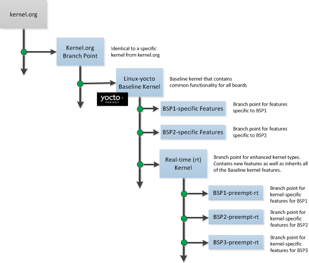

Yocto Project Development Manual
Copyright © 2010-2017 Linux Foundation
Permission is granted to copy, distribute and/or modify this document under the terms of the Creative Commons Attribution-Share Alike 2.0 UK: England & Wales as published by Creative Commons.
Manual Notes
For the latest version of the Yocto Project Development Manual associated with this Yocto Project release (version 2.3), see the Yocto Project Development Manual from the Yocto Project documentation page.
This version of the manual is version 2.3. For later releases of the Yocto Project (if they exist), go to the Yocto Project documentation page and use the drop-down "Active Releases" button and choose the Yocto Project version for which you want the manual.
For an in-development version of the Yocto Project Development Manual, see http://www.yoctoproject.org/docs/latest/dev-manual/dev-manual.html.
| Revision History | |
|---|---|
| Revision 1.1 | 6 October 2011 |
| The initial document released with the Yocto Project 1.1 Release. | |
| Revision 1.2 | April 2012 |
| Released with the Yocto Project 1.2 Release. | |
| Revision 1.3 | October 2012 |
| Released with the Yocto Project 1.3 Release. | |
| Revision 1.4 | April 2013 |
| Released with the Yocto Project 1.4 Release. | |
| Revision 1.5 | October 2013 |
| Released with the Yocto Project 1.5 Release. | |
| Revision 1.5.1 | January 2014 |
| Released with the Yocto Project 1.5.1 Release. | |
| Revision 1.6 | April 2014 |
| Released with the Yocto Project 1.6 Release. | |
| Revision 1.7 | October 2014 |
| Released with the Yocto Project 1.7 Release. | |
| Revision 1.8 | April 2015 |
| Released with the Yocto Project 1.8 Release. | |
| Revision 2.0 | October 2015 |
| Released with the Yocto Project 2.0 Release. | |
| Revision 2.1 | April 2016 |
| Released with the Yocto Project 2.1 Release. | |
| Revision 2.2 | October 2016 |
| Released with the Yocto Project 2.2 Release. | |
| Revision 2.3 | May 2017 |
| Released with the Yocto Project 2.3 Release. | |
Table of Contents
- 1. The Yocto Project Development Manual
- 2. Getting Started with the Yocto Project
- 3. The Yocto Project Open Source Development Environment
- 4. Common Development Models
- 5. Common Tasks
- 5.1. Understanding and Creating Layers
- 5.1.1. Layers
- 5.1.2. Creating Your Own Layer
- 5.1.3. Best Practices to Follow When Creating Layers
- 5.1.4. Making Sure Your Layer is Compatible With Yocto Project
- 5.1.5. Enabling Your Layer
- 5.1.6. Using .bbappend Files
- 5.1.7. Prioritizing Your Layer
- 5.1.8. Managing Layers
- 5.1.9. Creating a General Layer Using the yocto-layer Script
- 5.2. Customizing Images
- 5.3. Writing a New Recipe
- 5.3.1. Overview
- 5.3.2. Locate or Automatically Create a Base Recipe
- 5.3.3. Storing and Naming the Recipe
- 5.3.4. Understanding Recipe Syntax
- 5.3.5. Running a Build on the Recipe
- 5.3.6. Fetching Code
- 5.3.7. Unpacking Code
- 5.3.8. Patching Code
- 5.3.9. Licensing
- 5.3.10. Dependencies
- 5.3.11. Configuring the Recipe
- 5.3.12. Using Headers to Interface with Devices
- 5.3.13. Compilation
- 5.3.14. Installing
- 5.3.15. Enabling System Services
- 5.3.16. Packaging
- 5.3.17. Sharing Files Between Recipes
- 5.3.18. Properly Versioning Pre-Release Recipes
- 5.3.19. Post-Installation Scripts
- 5.3.20. Testing
- 5.3.21. Examples
- 5.3.22. Following Recipe Style Guidelines
- 5.4. Adding a New Machine
- 5.5. Building Targets with Multiple Configurations
- 5.6. Working With Libraries
- 5.7. Enabling GObject Introspection Support
- 5.8. Optionally Using an External Toolchain
- 5.9. Creating Partitioned Images
- 5.10. Building an Initial RAM Filesystem (initramfs) Image
- 5.11. Configuring the Kernel
- 5.12. Patching the Kernel
- 5.13. Making Images More Secure
- 5.14. Creating Your Own Distribution
- 5.15. Creating a Custom Template Configuration Directory
- 5.16. Building a Tiny System
- 5.17. Building Images for More than One Machine
- 5.18. Working with Packages
- 5.19. Working with Source Files
- 5.20. Building Software from an External Source
- 5.21. Selecting an Initialization Manager
- 5.22. Selecting a Device Manager
- 5.23. Using an External SCM
- 5.24. Creating a Read-Only Root Filesystem
- 5.25. Performing Automated Runtime Testing
- 5.26. Debugging With the GNU Project Debugger (GDB) Remotely
- 5.27. Debugging with the GNU Project Debugger (GDB) on the Target
- 5.28. Debugging Parallel Make Races
- 5.29. Maintaining Open Source License Compliance During Your Product's Lifecycle
- 5.30. Using the Error Reporting Tool
- 6. Using the Quick EMUlator (QEMU)
Chapter 1. The Yocto Project Development Manual¶
Table of Contents
1.1. Introduction¶
Welcome to the Yocto Project Development Manual! This manual provides information on how to use the Yocto Project to develop embedded Linux images and user-space applications that run on targeted devices. The manual provides an overview of image, kernel, and user-space application development using the Yocto Project. Because much of the information in this manual is general, it contains many references to other sources where you can find more detail. For example, you can find detailed information on Git, repositories, and open source in general in many places on the Internet. Another example specific to the Yocto Project is how to quickly set up your host development system and build an image, which you find in the Yocto Project Quick Start.
The Yocto Project Development Manual does, however, provide
guidance and examples on how to change the kernel source code,
reconfigure the kernel, and develop an application using
devtool.
Note
By default, using the Yocto Project creates a Poky distribution. However, you can create your own distribution by providing key Metadata. A good example is Angstrom, which has had a distribution based on the Yocto Project since its inception. Other examples include commercial distributions like Wind River Linux, Mentor Embedded Linux, ENEA Linux and others. See the "Creating Your Own Distribution" section for more information.1.2. What This Manual Provides¶
The following list describes what you can get from this manual:
Information that lets you get set up to develop using the Yocto Project.
Information to help developers who are new to the open source environment and to the distributed revision control system Git, which the Yocto Project uses.
An understanding of common end-to-end development models and tasks.
Information about common development tasks generally used during image development for embedded devices.
Information on using the Yocto Project integration of the QuickEMUlator (QEMU), which lets you simulate running on hardware an image you have built using the OpenEmbedded build system.
Many references to other sources of related information.
1.3. What this Manual Does Not Provide¶
This manual will not give you the following:
Step-by-step instructions when those instructions exist in other Yocto Project documentation: For example, the Yocto Project Software Development Kit (SDK) Developer's Guide manual contains detailed instructions on how to install an SDK, which is used to develop applications for target hardware.
Reference material: This type of material resides in an appropriate reference manual. For example, system variables are documented in the Yocto Project Reference Manual.
Detailed public information that is not specific to the Yocto Project: For example, exhaustive information on how to use Git is covered better through the Internet than in this manual.
1.4. Other Information¶
Because this manual presents overview information for many different topics, supplemental information is recommended for full comprehension. The following list presents other sources of information you might find helpful:
Yocto Project Website: The home page for the Yocto Project provides lots of information on the project as well as links to software and documentation.
Yocto Project Quick Start: This short document lets you get started with the Yocto Project and quickly begin building an image.
Yocto Project Reference Manual: This manual is a reference guide to the OpenEmbedded build system, which is based on BitBake. The build system is sometimes referred to as "Poky".
Yocto Project Software Development Kit (SDK) Developer's Guide: This guide provides information that lets you get going with the standard or extensible SDK. An SDK, with its cross-development toolchains, allows you to develop projects inside or outside of the Yocto Project environment.
Yocto Project Board Support Package (BSP) Developer's Guide: This guide defines the structure for BSP components. Having a commonly understood structure encourages standardization.
Yocto Project Linux Kernel Development Manual: This manual describes how to work with Linux Yocto kernels as well as provides a bit of conceptual information on the construction of the Yocto Linux kernel tree.
Yocto Project Profiling and Tracing Manual: This manual presents a set of common and generally useful tracing and profiling schemes along with their applications (as appropriate) to each tool.
Toaster User Manual: This manual introduces and describes how to set up and use Toaster, which is a web interface to the Yocto Project's OpenEmbedded Build System.
Eclipse IDE Yocto Plug-in: A step-by-step instructional video that demonstrates how an application developer uses Yocto Plug-in features within the Eclipse IDE.
FAQ: A list of commonly asked questions and their answers.
Release Notes: Features, updates and known issues for the current release of the Yocto Project.
Toaster: An Application Programming Interface (API) and web-based interface to the OpenEmbedded build system, which uses BitBake, that reports build information.
Build Appliance: A virtual machine that enables you to build and boot a custom embedded Linux image with the Yocto Project using a non-Linux development system.
Bugzilla: The bug tracking application the Yocto Project uses. If you find problems with the Yocto Project, you should report them using this application.
Yocto Project Mailing Lists: To subscribe to the Yocto Project mailing lists, click on the following URLs and follow the instructions:
http://lists.yoctoproject.org/listinfo/yocto for a Yocto Project Discussions mailing list.
http://lists.yoctoproject.org/listinfo/poky for a Yocto Project Discussions mailing list about the OpenEmbedded build system (Poky).
http://lists.yoctoproject.org/listinfo/yocto-announce for a mailing list to receive official Yocto Project announcements as well as Yocto Project milestones.
http://lists.yoctoproject.org/listinfo for a listing of all public mailing lists on
lists.yoctoproject.org.
Internet Relay Chat (IRC): Two IRC channels on freenode are available for Yocto Project and Poky discussions:
#yoctoand#poky, respectively.OpenEmbedded: The build system used by the Yocto Project. This project is the upstream, generic, embedded distribution from which the Yocto Project derives its build system (Poky) and to which it contributes.
BitBake: The tool used by the OpenEmbedded build system to process project metadata.
BitBake User Manual: A comprehensive guide to the BitBake tool. If you want information on BitBake, see this manual.
Quick EMUlator (QEMU): An open-source machine emulator and virtualizer.
Chapter 2. Getting Started with the Yocto Project¶
Table of Contents
This chapter introduces the Yocto Project and gives you an idea of what you need to get started. You can find enough information to set up your development host and build or use images for hardware supported by the Yocto Project by reading the Yocto Project Quick Start.
The remainder of this chapter summarizes what is in the Yocto Project Quick Start and provides some higher-level concepts you might want to consider.
2.1. Introducing the Yocto Project¶
The Yocto Project is an open-source collaboration project focused on embedded Linux development. The project currently provides a build system that is referred to as the OpenEmbedded build system in the Yocto Project documentation. The Yocto Project provides various ancillary tools for the embedded developer and also features the Sato reference User Interface, which is optimized for stylus-driven, low-resolution screens.
You can use the OpenEmbedded build system, which uses BitBake, to develop complete Linux images and associated user-space applications for architectures based on ARM, MIPS, PowerPC, x86 and x86-64.
Note
By default, using the Yocto Project creates a Poky distribution. However, you can create your own distribution by providing key Metadata. See the "Creating Your Own Distribution" section for more information.While the Yocto Project does not provide a strict testing framework, it does provide or generate for you artifacts that let you perform target-level and emulated testing and debugging. Additionally, if you are an Eclipse™ IDE user, you can install an Eclipse Yocto Plug-in to allow you to develop within that familiar environment.
2.2. Getting Set Up¶
Here is what you need to use the Yocto Project:
Host System: You should have a reasonably current Linux-based host system. You will have the best results with a recent release of Fedora, openSUSE, Debian, Ubuntu, or CentOS as these releases are frequently tested against the Yocto Project and officially supported. For a list of the distributions under validation and their status, see the "Supported Linux Distributions" section in the Yocto Project Reference Manual and the wiki page at Distribution Support.
You should also have about 50 Gbytes of free disk space for building images.
Packages: The OpenEmbedded build system requires that certain packages exist on your development system (e.g. Python 2.7). See "The Build Host Packages" section in the Yocto Project Quick Start and the "Required Packages for the Host Development System" section in the Yocto Project Reference Manual for the exact package requirements and the installation commands to install them for the supported distributions.
Yocto Project Release: You need a release of the Yocto Project locally installed on your development system. The documentation refers to this set of locally installed files as the Source Directory. You create your Source Directory by using Git to clone a local copy of the upstream
pokyrepository, or by downloading and unpacking a tarball of an official Yocto Project release. The preferred method is to create a clone of the repository.Working from a copy of the upstream repository allows you to contribute back into the Yocto Project or simply work with the latest software on a development branch. Because Git maintains and creates an upstream repository with a complete history of changes and you are working with a local clone of that repository, you have access to all the Yocto Project development branches and tag names used in the upstream repository.
Note
You can view the Yocto Project Source Repositories at http://git.yoctoproject.org/cgit.cgiThe following transcript shows how to clone the
pokyGit repository into the current working directory. The command creates the local repository in a directory namedpoky. For information on Git used within the Yocto Project, see the "Git" section.$ git clone git://git.yoctoproject.org/poky Cloning into 'poky'... remote: Counting objects: 226790, done. remote: Compressing objects: 100% (57465/57465), done. remote: Total 226790 (delta 165212), reused 225887 (delta 164327) Receiving objects: 100% (226790/226790), 100.98 MiB | 263 KiB/s, done. Resolving deltas: 100% (165212/165212), done.For another example of how to set up your own local Git repositories, see this wiki page, which describes how to create local Git repositories for both
pokyandmeta-intel.You can also get the Yocto Project Files by downloading Yocto Project releases from the Yocto Project website. From the website, you just click "Downloads" in the navigation pane to the left to display all Yocto Project downloads. Current and archived releases are available for download. Nightly and developmental builds are also maintained at http://autobuilder.yoctoproject.org/pub/nightly/. One final site you can visit for information on Yocto Project releases is the Releases wiki.
Yocto Project Kernel: If you are going to be making modifications to a supported Yocto Project kernel, you need to establish local copies of the source. You can find Git repositories of supported Yocto Project kernels organized under "Yocto Linux Kernel" in the Yocto Project Source Repositories at http://git.yoctoproject.org/cgit.cgi.
This setup can involve creating a bare clone of the Yocto Project kernel and then copying that cloned repository. You can create the bare clone and the copy of the bare clone anywhere you like. For simplicity, it is recommended that you create these structures outside of the Source Directory, which is usually named
poky.As an example, the following transcript shows how to create the bare clone of the
linux-yocto-3.19kernel and then create a copy of that clone.Note
When you have a local Yocto Project kernel Git repository, you can reference that repository rather than the upstream Git repository as part of theclonecommand. Doing so can speed up the process.In the following example, the bare clone is named
linux-yocto-3.19.git, while the copy is namedmy-linux-yocto-3.19-work:$ git clone --bare git://git.yoctoproject.org/linux-yocto-3.19 linux-yocto-3.19.git Cloning into bare repository 'linux-yocto-3.19.git'... remote: Counting objects: 3983256, done. remote: Compressing objects: 100% (605006/605006), done. remote: Total 3983256 (delta 3352832), reused 3974503 (delta 3344079) Receiving objects: 100% (3983256/3983256), 843.66 MiB | 1.07 MiB/s, done. Resolving deltas: 100% (3352832/3352832), done. Checking connectivity... done.Now create a clone of the bare clone just created:
$ git clone linux-yocto-3.19.git my-linux-yocto-3.19-work Cloning into 'my-linux-yocto-3.19-work'... done. Checking out files: 100% (48440/48440), done.The
meta-yocto-kernel-extrasGit Repository: Themeta-yocto-kernel-extrasGit repository contains Metadata needed only if you are modifying and building the kernel image. In particular, it contains the kernel BitBake append (.bbappend) files that you edit to point to your locally modified kernel source files and to build the kernel image. Pointing to these local files is much more efficient than requiring a download of the kernel's source files from upstream each time you make changes to the kernel.You can find the
meta-yocto-kernel-extrasGit Repository in the "Yocto Metadata Layers" area of the Yocto Project Source Repositories at http://git.yoctoproject.org/cgit.cgi. It is good practice to create this Git repository inside the Source Directory.Following is an example that creates the
meta-yocto-kernel-extrasGit repository inside the Source Directory, which is namedpokyin this case:$ cd ~/poky $ git clone git://git.yoctoproject.org/meta-yocto-kernel-extras meta-yocto-kernel-extras Cloning into 'meta-yocto-kernel-extras'... remote: Counting objects: 727, done. remote: Compressing objects: 100% (452/452), done. remote: Total 727 (delta 260), reused 719 (delta 252) Receiving objects: 100% (727/727), 536.36 KiB | 240 KiB/s, done. Resolving deltas: 100% (260/260), done.Supported Board Support Packages (BSPs): The Yocto Project supports many BSPs, which are maintained in their own layers or in layers designed to contain several BSPs. To get an idea of machine support through BSP layers, you can look at the index of machines for the release.
The Yocto Project uses the following BSP layer naming scheme:
meta-bsp_namewhere
bsp_nameis the recognized BSP name. Here is an example:meta-raspberrypiSee the "BSP Layers" section in the Yocto Project Board Support Package (BSP) Developer's Guide for more information on BSP Layers.
A useful Git repository released with the Yocto Project is
meta-intel, which is a parent layer that contains many supported BSP Layers. You can locate themeta-intelGit repository in the "Yocto Metadata Layers" area of the Yocto Project Source Repositories at http://git.yoctoproject.org/cgit.cgi.Using Git to create a local clone of the upstream repository can be helpful if you are working with BSPs. Typically, you set up the
meta-intelGit repository inside the Source Directory. For example, the following transcript shows the steps to clonemeta-intel.Note
Be sure to work in themeta-intelbranch that matches your Source Directory (i.e.poky) branch. For example, if you have checked out the "master" branch ofpokyand you are going to usemeta-intel, be sure to checkout the "master" branch ofmeta-intel.$ cd ~/poky $ git clone git://git.yoctoproject.org/meta-intel.git Cloning into 'meta-intel'... remote: Counting objects: 11917, done. remote: Compressing objects: 100% (3842/3842), done. remote: Total 11917 (delta 6840), reused 11699 (delta 6622) Receiving objects: 100% (11917/11917), 2.92 MiB | 2.88 MiB/s, done. Resolving deltas: 100% (6840/6840), done. Checking connectivity... done.The same wiki page referenced earlier covers how to set up the
meta-intelGit repository.Eclipse Yocto Plug-in: If you are developing applications using the Eclipse Integrated Development Environment (IDE), you will need this plug-in. See the "Setting up the Eclipse IDE" section in the Yocto Project Software Development Kit (SDK) Developer's Guide for more information.
2.3. Building Images¶
The build process creates an entire Linux distribution, including the toolchain, from source. For more information on this topic, see the "Building Images" section in the Yocto Project Quick Start.
The build process is as follows:
Make sure you have set up the Source Directory described in the previous section.
Initialize the build environment by sourcing a build environment script (i.e.
oe-init-build-envoroe-init-build-env-memres).Optionally ensure the
conf/local.confconfiguration file, which is found in the Build Directory, is set up how you want it. This file defines many aspects of the build environment including the target machine architecture through theMACHINEvariable, the packaging format used during the build (PACKAGE_CLASSES), and a centralized tarball download directory through theDL_DIRvariable.Build the image using the
bitbakecommand. If you want information on BitBake, see the BitBake User Manual.Run the image either on the actual hardware or using the QEMU emulator.
2.4. Flashing Images Using bmaptool¶
An easy way to flash an image to a bootable device is to use
bmaptool, which is integrated into the
OpenEmbedded build system.
Following, is an example that shows how to flash a Wic image.
Note
You can usebmaptool to flash any
type of image.
Use these steps to flash an image using
bmaptool:
Note
Unless you are able to install thebmap-tools package as mentioned in the note
in the second bullet of step 3 further down, you will need to build
bmaptool before using it.
Build the tool using the following command:
$ bitbake bmap-tools-native
Add the following to your
local.conffile:IMAGE_FSTYPES += "wic wic.bmap"Either have your image ready (pre-built) or take the step build the image:
$ bitbakeimageFlash the image to the media by using
bmaptooldepending on your particular setup:If you have write access to the media, use this command form:
$ oe-run-native bmaptool copy ./tmp/deploy/images/qemux86-64/core-image-minimal-machine.wic /dev/sdXIf you do not have write access to the media, use the following commands:
$ sudo bash $ PATH=tmp/sysroots/x86_64-linux/usr/bin/ bmaptool copy ./tmp/deploy/images/qemux86-64/core-image-minimal-machine.wic /dev/sdXNote
If you are using Ubuntu or Debian distributions, you can install thebmap-toolspackage using the following command and then use the tool without specifyingPATHeven from the root account:$ sudo apt-get install bmap-tools
For help on the bmaptool command, use either of
the following commands:
$ bmaptool --help
$ oe-run-native bmaptool --help
2.5. Using Pre-Built Binaries and QEMU¶
Another option you have to get started is to use pre-built binaries. The Yocto Project provides many types of binaries with each release. See the "Images" chapter in the Yocto Project Reference Manual for descriptions of the types of binaries that ship with a Yocto Project release.
Using a pre-built binary is ideal for developing software
applications to run on your target hardware.
To do this, you need to be able to access the appropriate
cross-toolchain tarball for the architecture on which you are
developing.
If you are using an SDK type image, the image ships with the complete
toolchain native to the architecture (i.e. a toolchain designed to
run on the
SDKMACHINE).
If you are not using an SDK type image, you need to separately download
and install the stand-alone Yocto Project cross-toolchain tarball.
See the
"Obtaining the SDK"
appendix in the Yocto Project Software Development Kit (SDK)
Developer's Guide for more information on locating and installing
cross-toolchains.
Regardless of the type of image you are using, you need to download the pre-built kernel that you will boot in the QEMU emulator and then download and extract the target root filesystem for your target machine’s architecture. You can get architecture-specific binaries and file systems from machines. You can get installation scripts for stand-alone toolchains from toolchains. Once you have all your files, you set up the environment to emulate the hardware by sourcing an environment setup script. Finally, you start the QEMU emulator. You can find details on all these steps in the Yocto Project Software Development Kit (SDK) Developer's Guide. You can learn more about using QEMU with the Yocto Project in the "Using the Quick EMUlator (QEMU)" section.
Using QEMU to emulate your hardware can result in speed issues
depending on the target and host architecture mix.
For example, using the qemux86 image in the emulator
on an Intel-based 32-bit (x86) host machine is fast because the target and
host architectures match.
On the other hand, using the qemuarm image on the same Intel-based
host can be slower.
But, you still achieve faithful emulation of ARM-specific issues.
To speed things up, the QEMU images support using distcc
to call a cross-compiler outside the emulated system.
If you used runqemu to start QEMU, and the
distccd application is present on the host system, any
BitBake cross-compiling toolchain available from the build system is automatically
used from within QEMU simply by calling distcc.
You can accomplish this by defining the cross-compiler variable
(e.g. export CC="distcc").
Alternatively, if you are using a suitable SDK image or the appropriate
stand-alone toolchain is present,
the toolchain is also automatically used.
Note
Several mechanisms exist that let you connect to the system running on the QEMU emulator:QEMU provides a framebuffer interface that makes standard consoles available.
Generally, headless embedded devices have a serial port. If so, you can configure the operating system of the running image to use that port to run a console. The connection uses standard IP networking.
SSH servers exist in some QEMU images. The
core-image-satoQEMU image has a Dropbear secure shell (SSH) server that runs with the root password disabled. Thecore-image-full-cmdlineandcore-image-lsbQEMU images have OpenSSH instead of Dropbear. Including these SSH servers allow you to use standardsshandscpcommands. Thecore-image-minimalQEMU image, however, contains no SSH server.You can use a provided, user-space NFS server to boot the QEMU session using a local copy of the root filesystem on the host. In order to make this connection, you must extract a root filesystem tarball by using the
runqemu-extract-sdkcommand. After running the command, you must then point therunqemuscript to the extracted directory instead of a root filesystem image file.
Chapter 3. The Yocto Project Open Source Development Environment¶
Table of Contents
This chapter helps you understand the Yocto Project as an open source development project. In general, working in an open source environment is very different from working in a closed, proprietary environment. Additionally, the Yocto Project uses specific tools and constructs as part of its development environment. This chapter specifically addresses open source philosophy, using the Yocto Project in a team environment, source repositories, Yocto Project terms, licensing, the open source distributed version control system Git, workflows, bug tracking, and how to submit changes.
3.1. Open Source Philosophy¶
Open source philosophy is characterized by software development directed by peer production and collaboration through an active community of developers. Contrast this to the more standard centralized development models used by commercial software companies where a finite set of developers produces a product for sale using a defined set of procedures that ultimately result in an end product whose architecture and source material are closed to the public.
Open source projects conceptually have differing concurrent agendas, approaches, and production. These facets of the development process can come from anyone in the public (community) that has a stake in the software project. The open source environment contains new copyright, licensing, domain, and consumer issues that differ from the more traditional development environment. In an open source environment, the end product, source material, and documentation are all available to the public at no cost.
A benchmark example of an open source project is the Linux kernel, which was initially conceived and created by Finnish computer science student Linus Torvalds in 1991. Conversely, a good example of a non-open source project is the Windows® family of operating systems developed by Microsoft® Corporation.
Wikipedia has a good historical description of the Open Source Philosophy here. You can also find helpful information on how to participate in the Linux Community here.
3.2. Using the Yocto Project in a Team Environment¶
It might not be immediately clear how you can use the Yocto Project in a team environment, or scale it for a large team of developers. One of the strengths of the Yocto Project is that it is extremely flexible. Thus, you can adapt it to many different use cases and scenarios. However, these characteristics can cause a struggle if you are trying to create a working setup that scales across a large team.
To help with these types of situations, this section presents some of the project's most successful experiences, practices, solutions, and available technologies that work well. Keep in mind, the information here is a starting point. You can build off it and customize it to fit any particular working environment and set of practices.
3.2.1. System Configurations¶
Systems across a large team should meet the needs of two types of developers: those working on the contents of the operating system image itself and those developing applications. Regardless of the type of developer, their workstations must be both reasonably powerful and run Linux.
3.2.1.1. Application Development¶
For developers who mainly do application level work on top of an existing software stack, the following list shows practices that work best. For information on using a Software Development Kit (SDK), see the Yocto Project Software Development Kit (SDK) Developer's Guide:
Use a pre-built toolchain that contains the software stack itself. Then, develop the application code on top of the stack. This method works well for small numbers of relatively isolated applications.
When possible, use the Yocto Project plug-in for the Eclipse™ IDE and SDK development practices. For more information, see the "Yocto Project Software Development Kit (SDK) Developer's Guide".
Keep your cross-development toolchains updated. You can do this through provisioning either as new toolchain downloads or as updates through a package update mechanism using
opkgto provide updates to an existing toolchain. The exact mechanics of how and when to do this are a question for local policy.Use multiple toolchains installed locally into different locations to allow development across versions.
3.2.1.2. Core System Development¶
For core system development, it is often best to have the build system itself available on the developer workstations so developers can run their own builds and directly rebuild the software stack. You should keep the core system unchanged as much as possible and do your work in layers on top of the core system. Doing so gives you a greater level of portability when upgrading to new versions of the core system or Board Support Packages (BSPs). You can share layers amongst the developers of a particular project and contain the policy configuration that defines the project.
Aside from the previous best practices, there exists a number of tips and tricks that can help speed up core development projects:
Use a Shared State Cache (sstate) among groups of developers who are on a fast network. The best way to share sstate is through a Network File System (NFS) share. The first user to build a given component for the first time contributes that object to the sstate, while subsequent builds from other developers then reuse the object rather than rebuild it themselves.
Although it is possible to use other protocols for the sstate such as HTTP and FTP, you should avoid these. Using HTTP limits the sstate to read-only and FTP provides poor performance.
Have autobuilders contribute to the sstate pool similarly to how the developer workstations contribute. For information, see the "Autobuilders" section.
Build stand-alone tarballs that contain "missing" system requirements if for some reason developer workstations do not meet minimum system requirements such as latest Python versions,
chrpath, or other tools. You can install and relocate the tarball exactly as you would the usual cross-development toolchain so that all developers can meet minimum version requirements on most distributions.Use a small number of shared, high performance systems for testing purposes (e.g. dual, six-core Xeons with 24 Gbytes of RAM and plenty of disk space). Developers can use these systems for wider, more extensive testing while they continue to develop locally using their primary development system.
Enable the PR Service when package feeds need to be incremental with continually increasing PR values. Typically, this situation occurs when you use or publish package feeds and use a shared state. You should enable the PR Service for all users who use the shared state pool. For more information on the PR Service, see the "Working With a PR Service".
3.2.2. Source Control Management (SCM)¶
Keeping your Metadata and any software you are developing under the control of an SCM system that is compatible with the OpenEmbedded build system is advisable. Of the SCMs BitBake supports, the Yocto Project team strongly recommends using Git. Git is a distributed system that is easy to backup, allows you to work remotely, and then connects back to the infrastructure.
Note
For information about BitBake, see the BitBake User Manual.
It is relatively easy to set up Git services and create
infrastructure like
http://git.yoctoproject.org,
which is based on server software called
gitolite with cgit
being used to generate the web interface that lets you view the
repositories.
The gitolite software identifies users
using SSH keys and allows branch-based
access controls to repositories that you can control as little
or as much as necessary.
Note
The setup of these services is beyond the scope of this manual. However, sites such as these exist that describe how to perform setup:Git documentation: Describes how to install
gitoliteon the server.The
gitolitemaster index: All topics forgitolite.Interfaces, frontends, and tools: Documentation on how to create interfaces and frontends for Git.
3.2.3. Autobuilders¶
Autobuilders are often the core of a development project. It is here that changes from individual developers are brought together and centrally tested and subsequent decisions about releases can be made. Autobuilders also allow for "continuous integration" style testing of software components and regression identification and tracking.
See "Yocto Project Autobuilder" for more information and links to buildbot. The Yocto Project team has found this implementation works well in this role. A public example of this is the Yocto Project Autobuilders, which we use to test the overall health of the project.
The features of this system are:
Highlights when commits break the build.
Populates an sstate cache from which developers can pull rather than requiring local builds.
Allows commit hook triggers, which trigger builds when commits are made.
Allows triggering of automated image booting and testing under the QuickEMUlator (QEMU).
Supports incremental build testing and from-scratch builds.
Shares output that allows developer testing and historical regression investigation.
Creates output that can be used for releases.
Allows scheduling of builds so that resources can be used efficiently.
3.2.4. Policies and Change Flow¶
The Yocto Project itself uses a hierarchical structure and a
pull model.
Scripts exist to create and send pull requests
(i.e. create-pull-request and
send-pull-request).
This model is in line with other open source projects where
maintainers are responsible for specific areas of the project
and a single maintainer handles the final "top-of-tree" merges.
Note
You can also use a more collective push model. Thegitolite software supports both the
push and pull models quite easily.
As with any development environment, it is important to document the policy used as well as any main project guidelines so they are understood by everyone. It is also a good idea to have well structured commit messages, which are usually a part of a project's guidelines. Good commit messages are essential when looking back in time and trying to understand why changes were made.
If you discover that changes are needed to the core layer of the project, it is worth sharing those with the community as soon as possible. Chances are if you have discovered the need for changes, someone else in the community needs them also.
3.2.5. Summary¶
This section summarizes the key recommendations described in the previous sections:
Use Git as the source control system.
Maintain your Metadata in layers that make sense for your situation. See the "Understanding and Creating Layers" section for more information on layers.
Separate the project's Metadata and code by using separate Git repositories. See the "Yocto Project Source Repositories" section for information on these repositories. See the "Getting Set Up" section for information on how to set up local Git repositories for related upstream Yocto Project Git repositories.
Set up the directory for the shared state cache (
SSTATE_DIR) where it makes sense. For example, set up the sstate cache on a system used by developers in the same organization and share the same source directories on their machines.Set up an Autobuilder and have it populate the sstate cache and source directories.
The Yocto Project community encourages you to send patches to the project to fix bugs or add features. If you do submit patches, follow the project commit guidelines for writing good commit messages. See the "How to Submit a Change" section.
Send changes to the core sooner than later as others are likely to run into the same issues. For some guidance on mailing lists to use, see the list in the "How to Submit a Change" section. For a description of the available mailing lists, see the "Mailing Lists" section in the Yocto Project Reference Manual.
3.3. Yocto Project Source Repositories¶
The Yocto Project team maintains complete source repositories for all Yocto Project files at http://git.yoctoproject.org/cgit/cgit.cgi. This web-based source code browser is organized into categories by function such as IDE Plugins, Matchbox, Poky, Yocto Linux Kernel, and so forth. From the interface, you can click on any particular item in the "Name" column and see the URL at the bottom of the page that you need to clone a Git repository for that particular item. Having a local Git repository of the Source Directory, which is usually named "poky", allows you to make changes, contribute to the history, and ultimately enhance the Yocto Project's tools, Board Support Packages, and so forth.
For any supported release of Yocto Project, you can also go to the
Yocto Project Website and
select the "Downloads" tab and get a released tarball of the
poky repository or any supported BSP tarballs.
Unpacking these tarballs gives you a snapshot of the released
files.
Notes
The recommended method for setting up the Yocto Project Source Directory and the files for supported BSPs (e.g.,
meta-intel) is to use Git to create a local copy of the upstream repositories.Be sure to always work in matching branches for both the selected BSP repository and the Source Directory (i.e.
poky) repository. For example, if you have checked out the "master" branch ofpokyand you are going to usemeta-intel, be sure to checkout the "master" branch ofmeta-intel.
In summary, here is where you can get the project files needed for development:
Source Repositories: This area contains IDE Plugins, Matchbox, Poky, Poky Support, Tools, Yocto Linux Kernel, and Yocto Metadata Layers. You can create local copies of Git repositories for each of these areas.

Index of /releases: This is an index of releases such as the Eclipse™ Yocto Plug-in, miscellaneous support, Poky, Pseudo, installers for cross-development toolchains, and all released versions of Yocto Project in the form of images or tarballs. Downloading and extracting these files does not produce a local copy of the Git repository but rather a snapshot of a particular release or image.

"Downloads" page for the Yocto Project Website: Access this page by going to the website and then selecting the "Downloads" tab. This page allows you to download any Yocto Project release or Board Support Package (BSP) in tarball form. The tarballs are similar to those found in the Index of /releases: area.
3.4. Yocto Project Terms¶
Following is a list of terms and definitions users new to the Yocto Project development environment might find helpful. While some of these terms are universal, the list includes them just in case:
Append Files: Files that append build information to a recipe file. Append files are known as BitBake append files and
.bbappendfiles. The OpenEmbedded build system expects every append file to have a corresponding recipe (.bb) file. Furthermore, the append file and corresponding recipe file must use the same root filename. The filenames can differ only in the file type suffix used (e.g.formfactor_0.0.bbandformfactor_0.0.bbappend).Information in append files extends or overrides the information in the similarly-named recipe file. For an example of an append file in use, see the "Using .bbappend Files" section.
Note
Append files can also use wildcard patterns in their version numbers so they can be applied to more than one version of the underlying recipe file.BitBake: The task executor and scheduler used by the OpenEmbedded build system to build images. For more information on BitBake, see the BitBake User Manual.
Build Directory: This term refers to the area used by the OpenEmbedded build system for builds. The area is created when you
sourcethe setup environment script that is found in the Source Directory (i.e.oe-init-build-envoroe-init-build-env-memres). TheTOPDIRvariable points to the Build Directory.You have a lot of flexibility when creating the Build Directory. Following are some examples that show how to create the directory. The examples assume your Source Directory is named
poky:Create the Build Directory inside your Source Directory and let the name of the Build Directory default to
build:$ cd $HOME/poky $ source oe-init-build-envCreate the Build Directory inside your home directory and specifically name it
test-builds:$ cd $HOME $ source poky/oe-init-build-env test-buildsProvide a directory path and specifically name the Build Directory. Any intermediate folders in the pathname must exist. This next example creates a Build Directory named
YP-18.0.0in your home directory within the existing directorymybuilds:$cd $HOME $ source $HOME/poky/oe-init-build-env $HOME/mybuilds/YP-18.0.0
Note
By default, the Build Directory containsTMPDIR, which is a temporary directory the build system uses for its work.TMPDIRcannot be under NFS. Thus, by default, the Build Directory cannot be under NFS. However, if you need the Build Directory to be under NFS, you can set this up by settingTMPDIRin yourlocal.conffile to use a local drive. Doing so effectively separatesTMPDIRfromTOPDIR, which is the Build Directory.Classes: Files that provide for logic encapsulation and inheritance so that commonly used patterns can be defined once and then easily used in multiple recipes. For reference information on the Yocto Project classes, see the "Classes" chapter of the Yocto Project Reference Manual. Class files end with the
.bbclassfilename extension.Configuration File: Configuration information in various
.conffiles provides global definitions of variables. Theconf/local.confconfiguration file in the Build Directory contains user-defined variables that affect every build. Themeta-poky/conf/distro/poky.confconfiguration file defines Yocto "distro" configuration variables used only when building with this policy. Machine configuration files, which are located throughout the Source Directory, define variables for specific hardware and are only used when building for that target (e.g. themachine/beaglebone.confconfiguration file defines variables for the Texas Instruments ARM Cortex-A8 development board). Configuration files end with a.conffilename extension.Cross-Development Toolchain: In general, a cross-development toolchain is a collection of software development tools and utilities that run on one architecture and allow you to develop software for a different, or targeted, architecture. These toolchains contain cross-compilers, linkers, and debuggers that are specific to the target architecture.
The Yocto Project supports two different cross-development toolchains:
A toolchain only used by and within BitBake when building an image for a target architecture.
A relocatable toolchain used outside of BitBake by developers when developing applications that will run on a targeted device.
Creation of these toolchains is simple and automated. For information on toolchain concepts as they apply to the Yocto Project, see the "Cross-Development Toolchain Generation" section in the Yocto Project Reference Manual. You can also find more information on using the relocatable toolchain in the Yocto Project Software Development Kit (SDK) Developer's Guide.
Image: An image is an artifact of the BitBake build process given a collection of recipes and related Metadata. Images are the binary output that run on specific hardware or QEMU and are used for specific use-cases. For a list of the supported image types that the Yocto Project provides, see the "Images" chapter in the Yocto Project Reference Manual.
Layer: A collection of recipes representing the core, a BSP, or an application stack. For a discussion specifically on BSP Layers, see the "BSP Layers" section in the Yocto Project Board Support Packages (BSP) Developer's Guide.
Metadata: The files that BitBake parses when building an image. In general, Metadata includes recipes, classes, and configuration files. In the context of the kernel ("kernel Metadata"), it refers to Metadata in the
metabranches of the kernel source Git repositories.OE-Core: A core set of Metadata originating with OpenEmbedded (OE) that is shared between OE and the Yocto Project. This Metadata is found in the
metadirectory of the Source Directory.OpenEmbedded Build System: The build system specific to the Yocto Project. The OpenEmbedded build system is based on another project known as "Poky", which uses BitBake as the task executor. Throughout the Yocto Project documentation set, the OpenEmbedded build system is sometimes referred to simply as "the build system". If other build systems, such as a host or target build system are referenced, the documentation clearly states the difference.
Note
For some historical information about Poky, see the Poky term.Package: In the context of the Yocto Project, this term refers to a recipe's packaged output produced by BitBake (i.e. a "baked recipe"). A package is generally the compiled binaries produced from the recipe's sources. You "bake" something by running it through BitBake.
It is worth noting that the term "package" can, in general, have subtle meanings. For example, the packages referred to in the "The Build Host Packages" section are compiled binaries that, when installed, add functionality to your Linux distribution.
Another point worth noting is that historically within the Yocto Project, recipes were referred to as packages - thus, the existence of several BitBake variables that are seemingly mis-named, (e.g.
PR,PV, andPE).Package Groups: Arbitrary groups of software Recipes. You use package groups to hold recipes that, when built, usually accomplish a single task. For example, a package group could contain the recipes for a company’s proprietary or value-add software. Or, the package group could contain the recipes that enable graphics. A package group is really just another recipe. Because package group files are recipes, they end with the
.bbfilename extension.Poky: The term "poky" can mean several things. In its most general sense, it is an open-source project that was initially developed by OpenedHand. With OpenedHand, poky was developed off of the existing OpenEmbedded build system becoming a commercially supportable build system for embedded Linux. After Intel Corporation acquired OpenedHand, the project poky became the basis for the Yocto Project's build system.
Within the Yocto Project source repositories,
pokyexists as a separate Git repository you can clone to yield a local copy on your host system. Thus, "poky" can refer to the local copy of the Source Directory used for development within the Yocto Project.Finally, "poky" can refer to the default
DISTRO(i.e. distribution) created when you use the Yocto Project in conjunction with thepokyrepository to build an image.Recipe: A set of instructions for building packages. A recipe describes where you get source code, which patches to apply, how to configure the source, how to compile it and so on. Recipes also describe dependencies for libraries or for other recipes. Recipes represent the logical unit of execution, the software to build, the images to build, and use the
.bbfile extension.Source Directory: This term refers to the directory structure created as a result of creating a local copy of the
pokyGit repositorygit://git.yoctoproject.org/pokyor expanding a releasedpokytarball.Note
Creating a local copy of thepokyGit repository is the recommended method for setting up your Source Directory.Sometimes you might hear the term "poky directory" used to refer to this directory structure.
Note
The OpenEmbedded build system does not support file or directory names that contain spaces. Be sure that the Source Directory you use does not contain these types of names.The Source Directory contains BitBake, Documentation, Metadata and other files that all support the Yocto Project. Consequently, you must have the Source Directory in place on your development system in order to do any development using the Yocto Project.
When you create a local copy of the Git repository, you can name the repository anything you like. Throughout much of the documentation, "poky" is used as the name of the top-level folder of the local copy of the poky Git repository. So, for example, cloning the
pokyGit repository results in a local Git repository whose top-level folder is also named "poky".While it is not recommended that you use tarball expansion to set up the Source Directory, if you do, the top-level directory name of the Source Directory is derived from the Yocto Project release tarball. For example, downloading and unpacking
poky-pyro-18.0.0.tar.bz2results in a Source Directory whose root folder is namedpoky-pyro-18.0.0.It is important to understand the differences between the Source Directory created by unpacking a released tarball as compared to cloning
git://git.yoctoproject.org/poky. When you unpack a tarball, you have an exact copy of the files based on the time of release - a fixed release point. Any changes you make to your local files in the Source Directory are on top of the release and will remain local only. On the other hand, when you clone thepokyGit repository, you have an active development repository with access to the upstream repository's branches and tags. In this case, any local changes you make to the local Source Directory can be later applied to active development branches of the upstreampokyGit repository.For more information on concepts related to Git repositories, branches, and tags, see the "Repositories, Tags, and Branches" section.
Task: A unit of execution for BitBake (e.g.
do_compile,do_fetch,do_patch, and so forth).Upstream: A reference to source code or repositories that are not local to the development system but located in a master area that is controlled by the maintainer of the source code. For example, in order for a developer to work on a particular piece of code, they need to first get a copy of it from an "upstream" source.
3.5. Licensing¶
Because open source projects are open to the public, they have different licensing structures in place. License evolution for both Open Source and Free Software has an interesting history. If you are interested in this history, you can find basic information here:
In general, the Yocto Project is broadly licensed under the Massachusetts Institute of Technology (MIT) License. MIT licensing permits the reuse of software within proprietary software as long as the license is distributed with that software. MIT is also compatible with the GNU General Public License (GPL). Patches to the Yocto Project follow the upstream licensing scheme. You can find information on the MIT license here. You can find information on the GNU GPL here.
When you build an image using the Yocto Project, the build process uses a
known list of licenses to ensure compliance.
You can find this list in the
Source Directory at
meta/files/common-licenses.
Once the build completes, the list of all licenses found and used during that build are
kept in the
Build Directory at
tmp/deploy/licenses.
If a module requires a license that is not in the base list, the build process generates a warning during the build. These tools make it easier for a developer to be certain of the licenses with which their shipped products must comply. However, even with these tools it is still up to the developer to resolve potential licensing issues.
The base list of licenses used by the build process is a combination of the Software Package Data Exchange (SPDX) list and the Open Source Initiative (OSI) projects. SPDX Group is a working group of the Linux Foundation that maintains a specification for a standard format for communicating the components, licenses, and copyrights associated with a software package. OSI is a corporation dedicated to the Open Source Definition and the effort for reviewing and approving licenses that conform to the Open Source Definition (OSD).
You can find a list of the combined SPDX and OSI licenses that the
Yocto Project uses in the
meta/files/common-licenses directory in your
Source Directory.
For information that can help you maintain compliance with various open source licensing during the lifecycle of a product created using the Yocto Project, see the "Maintaining Open Source License Compliance During Your Product's Lifecycle" section.
3.6. Git¶
The Yocto Project makes extensive use of Git, which is a free, open source distributed version control system. Git supports distributed development, non-linear development, and can handle large projects. It is best that you have some fundamental understanding of how Git tracks projects and how to work with Git if you are going to use the Yocto Project for development. This section provides a quick overview of how Git works and provides you with a summary of some essential Git commands.
For more information on Git, see http://git-scm.com/documentation. If you need to download Git, go to http://git-scm.com/download.
3.6.1. Repositories, Tags, and Branches¶
As mentioned earlier in the section "Yocto Project Source Repositories", the Yocto Project maintains source repositories at http://git.yoctoproject.org/cgit.cgi. If you look at this web-interface of the repositories, each item is a separate Git repository.
Git repositories use branching techniques that track content change (not files) within a project (e.g. a new feature or updated documentation). Creating a tree-like structure based on project divergence allows for excellent historical information over the life of a project. This methodology also allows for an environment from which you can do lots of local experimentation on projects as you develop changes or new features.
A Git repository represents all development efforts for a given project.
For example, the Git repository poky contains all changes
and developments for Poky over the course of its entire life.
That means that all changes that make up all releases are captured.
The repository maintains a complete history of changes.
You can create a local copy of any repository by "cloning" it with the Git
clone command.
When you clone a Git repository, you end up with an identical copy of the
repository on your development system.
Once you have a local copy of a repository, you can take steps to develop locally.
For examples on how to clone Git repositories, see the
"Getting Set Up" section.
It is important to understand that Git tracks content change and
not files.
Git uses "branches" to organize different development efforts.
For example, the poky repository has
several branches that include the current
pyro branch, the
master branch, and many branches for past
Yocto Project releases.
You can see all the branches by going to
http://git.yoctoproject.org/cgit.cgi/poky/ and
clicking on the
[...]
link beneath the "Branch" heading.
Each of these branches represents a specific area of development.
The master branch represents the current or most recent
development.
All other branches represent offshoots of the master
branch.
When you create a local copy of a Git repository, the copy has the same set
of branches as the original.
This means you can use Git to create a local working area (also called a branch)
that tracks a specific development branch from the source Git repository.
in other words, you can define your local Git environment to work on any development
branch in the repository.
To help illustrate, here is a set of commands that creates a local copy of the
poky Git repository and then creates and checks out a local
Git branch that tracks the Yocto Project 2.3 Release (Pyro) development:
$ cd ~
$ git clone git://git.yoctoproject.org/poky
$ cd poky
$ git checkout -b pyro origin/pyro
In this example, the name of the top-level directory of your local Source Directory is "poky" and the name of that local working area (local branch) you just created and checked out is "pyro". The files in your local repository now reflect the same files that are in the "pyro" development branch of the Yocto Project's "poky" upstream repository. It is important to understand that when you create and checkout a local working branch based on a branch name, your local environment matches the "tip" of that development branch at the time you created your local branch, which could be different from the files at the time of a similarly named release. In other words, creating and checking out a local branch based on the "pyro" branch name is not the same as cloning and checking out the "master" branch. Keep reading to see how you create a local snapshot of a Yocto Project Release.
Git uses "tags" to mark specific changes in a repository.
Typically, a tag is used to mark a special point such as the final
change before a project is released.
You can see the tags used with the poky Git
repository by going to
http://git.yoctoproject.org/cgit.cgi/poky/ and
clicking on the
[...]
link beneath the "Tag" heading.
Some key tags are
dizzy-12.0.0,
fido-13.0.0,
jethro-14.0.0, and
pyro-18.0.0.
These tags represent Yocto Project releases.
When you create a local copy of the Git repository, you also have access to all the tags. Similar to branches, you can create and checkout a local working Git branch based on a tag name. When you do this, you get a snapshot of the Git repository that reflects the state of the files when the change was made associated with that tag. The most common use is to checkout a working branch that matches a specific Yocto Project release. Here is an example:
$ cd ~
$ git clone git://git.yoctoproject.org/poky
$ cd poky
$ git checkout -b my-pyro-18.0.0 pyro-18.0.0
In this example, the name of the top-level directory of your local Yocto Project
Files Git repository is poky.
And, the name of the local branch you have created and checked out is
my-pyro-18.0.0.
The files in your repository now exactly match the Yocto Project 2.3
Release tag (pyro-18.0.0).
It is important to understand that when you create and checkout a local
working branch based on a tag, your environment matches a specific point
in time and not the entire development branch.
3.6.2. Basic Commands¶
Git has an extensive set of commands that lets you manage changes and perform collaboration over the life of a project. Conveniently though, you can manage with a small set of basic operations and workflows once you understand the basic philosophy behind Git. You do not have to be an expert in Git to be functional. A good place to look for instruction on a minimal set of Git commands is here. If you need to download Git, you can do so here, although any reasonably current Linux distribution should already have an installable package for Git.
If you do not know much about Git, you should educate yourself by visiting the links previously mentioned.
The following list briefly describes some basic Git operations as a way to get started. As with any set of commands, this list (in most cases) simply shows the base command and omits the many arguments they support. See the Git documentation for complete descriptions and strategies on how to use these commands:
git init: Initializes an empty Git repository. You cannot use Git commands unless you have a.gitrepository.git clone: Creates a local clone of a Git repository. During collaboration, this command allows you to create a local Git repository that is on equal footing with a fellow developer’s Git repository.git add: Stages updated file contents to the index that Git uses to track changes. You must stage all files that have changed before you can commit them.git commit: Creates a "commit" that documents the changes you made. Commits are used for historical purposes, for determining if a maintainer of a project will allow the change, and for ultimately pushing the change from your local Git repository into the project’s upstream (or master) repository.git status: Reports any modified files that possibly need to be staged and committed.git checkoutbranch-name: Changes your working branch. This command is analogous to "cd".git checkout –bworking-branch: Creates a working branch on your local machine where you can isolate work. It is a good idea to use local branches when adding specific features or changes. This way if you do not like what you have done you can easily get rid of the work.git branch: Reports existing local branches and tells you the branch in which you are currently working.git branch -Dbranch-name: Deletes an existing local branch. You need to be in a local branch other than the one you are deleting in order to deletebranch-name.git pull: Retrieves information from an upstream Git repository and places it in your local Git repository. You use this command to make sure you are synchronized with the repository from which you are basing changes (.e.g. the master branch).git push: Sends all your committed local changes to an upstream Git repository (e.g. a contribution repository). The maintainer of the project draws from these repositories when adding changes to the project’s master repository or other development branch.git merge: Combines or adds changes from one local branch of your repository with another branch. When you create a local Git repository, the default branch is named "master". A typical workflow is to create a temporary branch for isolated work, make and commit your changes, switch to your local master branch, merge the changes from the temporary branch into the local master branch, and then delete the temporary branch.git cherry-pick: Choose and apply specific commits from one branch into another branch. There are times when you might not be able to merge all the changes in one branch with another but need to pick out certain ones.gitk: Provides a GUI view of the branches and changes in your local Git repository. This command is a good way to graphically see where things have diverged in your local repository.git log: Reports a history of your changes to the repository.git diff: Displays line-by-line differences between your local working files and the same files in the upstream Git repository that your branch currently tracks.
3.7. Workflows¶
This section provides some overview on workflows using Git. In particular, the information covers basic practices that describe roles and actions in a collaborative development environment. Again, if you are familiar with this type of development environment, you might want to just skip this section.
The Yocto Project files are maintained using Git in a "master" branch whose Git history tracks every change and whose structure provides branches for all diverging functionality. Although there is no need to use Git, many open source projects do so. For the Yocto Project, a key individual called the "maintainer" is responsible for the "master" branch of a given Git repository. The "master" branch is the “upstream” repository where the final builds of the project occur. The maintainer is responsible for accepting changes from other developers and for organizing the underlying branch structure to reflect release strategies and so forth.
Note
For information on finding out who is responsible for (maintains) a particular area of code, see the "How to Submit a Change" section.
The project also has an upstream contribution Git repository named
poky-contrib.
You can see all the branches in this repository using the web interface
of the
Source Repositories organized
within the "Poky Support" area.
These branches temporarily hold changes to the project that have been
submitted or committed by the Yocto Project development team and by
community members who contribute to the project.
The maintainer determines if the changes are qualified to be moved
from the "contrib" branches into the "master" branch of the Git
repository.
Developers (including contributing community members) create and maintain cloned repositories of the upstream "master" branch. These repositories are local to their development platforms and are used to develop changes. When a developer is satisfied with a particular feature or change, they "push" the changes to the appropriate "contrib" repository.
Developers are responsible for keeping their local repository up-to-date with "master". They are also responsible for straightening out any conflicts that might arise within files that are being worked on simultaneously by more than one person. All this work is done locally on the developer’s machines before anything is pushed to a "contrib" area and examined at the maintainer’s level.
A somewhat formal method exists by which developers commit changes and push them into the "contrib" area and subsequently request that the maintainer include them into "master" This process is called “submitting a patch” or "submitting a change." For information on submitting patches and changes, see the "How to Submit a Change" section.
To summarize the environment: a single point of entry exists for changes into the project’s "master" branch of the Git repository, which is controlled by the project’s maintainer. And, a set of developers exist who independently develop, test, and submit changes to "contrib" areas for the maintainer to examine. The maintainer then chooses which changes are going to become a permanent part of the project.
While each development environment is unique, there are some best practices or methods that help development run smoothly. The following list describes some of these practices. For more information about Git workflows, see the workflow topics in the Git Community Book.
Make Small Changes: It is best to keep the changes you commit small as compared to bundling many disparate changes into a single commit. This practice not only keeps things manageable but also allows the maintainer to more easily include or refuse changes.
It is also good practice to leave the repository in a state that allows you to still successfully build your project. In other words, do not commit half of a feature, then add the other half as a separate, later commit. Each commit should take you from one buildable project state to another buildable state.
Use Branches Liberally: It is very easy to create, use, and delete local branches in your working Git repository. You can name these branches anything you like. It is helpful to give them names associated with the particular feature or change on which you are working. Once you are done with a feature or change and have merged it into your local master branch, simply discard the temporary branch.
Merge Changes: The
git mergecommand allows you to take the changes from one branch and fold them into another branch. This process is especially helpful when more than a single developer might be working on different parts of the same feature. Merging changes also automatically identifies any collisions or "conflicts" that might happen as a result of the same lines of code being altered by two different developers.Manage Branches: Because branches are easy to use, you should use a system where branches indicate varying levels of code readiness. For example, you can have a "work" branch to develop in, a "test" branch where the code or change is tested, a "stage" branch where changes are ready to be committed, and so forth. As your project develops, you can merge code across the branches to reflect ever-increasing stable states of the development.
Use Push and Pull: The push-pull workflow is based on the concept of developers "pushing" local commits to a remote repository, which is usually a contribution repository. This workflow is also based on developers "pulling" known states of the project down into their local development repositories. The workflow easily allows you to pull changes submitted by other developers from the upstream repository into your work area ensuring that you have the most recent software on which to develop. The Yocto Project has two scripts named
create-pull-requestandsend-pull-requestthat ship with the release to facilitate this workflow. You can find these scripts in thescriptsfolder of the Source Directory. For information on how to use these scripts, see the "Using Scripts to Push a Change Upstream and Request a Pull" section.Patch Workflow: This workflow allows you to notify the maintainer through an email that you have a change (or patch) you would like considered for the "master" branch of the Git repository. To send this type of change, you format the patch and then send the email using the Git commands
git format-patchandgit send-email. For information on how to use these scripts, see the "How to Submit a Change" section.
3.8. Tracking Bugs¶
The Yocto Project uses its own implementation of Bugzilla to track bugs. Implementations of Bugzilla work well for group development because they track bugs and code changes, can be used to communicate changes and problems with developers, can be used to submit and review patches, and can be used to manage quality assurance. The home page for the Yocto Project implementation of Bugzilla is http://bugzilla.yoctoproject.org.
Sometimes it is helpful to submit, investigate, or track a bug against the Yocto Project itself such as when discovering an issue with some component of the build system that acts contrary to the documentation or your expectations. Following is the general procedure for submitting a new bug using the Yocto Project Bugzilla. You can find more information on defect management, bug tracking, and feature request processes all accomplished through the Yocto Project Bugzilla on the wiki page.
Always use the Yocto Project implementation of Bugzilla to submit a bug.
When submitting a new bug, be sure to choose the appropriate Classification, Product, and Component for which the issue was found. Defects for the Yocto Project fall into one of seven classifications: Yocto Project Components, Infrastructure, Build System & Metadata, Documentation, QA/Testing, Runtime and Hardware. Each of these Classifications break down into multiple Products and, in some cases, multiple Components.
Use the bug form to choose the correct Hardware and Architecture for which the bug applies.
Indicate the Yocto Project version you were using when the issue occurred.
Be sure to indicate the Severity of the bug. Severity communicates how the bug impacted your work.
Select the appropriate "Documentation change" item for the bug. Fixing a bug may or may not affect the Yocto Project documentation.
Provide a brief summary of the issue. Try to limit your summary to just a line or two and be sure to capture the essence of the issue.
Provide a detailed description of the issue. You should provide as much detail as you can about the context, behavior, output, and so forth that surrounds the issue. You can even attach supporting files for output from logs by using the "Add an attachment" button.
Be sure to copy the appropriate people in the "CC List" for the bug. See the "How to Submit a Change" section for information about finding out who is responsible for code.
Submit the bug by clicking the "Submit Bug" button.
3.9. How to Submit a Change¶
Contributions to the Yocto Project and OpenEmbedded are very welcome. Because the system is extremely configurable and flexible, we recognize that developers will want to extend, configure or optimize it for their specific uses. You should send patches to the appropriate mailing list so that they can be reviewed and merged by the appropriate maintainer.
3.9.1. Overview¶
The Yocto Project uses a mailing list and patch-based workflow
that is similar to the Linux kernel but contains important
differences.
In general, a mailing list exists through which you can submit
patches.
The specific mailing list you need to use depends on the
location of the code you are changing.
Each component (e.g. layer) should have a
README file that indicates where to send
the changes and which process to follow.
You can send the patch to the mailing list using whichever approach you feel comfortable with to generate the patch. Once sent, the patch is usually reviewed by the community at large. If somebody has concerns with the patch, they will usually voice their concern over the mailing list. If a patch does not receive any negative reviews, the maintainer of the affected layer typically takes the patch, tests it, and then based on successful testing, merges the patch.
Specific to OpenEmbedded-Core, two commonly used testing trees exist:
"ross/mut" branch: The "mut" (master-under-test) tree exists in the
poky-contribrepository in the Yocto Project source repositories."master-next" branch: This branch is part of the main "poky" repository in the Yocto Project source repositories.
Maintainers use these branches to test submissions prior to merging patches. Thus, you can get an idea of the status of a patch based on whether the patch has been merged into one of these branches.
This system is imperfect and patches can sometimes get lost in the flow. Asking about the status of a patch is reasonable if the patch has been idle for a while with no feedback. The Yocto Project does have plans to use Patchwork to track the status of patches and also to automatically preview patches.
The following sections provide general instructions for both pushing changes upstream and for submitting changes as patches.
3.9.2. Submissions to Poky¶
The "poky" repository, which is the Yocto Project's reference build environment, is a hybrid repository that contains several individual pieces (e.g. BitBake, OpenEmbedded-Core, meta-yocto, documentation, and so forth) built using the combo-layer tool. The upstream location used for submitting changes varies by component:
Core Metadata: Send your patch to the openembedded-core mailing list. For example, a change to anything under the
metaorscriptsdirectories should be sent to this mailing list.BitBake: For changes to BitBake (i.e. anything under the
bitbakedirectory), send your patch to the bitbake-devel mailing list."meta-yocto-bsp" and "meta-poky" trees: These trees are part of the "meta-yocto" repository in the Yocto Project source repositories. Use the poky mailing list.
3.9.3. Submissions to Other Layers¶
For changes to other layers hosted in the Yocto Project source
repositories (i.e. yoctoproject.org), tools,
and the Yocto Project documentation, use the
Yocto Project
general mailing list.
Note
Sometimes a layer's documentation specifies to use a particular mailing list. If so, use that list.
For additional recipes that do not fit into the core Metadata, you
should determine which layer the recipe should go into and submit
the change in the manner recommended by the documentation (e.g.
the README file) supplied with the layer.
If in doubt, please ask on the Yocto general mailing list or on
the openembedded-devel mailing list.
3.9.4. Patch Submission Details¶
When submitting any change, you can check who you should be notifying. Use either of these methods to find out:
Maintenance File: Examine the
maintainers.incfile, which is located in the Source Directory atmeta-poky/conf/distro/include, to see who is responsible for code.Search by File: Using Git, you can enter the following command to bring up a short list of all commits against a specific file:
git shortlog --filenameJust provide the name of the file for which you are interested. The information returned is not ordered by history but does include a list of all committers grouped by name. From the list, you can see who is responsible for the bulk of the changes against the file.
For a list of the Yocto Project and related mailing lists, see the "Mailing lists" section in the Yocto Project Reference Manual.
When you send a patch, be sure to include a "Signed-off-by:" line in the same style as required by the Linux kernel. Adding this line signifies that you, the submitter, have agreed to the Developer's Certificate of Origin 1.1 as follows:
Developer's Certificate of Origin 1.1
By making a contribution to this project, I certify that:
(a) The contribution was created in whole or in part by me and I
have the right to submit it under the open source license
indicated in the file; or
(b) The contribution is based upon previous work that, to the best
of my knowledge, is covered under an appropriate open source
license and I have the right under that license to submit that
work with modifications, whether created in whole or in part
by me, under the same open source license (unless I am
permitted to submit under a different license), as indicated
in the file; or
(c) The contribution was provided directly to me by some other
person who certified (a), (b) or (c) and I have not modified
it.
(d) I understand and agree that this project and the contribution
are public and that a record of the contribution (including all
personal information I submit with it, including my sign-off) is
maintained indefinitely and may be redistributed consistent with
this project or the open source license(s) involved.
In a collaborative environment, it is necessary to have some sort of standard or method through which you submit changes. Otherwise, things could get quite chaotic. One general practice to follow is to make small, controlled changes. Keeping changes small and isolated aids review, makes merging/rebasing easier and keeps the change history clean should anyone need to refer to it in future.
When you make a commit, you must follow certain standards established by the OpenEmbedded and Yocto Project development teams. For each commit, you must provide a single-line summary of the change and you should almost always provide a more detailed description of what you did (i.e. the body of the commit message). The only exceptions for not providing a detailed description would be if your change is a simple, self-explanatory change that needs no further description beyond the summary. Here are the guidelines for composing a commit message:
bug-idProvide a single-line, short summary of the change. This summary is typically viewable in the "shortlist" of changes. Thus, providing something short and descriptive that gives the reader a summary of the change is useful when viewing a list of many commits. You should prefix this short description with the recipe name (if changing a recipe), or else with the short form path to the file being changed.
For the body of the commit message, provide detailed information that describes what you changed, why you made the change, and the approach you used. It might also be helpful if you mention how you tested the change. Provide as much detail as you can in the body of the commit message.
If the change addresses a specific bug or issue that is associated with a bug-tracking ID, include a reference to that ID in your detailed description. For example, the Yocto Project uses a specific convention for bug references - any commit that addresses a specific bug should use the following form for the detailed description:
Fixes [YOCTO #bug-id]detailed description of change
You can find more guidance on creating well-formed commit messages at this OpenEmbedded wiki page: http://www.openembedded.org/wiki/Commit_Patch_Message_Guidelines.
3.9.5. Using Scripts to Push a Change Upstream and Request a Pull¶
The basic flow for pushing a change to an upstream "contrib" Git repository is as follows:
Make your changes in your local Git repository.
Stage your changes by using the
git addcommand on each file you changed.Commit the change by using the
git commitcommand. Be sure to provide a commit message that follows the project’s commit message standards as described earlier.Push the change to the upstream "contrib" repository by using the
git pushcommand.Notify the maintainer that you have pushed a change by making a pull request. The Yocto Project provides two scripts that conveniently let you generate and send pull requests to the Yocto Project. These scripts are
create-pull-requestandsend-pull-request. You can find these scripts in thescriptsdirectory within the Source Directory.Using these scripts correctly formats the requests without introducing any whitespace or HTML formatting. The maintainer that receives your patches needs to be able to save and apply them directly from your emails. Using these scripts is the preferred method for sending patches.
For help on using these scripts, simply provide the
-hargument as follows:$ poky/scripts/create-pull-request -h $ poky/scripts/send-pull-request -h
You can find general Git information on how to push a change upstream in the Git Community Book.
3.9.6. Using Email to Submit a Patch¶
You can submit patches without using the create-pull-request and
send-pull-request scripts described in the previous section.
However, keep in mind, the preferred method is to use the scripts.
Depending on the components changed, you need to submit the email to a specific mailing list. For some guidance on which mailing list to use, see the list in the "How to Submit a Change" section. For a description of the available mailing lists, see the "Mailing Lists" section in the Yocto Project Reference Manual.
Here is the general procedure on how to submit a patch through email without using the scripts:
Make your changes in your local Git repository.
Stage your changes by using the
git addcommand on each file you changed.Commit the change by using the
git commit --signoffcommand. Using the--signoffoption identifies you as the person making the change and also satisfies the Developer's Certificate of Origin (DCO) shown earlier.When you form a commit, you must follow certain standards established by the Yocto Project development team. See the earlier section "How to Submit a Change" for Yocto Project commit message standards.
Format the commit into an email message. To format commits, use the
git format-patchcommand. When you provide the command, you must include a revision list or a number of patches as part of the command. For example, either of these two commands takes your most recent single commit and formats it as an email message in the current directory:$ git format-patch -1or
$ git format-patch HEAD~After the command is run, the current directory contains a numbered
.patchfile for the commit.If you provide several commits as part of the command, the
git format-patchcommand produces a series of numbered files in the current directory – one for each commit. If you have more than one patch, you should also use the--coveroption with the command, which generates a cover letter as the first "patch" in the series. You can then edit the cover letter to provide a description for the series of patches. For information on thegit format-patchcommand, seeGIT_FORMAT_PATCH(1)displayed using theman git-format-patchcommand.Note
If you are or will be a frequent contributor to the Yocto Project or to OpenEmbedded, you might consider requesting a contrib area and the necessary associated rights.Import the files into your mail client by using the
git send-emailcommand.Note
In order to usegit send-email, you must have the the proper Git packages installed. For Ubuntu, Debian, and Fedora the package isgit-email.The
git send-emailcommand sends email by using a local or remote Mail Transport Agent (MTA) such asmsmtp,sendmail, or through a directsmtpconfiguration in your Gitconfigfile. If you are submitting patches through email only, it is very important that you submit them without any whitespace or HTML formatting that either you or your mailer introduces. The maintainer that receives your patches needs to be able to save and apply them directly from your emails. A good way to verify that what you are sending will be applicable by the maintainer is to do a dry run and send them to yourself and then save and apply them as the maintainer would.The
git send-emailcommand is the preferred method for sending your patches since there is no risk of compromising whitespace in the body of the message, which can occur when you use your own mail client. The command also has several options that let you specify recipients and perform further editing of the email message. For information on how to use thegit send-emailcommand, seeGIT-SEND-EMAIL(1)displayed using theman git-send-emailcommand.
Chapter 4. Common Development Models¶
Table of Contents
Many development models exist for which you can use the Yocto Project. This chapter overviews simple methods that use tools provided by the Yocto Project:
System Development: System Development covers Board Support Package (BSP) development and kernel modification or configuration. For an example on how to create a BSP, see the "Creating a New BSP Layer Using the yocto-bsp Script" section in the Yocto Project Board Support Package (BSP) Developer's Guide. For more complete information on how to work with the kernel, see the Yocto Project Linux Kernel Development Manual.
User Application Development: User Application Development covers development of applications that you intend to run on target hardware. For information on how to set up your host development system for user-space application development, see the Yocto Project Software Development Kit (SDK) Developer's Guide. For a simple example of user-space application development using the Eclipse™ IDE, see the "Developing Applications Using Eclipse™" section.
Temporary Source Code Modification: Direct modification of temporary source code is a convenient development model to quickly iterate and develop towards a solution. Once you implement the solution, you should of course take steps to get the changes upstream and applied in the affected recipes.
Image Development using Toaster: You can use Toaster to build custom operating system images within the build environment. Toaster provides an efficient interface to the OpenEmbedded build that allows you to start builds and examine build statistics.
Using a Development Shell: You can use a
devshellto efficiently debug commands or simply edit packages. Working inside a development shell is a quick way to set up the OpenEmbedded build environment to work on parts of a project.
4.1. System Development Workflow¶
System development involves modification or creation of an image that you want to run on a specific hardware target. Usually, when you want to create an image that runs on embedded hardware, the image does not require the same number of features that a full-fledged Linux distribution provides. Thus, you can create a much smaller image that is designed to use only the features for your particular hardware.
To help you understand how system development works in the Yocto Project, this section covers two types of image development: BSP creation and kernel modification or configuration.
4.1.1. Developing a Board Support Package (BSP)¶
A BSP is a collection of recipes that, when applied during a build, results in an image that you can run on a particular board. Thus, the package when compiled into the new image, supports the operation of the board.
Note
For a brief list of terms used when describing the development process in the Yocto Project, see the "Yocto Project Terms" section.
The remainder of this section presents the basic
steps used to create a BSP using the Yocto Project's
BSP Tools.
Although not required for BSP creation, the
meta-intel repository, which contains
many BSPs supported by the Yocto Project, is part of the example.
For an example that shows how to create a new layer using the tools, see the "Creating a New BSP Layer Using the yocto-bsp Script" section in the Yocto Project Board Support Package (BSP) Developer's Guide.
The following illustration and list summarize the BSP creation general workflow.
Set up your host development system to support development using the Yocto Project: See the "The Linux Distribution" and the "The Build Host Packages" sections both in the Yocto Project Quick Start for requirements.
Establish a local copy of the project files on your system: You need this Source Directory available on your host system. Having these files on your system gives you access to the build process and to the tools you need. For information on how to set up the Source Directory, see the "Getting Set Up" section.
Establish the
meta-intelrepository on your system: Having local copies of these supported BSP layers on your system gives you access to layers you might be able to build on or modify to create your BSP. For information on how to get these files, see the "Getting Set Up" section.Create your own BSP layer using the
yocto-bspscript: Layers are ideal for isolating and storing work for a given piece of hardware. A layer is really just a location or area in which you place the recipes and configurations for your BSP. In fact, a BSP is, in itself, a special type of layer. The simplest way to create a new BSP layer that is compliant with the Yocto Project is to use theyocto-bspscript. For information about that script, see the "Creating a New BSP Layer Using the yocto-bsp Script" section in the Yocto Project Board Support (BSP) Developer's Guide.Another example that illustrates a layer is an application. Suppose you are creating an application that has library or other dependencies in order for it to compile and run. The layer, in this case, would be where all the recipes that define those dependencies are kept. The key point for a layer is that it is an isolated area that contains all the relevant information for the project that the OpenEmbedded build system knows about. For more information on layers, see the "Understanding and Creating Layers" section. For more information on BSP layers, see the "BSP Layers" section in the Yocto Project Board Support Package (BSP) Developer's Guide.
Note
Five BSPs exist that are part of the Yocto Project release:
beaglebone(ARM),mpc8315e(PowerPC), andedgerouter(MIPS). The recipes and configurations for these five BSPs are located and dispersed within the Source Directory.Three core Intel BSPs exist as part of the Yocto Project release in the
meta-intellayer:intel-core2-32, which is a BSP optimized for the Core2 family of CPUs as well as all CPUs prior to the Silvermont core.intel-corei7-64, which is a BSP optimized for Nehalem and later Core and Xeon CPUs as well as Silvermont and later Atom CPUs, such as the Baytrail SoCs.intel-quark, which is a BSP optimized for the Intel Galileo gen1 & gen2 development boards.
When you set up a layer for a new BSP, you should follow a standard layout. This layout is described in the "Example Filesystem Layout" section of the Board Support Package (BSP) Development Guide. In the standard layout, you will notice a suggested structure for recipes and configuration information. You can see the standard layout for a BSP by examining any supported BSP found in the
meta-intellayer inside the Source Directory.Make configuration changes to your new BSP layer: The standard BSP layer structure organizes the files you need to edit in
confand severalrecipes-*directories within the BSP layer. Configuration changes identify where your new layer is on the local system and identify which kernel you are going to use. When you run theyocto-bspscript, you are able to interactively configure many things for the BSP (e.g. keyboard, touchscreen, and so forth).Make recipe changes to your new BSP layer: Recipe changes include altering recipes (
.bbfiles), removing recipes you do not use, and adding new recipes or append files (.bbappend) that you need to support your hardware.Prepare for the build: Once you have made all the changes to your BSP layer, there remains a few things you need to do for the OpenEmbedded build system in order for it to create your image. You need to get the build environment ready by sourcing an environment setup script (i.e.
oe-init-build-envoroe-init-build-env-memres) and you need to be sure two key configuration files are configured appropriately: theconf/local.confand theconf/bblayers.conffile. You must make the OpenEmbedded build system aware of your new layer. See the "Enabling Your Layer" section for information on how to let the build system know about your new layer.The entire process for building an image is overviewed in the section "Building Images" section of the Yocto Project Quick Start. You might want to reference this information.
Build the image: The OpenEmbedded build system uses the BitBake tool to build images based on the type of image you want to create. You can find more information about BitBake in the BitBake User Manual.
The build process supports several types of images to satisfy different needs. See the "Images" chapter in the Yocto Project Reference Manual for information on supported images.
You can view a video presentation on "Building Custom Embedded Images with Yocto" at Free Electrons. After going to the page, just search for "Embedded". You can also find supplemental information in the Yocto Project Board Support Package (BSP) Developer's Guide. Finally, there is helpful material and links on this wiki page. Although a bit dated, you might find the information on the wiki helpful.
4.1.2. Modifying the Kernel¶
Kernel modification involves changing the Yocto Project kernel, which could involve changing
configuration options as well as adding new kernel recipes.
Configuration changes can be added in the form of configuration fragments, while recipe
modification comes through the kernel's recipes-kernel area
in a kernel layer you create.
The remainder of this section presents a high-level overview of the Yocto Project kernel architecture and the steps to modify the kernel. You can reference the "Patching the Kernel" section for an example that changes the source code of the kernel. For information on how to configure the kernel, see the "Configuring the Kernel" section. For more information on the kernel and on modifying the kernel, see the Yocto Project Linux Kernel Development Manual.
4.1.2.1. Kernel Overview¶
Traditionally, when one thinks of a patched kernel, they think of a base kernel source tree and a fixed structure that contains kernel patches. The Yocto Project, however, employs mechanisms that, in a sense, result in a kernel source generator. By the end of this section, this analogy will become clearer.
You can find a web interface to the Yocto Project kernel source repositories at http://git.yoctoproject.org. If you look at the interface, you will see to the left a grouping of Git repositories titled "Yocto Linux Kernel." Within this group, you will find several kernels supported by the Yocto Project:
linux-yocto-3.14- The stable Yocto Project kernel to use with the Yocto Project Releases 1.6 and 1.7. This kernel is based on the Linux 3.14 released kernel.linux-yocto-3.17- An additional, unsupported Yocto Project kernel used with the Yocto Project Release 1.7. This kernel is based on the Linux 3.17 released kernel.linux-yocto-3.19- The stable Yocto Project kernel to use with the Yocto Project Release 1.8. This kernel is based on the Linux 3.19 released kernel.linux-yocto-4.1- The stable Yocto Project kernel to use with the Yocto Project Release 2.0. This kernel is based on the Linux 4.1 released kernel.linux-yocto-4.4- The stable Yocto Project kernel to use with the Yocto Project Release 2.1. This kernel is based on the Linux 4.4 released kernel.linux-yocto-dev- A development kernel based on the latest upstream release candidate available.
Note
Long Term Support Initiative (LTSI) for Yocto Project kernels is as follows:For Yocto Project releases 1.7, 1.8, and 2.0, the LTSI kernel is
linux-yocto-3.14.For Yocto Project release 2.1, the LTSI kernel is
linux-yocto-4.1.
The kernels are maintained using the Git revision control system that structures them using the familiar "tree", "branch", and "leaf" scheme. Branches represent diversions from general code to more specific code, while leaves represent the end-points for a complete and unique kernel whose source files, when gathered from the root of the tree to the leaf, accumulate to create the files necessary for a specific piece of hardware and its features. The following figure displays this concept:
|  |
Within the figure, the "Kernel.org Branch Point" represents the point in the tree
where a supported base kernel is modified from the Linux kernel.
For example, this could be the branch point for the linux-yocto-3.19
kernel.
Thus, everything further to the right in the structure is based on the
linux-yocto-3.19 kernel.
Branch points to the right in the figure represent where the
linux-yocto-3.19 kernel is modified for specific hardware
or types of kernels, such as real-time kernels.
Each leaf thus represents the end-point for a kernel designed to run on a specific
targeted device.
The overall result is a Git-maintained repository from which all the supported kernel types can be derived for all the supported devices. A big advantage to this scheme is the sharing of common features by keeping them in "larger" branches within the tree. This practice eliminates redundant storage of similar features shared among kernels.
Note
Keep in mind the figure does not take into account all the supported Yocto Project kernel types, but rather shows a single generic kernel just for conceptual purposes. Also keep in mind that this structure represents the Yocto Project source repositories that are either pulled from during the build or established on the host development system prior to the build by either cloning a particular kernel's Git repository or by downloading and unpacking a tarball.
Upstream storage of all the available kernel source code is one thing, while representing and using the code on your host development system is another. Conceptually, you can think of the kernel source repositories as all the source files necessary for all the supported kernels. As a developer, you are just interested in the source files for the kernel on which you are working. And, furthermore, you need them available on your host system.
Kernel source code is available on your host system a couple of different ways. If you are working in the kernel all the time, you probably would want to set up your own local Git repository of the kernel tree. If you just need to make some patches to the kernel, you can access temporary kernel source files that were extracted and used during a build. We will just talk about working with the temporary source code. For more information on how to get kernel source code onto your host system, see the "Yocto Project Kernel" bulleted item earlier in the manual.
What happens during the build?
When you build the kernel on your development system, all files needed for the build
are taken from the source repositories pointed to by the
SRC_URI variable
and gathered in a temporary work area
where they are subsequently used to create the unique kernel.
Thus, in a sense, the process constructs a local source tree specific to your
kernel to generate the new kernel image - a source generator if you will.
The following figure shows the temporary file structure created on your host system when the build occurs. This Build Directory contains all the source files used during the build.
Again, for additional information on the Yocto Project kernel's architecture and its branching strategy, see the Yocto Project Linux Kernel Development Manual. You can also reference the "Patching the Kernel" section for a detailed example that modifies the kernel.
4.1.2.2. Kernel Modification Workflow¶
This illustration and the following list summarizes the kernel modification general workflow.
Set up your host development system to support development using the Yocto Project: See "The Linux Distribution" and "The Build Host Packages" sections both in the Yocto Project Quick Start for requirements.
Establish a local copy of project files on your system: Having the Source Directory on your system gives you access to the build process and tools you need. For information on how to get these files, see the bulleted item "Yocto Project Release" earlier in this manual.
Establish the temporary kernel source files: Temporary kernel source files are kept in the Build Directory created by the OpenEmbedded build system when you run BitBake. If you have never built the kernel in which you are interested, you need to run an initial build to establish local kernel source files.
If you are building an image for the first time, you need to get the build environment ready by sourcing an environment setup script (i.e.
oe-init-build-envoroe-init-build-env-memres). You also need to be sure two key configuration files (local.confandbblayers.conf) are configured appropriately.The entire process for building an image is overviewed in the "Building Images" section of the Yocto Project Quick Start. You might want to reference this information. You can find more information on BitBake in the BitBake User Manual.
The build process supports several types of images to satisfy different needs. See the "Images" chapter in the Yocto Project Reference Manual for information on supported images.
Make changes to the kernel source code if applicable: Modifying the kernel does not always mean directly changing source files. However, if you have to do this, you make the changes to the files in the Build Directory.
Make kernel configuration changes if applicable: If your situation calls for changing the kernel's configuration, you can use
menuconfig, which allows you to interactively develop and test the configuration changes you are making to the kernel. Saving changes you make withmenuconfigupdates the kernel's.configfile.Warning
Try to resist the temptation to directly edit an existing.configfile, which is found in the Build Directory attmp/sysroots/. Doing so, can produce unexpected results when the OpenEmbedded build system regenerates the configuration file.machine-name/kernelOnce you are satisfied with the configuration changes made using
menuconfigand you have saved them, you can directly compare the resulting.configfile against an existing original and gather those changes into a configuration fragment file to be referenced from within the kernel's.bbappendfile.Additionally, if you are working in a BSP layer and need to modify the BSP's kernel's configuration, you can use the
yocto-kernelscript as well asmenuconfig. Theyocto-kernelscript lets you interactively set up kernel configurations.Rebuild the kernel image with your changes: Rebuilding the kernel image applies your changes.
4.2. Application Development Workflow Using an SDK¶
Standard and extensible Software Development Kits (SDK) make it easy to develop applications inside or outside of the Yocto Project development environment. Tools exist to help the application developer during any phase of development. For information on how to install and use an SDK, see the Yocto Project Software Development Kit (SDK) Developer's Guide.
4.3. Modifying Source Code¶
A common development workflow consists of modifying project source files that are external to the Yocto Project and then integrating that project's build output into an image built using the OpenEmbedded build system. Given this scenario, development engineers typically want to stick to their familiar project development tools and methods, which allows them to just focus on the project.
Several workflows exist that allow you to develop, build, and test code that is going to be integrated into an image built using the OpenEmbedded build system. This section describes two:
devtool: A set of tools to aid in working on the source code built by the OpenEmbedded build system. Section "Usingdevtoolin Your Workflow" describes this workflow. If you want more information that showcases the workflow, click here for a presentation by Trevor Woerner that, while somewhat dated, provides detailed background information and a complete working tutorial.Quilt: A powerful tool that allows you to capture source code changes without having a clean source tree. While Quilt is not the preferred workflow of the two, this section includes it for users that are committed to using the tool. See the "Using Quilt in Your Workflow" section for more information.
4.3.1. Using devtool in Your Workflow¶
As mentioned earlier, devtool helps
you easily develop projects whose build output must be part of
an image built using the OpenEmbedded build system.
Three entry points exist that allow you to develop using
devtool:
devtool adddevtool modifydevtool upgrade
The remainder of this section presents these workflows.
See the
"devtool Quick Reference"
in the Yocto Project Reference Manual for a
devtool quick reference.
4.3.1.1. Use devtool add to Add an Application¶
The devtool add command generates
a new recipe based on existing source code.
This command takes advantage of the
workspace
layer that many devtool commands
use.
The command is flexible enough to allow you to extract source
code into both the workspace or a separate local Git repository
and to use existing code that does not need to be extracted.
Depending on your particular scenario, the arguments and options
you use with devtool add form different
combinations.
The following diagram shows common development flows
you would use with the devtool add
command:

Generating the New Recipe: The top part of the flow shows three scenarios by which you could use
devtool addto generate a recipe based on existing source code.In a shared development environment, it is typical where other developers are responsible for various areas of source code. As a developer, you are probably interested in using that source code as part of your development using the Yocto Project. All you need is access to the code, a recipe, and a controlled area in which to do your work.
Within the diagram, three possible scenarios feed into the
devtool addworkflow:Left: The left scenario represents a common situation where the source code does not exist locally and needs to be extracted. In this situation, you just let it get extracted to the default workspace - you do not want it in some specific location outside of the workspace. Thus, everything you need will be located in the workspace:
$ devtool addrecipe fetchuriWith this command,
devtoolcreates a recipe and an append file in the workspace as well as extracts the upstream source files into a local Git repository also within thesourcesfolder.Middle: The middle scenario also represents a situation where the source code does not exist locally. In this case, the code is again upstream and needs to be extracted to some local area - this time outside of the default workspace. If required,
devtoolalways creates a Git repository locally during the extraction. Furthermore, the first positional argumentsrctreein this case identifies where thedevtool addcommand will locate the extracted code outside of the workspace:$ devtool addrecipe srctree fetchuriIn summary, the source code is pulled from
fetchuriand extracted into the location defined bysrctreeas a local Git repository.Within workspace,
devtoolcreates both the recipe and an append file for the recipe.Right: The right scenario represents a situation where the source tree (srctree) has been previously prepared outside of the
devtoolworkspace.The following command names the recipe and identifies where the existing source tree is located:
$ devtool addrecipe srctreeThe command examines the source code and creates a recipe for it placing the recipe into the workspace.
Because the extracted source code already exists,
devtooldoes not try to relocate it into the workspace - just the new the recipe is placed in the workspace.Aside from a recipe folder, the command also creates an append folder and places an initial
*.bbappendwithin.
Edit the Recipe: At this point, you can use
devtool edit-recipeto open up the editor as defined by the$EDITORenvironment variable and modify the file:$ devtool edit-reciperecipeFrom within the editor, you can make modifications to the recipe that take affect when you build it later.
Build the Recipe or Rebuild the Image: At this point in the flow, the next step you take depends on what you are going to do with the new code.
If you need to take the build output and eventually move it to the target hardware, you would use
devtool build:$ devtool buildrecipeOn the other hand, if you want an image to contain the recipe's packages for immediate deployment onto a device (e.g. for testing purposes), you can use the
devtool build-imagecommand:$ devtool build-imageimageDeploy the Build Output: When you use the
devtool buildcommand to build out your recipe, you probably want to see if the resulting build output works as expected on target hardware.Note
This step assumes you have a previously built image that is already either running in QEMU or running on actual hardware. Also, it is assumed that for deployment of the image to the target, SSH is installed in the image and if the image is running on real hardware that you have network access to and from your development machine.You can deploy your build output to that target hardware by using the
devtool deploy-targetcommand:$ devtool deploy-targetrecipe targetThe
targetis a live target machine running as an SSH server.You can, of course, also deploy the image you build using the
devtool build-imagecommand to actual hardware. However,devtooldoes not provide a specific command that allows you to do this.Finish Your Work With the Recipe: The
devtool finishcommand creates any patches corresponding to commits in the local Git repository, moves the new recipe to a more permanent layer, and then resets the recipe so that the recipe is built normally rather than from the workspace.$ devtool finishrecipe layerNote
Any changes you want to turn into patches must be committed to the Git repository in the source tree.As mentioned, the
devtool finishcommand moves the final recipe to its permanent layer.As a final process of the
devtool finishcommand, the state of the standard layers and the upstream source is restored so that you can build the recipe from those areas rather than the workspace.Note
You can use thedevtool resetcommand to put things back should you decide you do not want to proceed with your work. If you do use this command, realize that the source tree is preserved.
4.3.1.2. Use devtool modify to Modify the Source of an Existing Component¶
The devtool modify command prepares the
way to work on existing code that already has a recipe in
place.
The command is flexible enough to allow you to extract code,
specify the existing recipe, and keep track of and gather any
patch files from other developers that are
associated with the code.
Depending on your particular scenario, the arguments and options
you use with devtool modify form different
combinations.
The following diagram shows common development flows
you would use with the devtool modify
command:
Preparing to Modify the Code: The top part of the flow shows three scenarios by which you could use
devtool modifyto prepare to work on source files. Each scenario assumes the following:The recipe exists in some layer external to the
devtoolworkspace.The source files exist upstream in an un-extracted state or locally in a previously extracted state.
The typical situation is where another developer has created some layer for use with the Yocto Project and their recipe already resides in that layer. Furthermore, their source code is readily available either upstream or locally.
Left: The left scenario represents a common situation where the source code does not exist locally and needs to be extracted. In this situation, the source is extracted into the default workspace location. The recipe, in this scenario, is in its own layer outside the workspace (i.e.
meta-layername).The following command identifies the recipe and by default extracts the source files:
$ devtool modifyrecipeOnce
devtoollocates the recipe, it uses theSRC_URIvariable to locate the source code and any local patch files from other developers are located.Note
You cannot provide an URL forsrctreewhen using thedevtool modifycommand.With this scenario, however, since no
srctreeargument exists, thedevtool modifycommand by default extracts the source files to a Git structure. Furthermore, the location for the extracted source is the default area within the workspace. The result is that the command sets up both the source code and an append file within the workspace with the recipe remaining in its original location.Middle: The middle scenario represents a situation where the source code also does not exist locally. In this case, the code is again upstream and needs to be extracted to some local area as a Git repository. The recipe, in this scenario, is again in its own layer outside the workspace.
The following command tells
devtoolwhat recipe with which to work and, in this case, identifies a local area for the extracted source files that is outside of the default workspace:$ devtool modifyrecipe srctreeAs with all extractions, the command uses the recipe's
SRC_URIto locate the source files. Once the files are located, the command by default extracts them. Providing thesrctreeargument instructsdevtoolwhere place the extracted source.Within workspace,
devtoolcreates an append file for the recipe. The recipe remains in its original location but the source files are extracted to the location you provided withsrctree.Right: The right scenario represents a situation where the source tree (
srctree) exists as a previously extracted Git structure outside of thedevtoolworkspace. In this example, the recipe also exists elsewhere in its own layer.The following command tells
devtoolthe recipe with which to work, uses the "-n" option to indicate source does not need to be extracted, and usessrctreeto point to the previously extracted source files:$ devtool modify -nrecipe srctreeOnce the command finishes, it creates only an append file for the recipe in the workspace. The recipe and the source code remain in their original locations.
Edit the Source: Once you have used the
devtool modifycommand, you are free to make changes to the source files. You can use any editor you like to make and save your source code modifications.Build the Recipe: Once you have updated the source files, you can build the recipe.
Deploy the Build Output: When you use the
devtool buildcommand to build out your recipe, you probably want to see if the resulting build output works as expected on target hardware.Note
This step assumes you have a previously built image that is already either running in QEMU or running on actual hardware. Also, it is assumed that for deployment of the image to the target, SSH is installed in the image and if the image is running on real hardware that you have network access to and from your development machine.You can deploy your build output to that target hardware by using the
devtool deploy-targetcommand:$ devtool deploy-targetrecipe targetThe
targetis a live target machine running as an SSH server.You can, of course, also deploy the image you build using the
devtool build-imagecommand to actual hardware. However,devtooldoes not provide a specific command that allows you to do this.Finish Your Work With the Recipe: The
devtool finishcommand creates any patches corresponding to commits in the local Git repository, updates the recipe to point to them (or creates a.bbappendfile to do so, depending on the specified destination layer), and then resets the recipe so that the recipe is built normally rather than from the workspace.$ devtool finishrecipe layerNote
Any changes you want to turn into patches must be committed to the Git repository in the source tree.Because there is no need to move the recipe,
devtool finisheither updates the original recipe in the original layer or the command creates a.bbappendin a different layer as provided bylayer.As a final process of the
devtool finishcommand, the state of the standard layers and the upstream source is restored so that you can build the recipe from those areas rather than the workspace.Note
You can use thedevtool resetcommand to put things back should you decide you do not want to proceed with your work. If you do use this command, realize that the source tree is preserved.
4.3.1.3. Use devtool upgrade to Create a Version of the Recipe that Supports a Newer Version of the Software¶
The devtool upgrade command updates
an existing recipe so that you can build it for an updated
set of source files.
The command is flexible enough to allow you to specify
source code revision and versioning schemes, extract code into
or out of the devtool workspace, and
work with any source file forms that the fetchers support.
Depending on your particular scenario, the arguments and options
you use with devtool upgrade form different
combinations.
The following diagram shows a common development flow
you would use with the devtool modify
command:
Initiate the Upgrade: The top part of the flow shows a typical scenario by which you could use
devtool upgrade. The following conditions exist:The recipe exists in some layer external to the
devtoolworkspace.The source files for the new release exist adjacent to the same location pointed to by
SRC_URIin the recipe (e.g. a tarball with the new version number in the name, or as a different revision in the upstream Git repository).
A common situation is where third-party software has undergone a revision so that it has been upgraded. The recipe you have access to is likely in your own layer. Thus, you need to upgrade the recipe to use the newer version of the software:
$ devtool upgrade -Vversion recipeBy default, the
devtool upgradecommand extracts source code into thesourcesdirectory in the workspace. If you want the code extracted to any other location, you need to provide thesrctreepositional argument with the command as follows:$ devtool upgrade -Vversion recipe srctreeAlso, in this example, the "-V" option is used to specify the new version. If the source files pointed to by the
SRC_URIstatement in the recipe are in a Git repository, you must provide the "-S" option and specify a revision for the software.Once
devtoollocates the recipe, it uses theSRC_URIvariable to locate the source code and any local patch files from other developers are located. The result is that the command sets up the source code, the new version of the recipe, and an append file all within the workspace.Resolve any Conflicts created by the Upgrade: At this point, there could be some conflicts due to the software being upgraded to a new version. This would occur if your recipe specifies some patch files in
SRC_URIthat conflict with changes made in the new version of the software. If this is the case, you need to resolve the conflicts by editing the source and following the normalgit rebaseconflict resolution process.Before moving onto the next step, be sure to resolve any such conflicts created through use of a newer or different version of the software.
Build the Recipe: Once you have your recipe in order, you can build it. You can either use
devtool buildorbitbake. Either method produces build output that is stored inTMPDIR.Deploy the Build Output: When you use the
devtool buildcommand orbitbaketo build out your recipe, you probably want to see if the resulting build output works as expected on target hardware.Note
This step assumes you have a previously built image that is already either running in QEMU or running on actual hardware. Also, it is assumed that for deployment of the image to the target, SSH is installed in the image and if the image is running on real hardware that you have network access to and from your development machine.You can deploy your build output to that target hardware by using the
devtool deploy-targetcommand:$ devtool deploy-targetrecipe targetThe
targetis a live target machine running as an SSH server.You can, of course, also deploy the image you build using the
devtool build-imagecommand to actual hardware. However,devtooldoes not provide a specific command that allows you to do this.Finish Your Work With the Recipe: The
devtool finishcommand creates any patches corresponding to commits in the local Git repository, moves the new recipe to a more permanent layer, and then resets the recipe so that the recipe is built normally rather than from the workspace. If you specify a destination layer that is the same as the original source, then the old version of the recipe and associated files will be removed prior to adding the new version.$ devtool finishrecipe layerNote
Any changes you want to turn into patches must be committed to the Git repository in the source tree.As a final process of the
devtool finishcommand, the state of the standard layers and the upstream source is restored so that you can build the recipe from those areas rather than the workspace.Note
You can use thedevtool resetcommand to put things back should you decide you do not want to proceed with your work. If you do use this command, realize that the source tree is preserved.
4.3.2. Using Quilt in Your Workflow¶
Quilt is a powerful tool that allows you to capture source code changes without having a clean source tree. This section outlines the typical workflow you can use to modify source code, test changes, and then preserve the changes in the form of a patch all using Quilt.
Tip
With regard to preserving changes to source files if you clean a recipe or haverm_work enabled,
the workflow described in the
"Using devtool in Your Workflow"
section is a safer development flow than than the flow that
uses Quilt.
Follow these general steps:
Find the Source Code: Temporary source code used by the OpenEmbedded build system is kept in the Build Directory. See the "Finding Temporary Source Code" section to learn how to locate the directory that has the temporary source code for a particular package.
Change Your Working Directory: You need to be in the directory that has the temporary source code. That directory is defined by the
Svariable.Create a New Patch: Before modifying source code, you need to create a new patch. To create a new patch file, use
quilt newas below:$ quilt new my_changes.patchNotify Quilt and Add Files: After creating the patch, you need to notify Quilt about the files you plan to edit. You notify Quilt by adding the files to the patch you just created:
$ quilt add file1.c file2.c file3.cEdit the Files: Make your changes in the source code to the files you added to the patch.
Test Your Changes: Once you have modified the source code, the easiest way to your changes is by calling the
do_compiletask as shown in the following example:$ bitbake -c compile -fpackageThe
-for--forceoption forces the specified task to execute. If you find problems with your code, you can just keep editing and re-testing iteratively until things work as expected.Note
All the modifications you make to the temporary source code disappear once you run thedo_cleanordo_cleanalltasks using BitBake (i.e.bitbake -c cleanandpackagebitbake -c cleanall). Modifications will also disappear if you use thepackagerm_workfeature as described in the "Building Images" section of the Yocto Project Quick Start.Generate the Patch: Once your changes work as expected, you need to use Quilt to generate the final patch that contains all your modifications.
$ quilt refreshAt this point, the
my_changes.patchfile has all your edits made to thefile1.c,file2.c, andfile3.cfiles.You can find the resulting patch file in the
patches/subdirectory of the source (S) directory.Copy the Patch File: For simplicity, copy the patch file into a directory named
files, which you can create in the same directory that holds the recipe (.bb) file or the append (.bbappend) file. Placing the patch here guarantees that the OpenEmbedded build system will find the patch. Next, add the patch into theSRC_URIof the recipe. Here is an example:SRC_URI += "file://my_changes.patch"
4.3.3. Finding Temporary Source Code¶
You might find it helpful during development to modify the temporary source code used by recipes to build packages. For example, suppose you are developing a patch and you need to experiment a bit to figure out your solution. After you have initially built the package, you can iteratively tweak the source code, which is located in the Build Directory, and then you can force a re-compile and quickly test your altered code. Once you settle on a solution, you can then preserve your changes in the form of patches. If you are using Quilt for development, see the "Using Quilt in Your Workflow" section for more information.
During a build, the unpacked temporary source code used by recipes
to build packages is available in the Build Directory as
defined by the
S variable.
Below is the default value for the S variable as defined in the
meta/conf/bitbake.conf configuration file in the
Source Directory:
S = "${WORKDIR}/${BP}"
You should be aware that many recipes override the S variable.
For example, recipes that fetch their source from Git usually set
S to ${WORKDIR}/git.
Note
TheBP
represents the base recipe name, which consists of the name and version:
BP = "${BPN}-${PV}"
The path to the work directory for the recipe
(WORKDIR)
is defined as follows:
${TMPDIR}/work/${MULTIMACH_TARGET_SYS}/${PN}/${EXTENDPE}${PV}-${PR}
The actual directory depends on several things:
As an example, assume a Source Directory top-level folder
named poky, a default Build Directory at
poky/build, and a
qemux86-poky-linux machine target
system.
Furthermore, suppose your recipe is named
foo_1.3.0.bb.
In this case, the work directory the build system uses to
build the package would be as follows:
poky/build/tmp/work/qemux86-poky-linux/foo/1.3.0-r0
Now that you know where to locate the directory that has the temporary source code, you can use a Quilt as described in section "Using Quilt in Your Workflow" to make your edits, test the changes, and preserve the changes in the form of patches.
4.4. Image Development Using Toaster¶
Toaster is a web interface to the Yocto Project's OpenEmbedded build system. You can initiate builds using Toaster as well as examine the results and statistics of builds. See the Toaster User Manual for information on how to set up and use Toaster to build images.
4.5. Using a Development Shell¶
When debugging certain commands or even when just editing packages,
devshell can be a useful tool.
When you invoke devshell, all tasks up to and
including
do_patch
are run for the specified target.
Then, a new terminal is opened and you are placed in
${S},
the source directory.
In the new terminal, all the OpenEmbedded build-related environment variables are
still defined so you can use commands such as configure and
make.
The commands execute just as if the OpenEmbedded build system were executing them.
Consequently, working this way can be helpful when debugging a build or preparing
software to be used with the OpenEmbedded build system.
Following is an example that uses devshell on a target named
matchbox-desktop:
$ bitbake matchbox-desktop -c devshell
This command spawns a terminal with a shell prompt within the OpenEmbedded build environment.
The OE_TERMINAL
variable controls what type of shell is opened.
For spawned terminals, the following occurs:
The
PATHvariable includes the cross-toolchain.The
pkgconfigvariables find the correct.pcfiles.The
configurecommand finds the Yocto Project site files as well as any other necessary files.
Within this environment, you can run configure or compile
commands as if they were being run by
the OpenEmbedded build system itself.
As noted earlier, the working directory also automatically changes to the
Source Directory (S).
To manually run a specific task using devshell,
run the corresponding run.* script in
the
${WORKDIR}/temp
directory (e.g.,
run.do_configure.pid).
If a task's script does not exist, which would be the case if the task was
skipped by way of the sstate cache, you can create the task by first running
it outside of the devshell:
$ bitbake -c task
Notes
Execution of a task's
run.*script and BitBake's execution of a task are identical. In other words, running the script re-runs the task just as it would be run using thebitbake -ccommand.Any
run.*file that does not have a.pidextension is a symbolic link (symlink) to the most recent version of that file.
Remember, that the devshell is a mechanism that allows
you to get into the BitBake task execution environment.
And as such, all commands must be called just as BitBake would call them.
That means you need to provide the appropriate options for
cross-compilation and so forth as applicable.
When you are finished using devshell, exit the shell
or close the terminal window.
Notes
It is worth remembering that when using
devshellyou need to use the full compiler name such asarm-poky-linux-gnueabi-gccinstead of just usinggcc. The same applies to other applications such asbinutils,libtooland so forth. BitBake sets up environment variables such asCCto assist applications, such asmaketo find the correct tools.It is also worth noting that
devshellstill works over X11 forwarding and similar situations.
4.6. Using a Development Python Shell¶
Similar to working within a development shell as described in
the previous section, you can also spawn and work within an
interactive Python development shell.
When debugging certain commands or even when just editing packages,
devpyshell can be a useful tool.
When you invoke devpyshell, all tasks up to and
including
do_patch
are run for the specified target.
Then a new terminal is opened.
Additionally, key Python objects and code are available in the same
way they are to BitBake tasks, in particular, the data store 'd'.
So, commands such as the following are useful when exploring the data
store and running functions:
pydevshell> d.getVar("STAGING_DIR", True)
'/media/build1/poky/build/tmp/sysroots'
pydevshell> d.getVar("STAGING_DIR", False)
'${TMPDIR}/sysroots'
pydevshell> d.setVar("FOO", "bar")
pydevshell> d.getVar("FOO", True)
'bar'
pydevshell> d.delVar("FOO")
pydevshell> d.getVar("FOO", True)
pydevshell> bb.build.exec_func("do_unpack", d)
pydevshell>
The commands execute just as if the OpenEmbedded build system were executing them. Consequently, working this way can be helpful when debugging a build or preparing software to be used with the OpenEmbedded build system.
Following is an example that uses devpyshell on a target named
matchbox-desktop:
$ bitbake matchbox-desktop -c devpyshell
This command spawns a terminal and places you in an interactive
Python interpreter within the OpenEmbedded build environment.
The OE_TERMINAL
variable controls what type of shell is opened.
When you are finished using devpyshell, you
can exit the shell either by using Ctrl+d or closing the terminal
window.
Chapter 5. Common Tasks¶
Table of Contents
- 5.1. Understanding and Creating Layers
- 5.1.1. Layers
- 5.1.2. Creating Your Own Layer
- 5.1.3. Best Practices to Follow When Creating Layers
- 5.1.4. Making Sure Your Layer is Compatible With Yocto Project
- 5.1.5. Enabling Your Layer
- 5.1.6. Using .bbappend Files
- 5.1.7. Prioritizing Your Layer
- 5.1.8. Managing Layers
- 5.1.9. Creating a General Layer Using the yocto-layer Script
- 5.2. Customizing Images
- 5.3. Writing a New Recipe
- 5.3.1. Overview
- 5.3.2. Locate or Automatically Create a Base Recipe
- 5.3.3. Storing and Naming the Recipe
- 5.3.4. Understanding Recipe Syntax
- 5.3.5. Running a Build on the Recipe
- 5.3.6. Fetching Code
- 5.3.7. Unpacking Code
- 5.3.8. Patching Code
- 5.3.9. Licensing
- 5.3.10. Dependencies
- 5.3.11. Configuring the Recipe
- 5.3.12. Using Headers to Interface with Devices
- 5.3.13. Compilation
- 5.3.14. Installing
- 5.3.15. Enabling System Services
- 5.3.16. Packaging
- 5.3.17. Sharing Files Between Recipes
- 5.3.18. Properly Versioning Pre-Release Recipes
- 5.3.19. Post-Installation Scripts
- 5.3.20. Testing
- 5.3.21. Examples
- 5.3.22. Following Recipe Style Guidelines
- 5.4. Adding a New Machine
- 5.5. Building Targets with Multiple Configurations
- 5.6. Working With Libraries
- 5.7. Enabling GObject Introspection Support
- 5.8. Optionally Using an External Toolchain
- 5.9. Creating Partitioned Images
- 5.10. Building an Initial RAM Filesystem (initramfs) Image
- 5.11. Configuring the Kernel
- 5.12. Patching the Kernel
- 5.13. Making Images More Secure
- 5.14. Creating Your Own Distribution
- 5.15. Creating a Custom Template Configuration Directory
- 5.16. Building a Tiny System
- 5.17. Building Images for More than One Machine
- 5.18. Working with Packages
- 5.19. Working with Source Files
- 5.20. Building Software from an External Source
- 5.21. Selecting an Initialization Manager
- 5.22. Selecting a Device Manager
- 5.23. Using an External SCM
- 5.24. Creating a Read-Only Root Filesystem
- 5.25. Performing Automated Runtime Testing
- 5.26. Debugging With the GNU Project Debugger (GDB) Remotely
- 5.27. Debugging with the GNU Project Debugger (GDB) on the Target
- 5.28. Debugging Parallel Make Races
- 5.29. Maintaining Open Source License Compliance During Your Product's Lifecycle
- 5.30. Using the Error Reporting Tool
This chapter describes fundamental procedures such as creating layers, adding new software packages, extending or customizing images, porting work to new hardware (adding a new machine), and so forth. You will find that the procedures documented here occur often in the development cycle using the Yocto Project.
5.1. Understanding and Creating Layers¶
The OpenEmbedded build system supports organizing Metadata into multiple layers. Layers allow you to isolate different types of customizations from each other. You might find it tempting to keep everything in one layer when working on a single project. However, the more modular your Metadata, the easier it is to cope with future changes.
To illustrate how layers are used to keep things modular, consider
machine customizations.
These types of customizations typically reside in a special layer,
rather than a general layer, called a Board Support Package (BSP)
Layer.
Furthermore, the machine customizations should be isolated from
recipes and Metadata that support a new GUI environment,
for example.
This situation gives you a couple of layers: one for the machine
configurations, and one for the GUI environment.
It is important to understand, however, that the BSP layer can
still make machine-specific additions to recipes within the GUI
environment layer without polluting the GUI layer itself
with those machine-specific changes.
You can accomplish this through a recipe that is a BitBake append
(.bbappend) file, which is described later
in this section.
Note
For general information on BSP layer structure, see the Board Support Packages (BSP) - Developer's Guide.
5.1.1. Layers¶
The Source Directory
contains both general layers and BSP
layers right out of the box.
You can easily identify layers that ship with a
Yocto Project release in the Source Directory by their
folder names.
Folders that represent layers typically have names that begin with
the string meta-.
Note
It is not a requirement that a layer name begin with the prefixmeta-, but it is a commonly
accepted standard in the Yocto Project community.
For example, when you set up the Source Directory structure,
you will see several layers:
meta,
meta-skeleton,
meta-selftest,
meta-poky, and
meta-yocto-bsp.
Each of these folders represents a distinct layer.
As another example, if you set up a local copy of the
meta-intel Git repository
and then explore the folder of that general layer,
you will discover many Intel-specific BSP layers inside.
For more information on BSP layers, see the
"BSP Layers"
section in the Yocto Project Board Support Package (BSP)
Developer's Guide.
5.1.2. Creating Your Own Layer¶
It is very easy to create your own layers to use with the OpenEmbedded build system. The Yocto Project ships with scripts that speed up creating general layers and BSP layers. This section describes the steps you perform by hand to create a layer so that you can better understand them. For information about the layer-creation scripts, see the "Creating a New BSP Layer Using the yocto-bsp Script" section in the Yocto Project Board Support Package (BSP) Developer's Guide and the "Creating a General Layer Using the yocto-layer Script" section further down in this manual.
Follow these general steps to create your layer:
Check Existing Layers: Before creating a new layer, you should be sure someone has not already created a layer containing the Metadata you need. You can see the
OpenEmbedded Metadata Indexfor a list of layers from the OpenEmbedded community that can be used in the Yocto Project.Create a Directory: Create the directory for your layer. While not strictly required, prepend the name of the folder with the string
meta-. For example:meta-mylayer meta-GUI_xyz meta-mymachineCreate a Layer Configuration File: Inside your new layer folder, you need to create a
conf/layer.conffile. It is easiest to take an existing layer configuration file and copy that to your layer'sconfdirectory and then modify the file as needed.The
meta-yocto-bsp/conf/layer.conffile demonstrates the required syntax:# We have a conf and classes directory, add to BBPATH BBPATH .= ":${LAYERDIR}" # We have recipes-* directories, add to BBFILES BBFILES += "${LAYERDIR}/recipes-*/*/*.bb \ ${LAYERDIR}/recipes-*/*/*.bbappend" BBFILE_COLLECTIONS += "yoctobsp" BBFILE_PATTERN_yoctobsp = "^${LAYERDIR}/" BBFILE_PRIORITY_yoctobsp = "5" LAYERVERSION_yoctobsp = "3"Here is an explanation of the example:
The configuration and classes directory is appended to
BBPATH.Note
All non-distro layers, which include all BSP layers, are expected to append the layer directory to theBBPATH. On the other hand, distro layers, such asmeta-poky, can choose to enforce their own precedence overBBPATH. For an example of that syntax, see thelayer.conffile for themeta-pokylayer.The recipes for the layers are appended to
BBFILES.The
BBFILE_COLLECTIONSvariable is then appended with the layer name.The
BBFILE_PATTERNvariable is set to a regular expression and is used to match files fromBBFILESinto a particular layer. In this case,LAYERDIRis used to makeBBFILE_PATTERNmatch within the layer's path.The
BBFILE_PRIORITYvariable then assigns a priority to the layer. Applying priorities is useful in situations where the same recipe might appear in multiple layers and allows you to choose the layer that takes precedence.The
LAYERVERSIONvariable optionally specifies the version of a layer as a single number.
Note the use of the
LAYERDIRvariable, which expands to the directory of the current layer.Through the use of the
BBPATHvariable, BitBake locates class files (.bbclass), configuration files, and files that are included withincludeandrequirestatements. For these cases, BitBake uses the first file that matches the name found inBBPATH. This is similar to the way thePATHvariable is used for binaries. It is recommended, therefore, that you use unique class and configuration filenames in your custom layer.Add Content: Depending on the type of layer, add the content. If the layer adds support for a machine, add the machine configuration in a
conf/machine/file within the layer. If the layer adds distro policy, add the distro configuration in aconf/distro/file within the layer. If the layer introduces new recipes, put the recipes you need inrecipes-*subdirectories within the layer.Note
In order to be compliant with the Yocto Project, a layer must contain a README file.Optionally Test for Compatibility: If you want permission to use the Yocto Project Compatibility logo with your layer or application that uses your layer, perform the steps to apply for compatibility. See the "Making Sure Your Layer is Compatible With Yocto Project" section for more information.
5.1.3. Best Practices to Follow When Creating Layers¶
To create layers that are easier to maintain and that will not impact builds for other machines, you should consider the information in the following sections.
5.1.3.1. Avoid "Overlaying" Entire Recipes¶
Avoid "overlaying" entire recipes from other layers in your
configuration.
In other words, do not copy an entire recipe into your
layer and then modify it.
Rather, use an append file (.bbappend)
to override
only those parts of the original recipe you need to modify.
5.1.3.2. Avoid Duplicating Include Files¶
Avoid duplicating include files.
Use append files (.bbappend)
for each recipe
that uses an include file.
Or, if you are introducing a new recipe that requires
the included file, use the path relative to the original
layer directory to refer to the file.
For example, use
require recipes-core/package/file.inc
instead of require file.inc.
If you're finding you have to overlay the include file,
it could indicate a deficiency in the include file in
the layer to which it originally belongs.
If this is the case, you should try to address that
deficiency instead of overlaying the include file.
For example, you could address this by getting the
maintainer of the include file to add a variable or
variables to make it easy to override the parts needing
to be overridden.
5.1.3.3. Structure Your Layers¶
Proper use of overrides within append files and placement of machine-specific files within your layer can ensure that a build is not using the wrong Metadata and negatively impacting a build for a different machine. Following are some examples:
Modifying Variables to Support a Different Machine: Suppose you have a layer named
meta-onethat adds support for building machine "one". To do so, you use an append file namedbase-files.bbappendand create a dependency on "foo" by altering theDEPENDSvariable:DEPENDS = "foo"The dependency is created during any build that includes the layer
meta-one. However, you might not want this dependency for all machines. For example, suppose you are building for machine "two" but yourbblayers.conffile has themeta-onelayer included. During the build, thebase-filesfor machine "two" will also have the dependency onfoo.To make sure your changes apply only when building machine "one", use a machine override with the
DEPENDSstatement:DEPENDS_one = "foo"You should follow the same strategy when using
_appendand_prependoperations:DEPENDS_append_one = " foo" DEPENDS_prepend_one = "foo "As an actual example, here's a line from the recipe for gnutls, which adds dependencies on "argp-standalone" when building with the musl C library:
DEPENDS_append_libc-musl = " argp-standalone"Note
Avoiding "+=" and "=+" and using machine-specific_appendand_prependoperations is recommended as well.Place Machine-Specific Files in Machine-Specific Locations: When you have a base recipe, such as
base-files.bb, that contains aSRC_URIstatement to a file, you can use an append file to cause the build to use your own version of the file. For example, an append file in your layer atmeta-one/recipes-core/base-files/base-files.bbappendcould extendFILESPATHusingFILESEXTRAPATHSas follows:FILESEXTRAPATHS_prepend := "${THISDIR}/${BPN}:"The build for machine "one" will pick up your machine-specific file as long as you have the file in
meta-one/recipes-core/base-files/base-files/. However, if you are building for a different machine and thebblayers.conffile includes themeta-onelayer and the location of your machine-specific file is the first location where that file is found according toFILESPATH, builds for all machines will also use that machine-specific file.You can make sure that a machine-specific file is used for a particular machine by putting the file in a subdirectory specific to the machine. For example, rather than placing the file in
meta-one/recipes-core/base-files/base-files/as shown above, put it inmeta-one/recipes-core/base-files/base-files/one/. Not only does this make sure the file is used only when building for machine "one", but the build process locates the file more quickly.In summary, you need to place all files referenced from
SRC_URIin a machine-specific subdirectory within the layer in order to restrict those files to machine-specific builds.
5.1.3.4. Other Recommendations¶
We also recommend the following:
If you want permission to use the Yocto Project Compatibility logo with your layer or application that uses your layer, perform the steps to apply for compatibility. See the "Making Sure Your Layer is Compatible With Yocto Project" section for more information.
Store custom layers in a Git repository that uses the
meta-format.layer_nameClone the repository alongside other
metadirectories in the Source Directory.
Following these recommendations keeps your Source Directory and its configuration entirely inside the Yocto Project's core base.
5.1.4. Making Sure Your Layer is Compatible With Yocto Project¶
When you create a layer used with the Yocto Project, it is advantageous to make sure that the layer interacts well with existing Yocto Project layers (i.e. the layer is compatible with the Yocto Project). Ensuring compatibility makes the layer easy to be consumed by others in the Yocto Project community and allows you permission to use the Yocto Project Compatibility logo.
Version 1.0 of the Yocto Project Compatibility Program has been in existence for a number of releases. This version of the program consists of the layer application process that requests permission to use the Yocto Project Compatibility logo for your layer and application. You can find version 1.0 of the form at https://www.yoctoproject.org/webform/yocto-project-compatible-registration. To be granted permission to use the logo, you need to be able to answer "Yes" to the questions or have an acceptable explanation for any questions answered "No".
A second version (2.0) of the Yocto Project Compatibility
Program is currently under development.
Included as part of version 2.0 (and currently available) is
the yocto-compat-layer.py script.
When run against a layer, this script tests the layer against
tighter constraints based on experiences of how layers have
worked in the real world and where pitfalls have been found.
Part of the 2.0 version of the program that is not currently
available but is in development is an updated compatibility
application form.
This updated form, among other questions, specifically
asks if your layer has passed the test using the
yocto-compat-layer.py script.
Tip
Even though the updated application form is currently unavailable for version 2.0 of the Yocto Project Compatibility Program, theyocto-compat-layer.py script is
available in OE-Core.
You can use the script to assess the status of your
layers in advance of the 2.0 release of the program.
The remainder of this section presents information on the
version 1.0 registration form and on the
yocto-compat-layer.py script.
5.1.4.1. Yocto Project Compatibility Program Application¶
Use the 1.0 version of the form to apply for your layer's compatibility approval. Upon successful application, you can use the Yocto Project Compatibility logo with your layer and the application that uses your layer.
To access the form, use this link: https://www.yoctoproject.org/webform/yocto-project-compatible-registration. Follow the instructions on the form to complete your application.
The application consists of the following sections:
Contact Information: Provide your contact information as the fields require. Along with your information, provide the released versions of the Yocto Project for which your layer is compatible.
Acceptance Criteria: Provide "Yes" or "No" answers for each of the items in the checklist. Space exists at the bottom of the form for any explanations for items for which you answered "No".
Recommendations: Provide answers for the questions regarding Linux kernel use and build success.
5.1.4.2. yocto-compat-layer.py Script¶
The yocto-compat-layer.py script,
which is currently available, provides you a way to
assess how compatible your layer is with the Yocto
Project.
You should run this script prior to using the form to
apply for compatibility as described in the previous
section.
Note
Because the script is part of the 2.0 release of the Yocto Project Compatibility Program, you are not required to successfully run your layer against it in order to be granted compatibility status. However, it is a good idea as it promotes well-behaved layers and gives you an idea of where your layer stands regarding compatibility.
The script divides tests into three areas: COMMON, BSD, and DISTRO. For example, given a distribution layer (DISTRO), the layer must pass both the COMMON and DISTRO related tests. Furthermore, if your layer is a BSP layer, the layer must pass the COMMON and BSP set of tests.
To execute the script, enter the following commands from your build directory:
$ source oe-init-build-env
$ yocto-compat-layer.py your_layer_directory
Be sure to provide the actual directory for your layer as part of the command.
Entering the command causes the script to determine the type of layer and then to execute a set of specific tests against the layer. The following list overviews the test:
common.test_readme: Tests if aREADMEfile exists in the layer and the file is not empty.common.test_parse: Tests to make sure that BitBake can parse the files without error (i.e.bitbake -p).common.test_show_environment: Tests that the global or per-recipe environment is in order without errors (i.e.bitbake -e).common.test_signatures: Tests to be sure that BSP and DISTRO layers do not come with recipes that change signatures.bsp.test_bsp_defines_machines: Tests if a BSP layer has machine configurations.bsp.test_bsp_no_set_machine: Tests to ensure a BSP layer does not set the machine when the layer is added.distro.test_distro_defines_distros: Tests if a DISTRO layer has distro configurations.distro.test_distro_no_set_distro: Tests to ensure a DISTRO layer does not set the distribution when the layer is added.
5.1.5. Enabling Your Layer¶
Before the OpenEmbedded build system can use your new layer,
you need to enable it.
To enable your layer, simply add your layer's path to the
BBLAYERS
variable in your conf/bblayers.conf file,
which is found in the
Build Directory.
The following example shows how to enable a layer named
meta-mylayer:
LCONF_VERSION = "6"
BBPATH = "${TOPDIR}"
BBFILES ?= ""
BBLAYERS ?= " \
$HOME/poky/meta \
$HOME/poky/meta-poky \
$HOME/poky/meta-yocto-bsp \
$HOME/poky/meta-mylayer \
"
BitBake parses each conf/layer.conf file
as specified in the BBLAYERS variable
within the conf/bblayers.conf file.
During the processing of each
conf/layer.conf file, BitBake adds the
recipes, classes and configurations contained within the
particular layer to the source directory.
5.1.6. Using .bbappend Files¶
Recipes used to append Metadata to other recipes are called
BitBake append files.
BitBake append files use the .bbappend file
type suffix, while the corresponding recipes to which Metadata
is being appended use the .bb file type
suffix.
A .bbappend file allows your layer to make
additions or changes to the content of another layer's recipe
without having to copy the other recipe into your layer.
Your .bbappend file resides in your layer,
while the main .bb recipe file to
which you are appending Metadata resides in a different layer.
Append files must have the same root names as their corresponding
recipes.
For example, the append file
someapp_2.3.bbappend must apply to
someapp_2.3.bb.
This means the original recipe and append file names are version
number-specific.
If the corresponding recipe is renamed to update to a newer
version, the corresponding .bbappend file must
be renamed (and possibly updated) as well.
During the build process, BitBake displays an error on starting
if it detects a .bbappend file that does
not have a corresponding recipe with a matching name.
See the
BB_DANGLINGAPPENDS_WARNONLY
variable for information on how to handle this error.
Being able to append information to an existing recipe not only avoids duplication, but also automatically applies recipe changes in a different layer to your layer. If you were copying recipes, you would have to manually merge changes as they occur.
As an example, consider the main formfactor recipe and a
corresponding formfactor append file both from the
Source Directory.
Here is the main formfactor recipe, which is named
formfactor_0.0.bb and located in the
"meta" layer at
meta/recipes-bsp/formfactor:
SUMMARY = "Device formfactor information"
SECTION = "base"
LICENSE = "MIT"
LIC_FILES_CHKSUM = "file://${COREBASE}/LICENSE;md5=4d92cd373abda3937c2bc47fbc49d690 \
file://${COREBASE}/meta/COPYING.MIT;md5=3da9cfbcb788c80a0384361b4de20420"
PR = "r45"
SRC_URI = "file://config file://machconfig"
S = "${WORKDIR}"
PACKAGE_ARCH = "${MACHINE_ARCH}"
INHIBIT_DEFAULT_DEPS = "1"
do_install() {
# Install file only if it has contents
install -d ${D}${sysconfdir}/formfactor/
install -m 0644 ${S}/config ${D}${sysconfdir}/formfactor/
if [ -s "${S}/machconfig" ]; then
install -m 0644 ${S}/machconfig ${D}${sysconfdir}/formfactor/
fi
}
In the main recipe, note the
SRC_URI
variable, which tells the OpenEmbedded build system where to
find files during the build.
Following is the append file, which is named
formfactor_0.0.bbappend and is from the
Raspberry Pi BSP Layer named
meta-raspberrypi.
The file is in recipes-bsp/formfactor:
FILESEXTRAPATHS_prepend := "${THISDIR}/${PN}:"
By default, the build system uses the
FILESPATH
variable to locate files.
This append file extends the locations by setting the
FILESEXTRAPATHS
variable.
Setting this variable in the .bbappend
file is the most reliable and recommended method for adding
directories to the search path used by the build system
to find files.
The statement in this example extends the directories to include
${THISDIR}/${PN},
which resolves to a directory named
formfactor in the same directory
in which the append file resides (i.e.
meta-raspberrypi/recipes-bsp/formfactor/formfactor.
This implies that you must have the supporting directory
structure set up that will contain any files or patches you
will be including from the layer.
Using the immediate expansion assignment operator
:= is important because of the reference to
THISDIR.
The trailing colon character is important as it ensures that
items in the list remain colon-separated.
Note
BitBake automatically defines the
THISDIR variable.
You should never set this variable yourself.
Using "_prepend" as part of the
FILESEXTRAPATHS ensures your path
will be searched prior to other paths in the final
list.
Also, not all append files add extra files.
Many append files simply exist to add build options
(e.g. systemd).
For these cases, your append file would not even
use the FILESEXTRAPATHS statement.
5.1.7. Prioritizing Your Layer¶
Each layer is assigned a priority value.
Priority values control which layer takes precedence if there
are recipe files with the same name in multiple layers.
For these cases, the recipe file from the layer with a higher
priority number takes precedence.
Priority values also affect the order in which multiple
.bbappend files for the same recipe are
applied.
You can either specify the priority manually, or allow the
build system to calculate it based on the layer's dependencies.
To specify the layer's priority manually, use the
BBFILE_PRIORITY
variable.
For example:
BBFILE_PRIORITY_mylayer = "1"
Note
It is possible for a recipe with a lower version number
PV
in a layer that has a higher priority to take precedence.
Also, the layer priority does not currently affect the
precedence order of .conf
or .bbclass files.
Future versions of BitBake might address this.
5.1.8. Managing Layers¶
You can use the BitBake layer management tool to provide a view
into the structure of recipes across a multi-layer project.
Being able to generate output that reports on configured layers
with their paths and priorities and on
.bbappend files and their applicable
recipes can help to reveal potential problems.
Use the following form when running the layer management tool.
$ bitbake-layers command [arguments]
The following list describes the available commands:
help:Displays general help or help on a specified command.show-layers:Shows the current configured layers.show-recipes:Lists available recipes and the layers that provide them.show-overlayed:Lists overlayed recipes. A recipe is overlayed when a recipe with the same name exists in another layer that has a higher layer priority.show-appends:Lists.bbappendfiles and the recipe files to which they apply.show-cross-depends:Lists dependency relationships between recipes that cross layer boundaries.add-layer:Adds a layer tobblayers.conf.remove-layer:Removes a layer frombblayers.confflatten:Flattens the layer configuration into a separate output directory. Flattening your layer configuration builds a "flattened" directory that contains the contents of all layers, with any overlayed recipes removed and any.bbappendfiles appended to the corresponding recipes. You might have to perform some manual cleanup of the flattened layer as follows:Non-recipe files (such as patches) are overwritten. The flatten command shows a warning for these files.
Anything beyond the normal layer setup has been added to the
layer.conffile. Only the lowest priority layer'slayer.confis used.Overridden and appended items from
.bbappendfiles need to be cleaned up. The contents of each.bbappendend up in the flattened recipe. However, if there are appended or changed variable values, you need to tidy these up yourself. Consider the following example. Here, thebitbake-layerscommand adds the line#### bbappended ...so that you know where the following lines originate:... DESCRIPTION = "A useful utility" ... EXTRA_OECONF = "--enable-something" ... #### bbappended from meta-anotherlayer #### DESCRIPTION = "Customized utility" EXTRA_OECONF += "--enable-somethingelse"Ideally, you would tidy up these utilities as follows:
... DESCRIPTION = "Customized utility" ... EXTRA_OECONF = "--enable-something --enable-somethingelse" ...
5.1.9. Creating a General Layer Using the yocto-layer Script¶
The yocto-layer script simplifies
creating a new general layer.
Note
For information on BSP layers, see the "BSP Layers" section in the Yocto Project Board Specific (BSP) Developer's Guide.The default mode of the script's operation is to prompt you for information needed to generate the layer:
The layer priority.
Whether or not to create a sample recipe.
Whether or not to create a sample append file.
Use the yocto-layer create sub-command
to create a new general layer.
In its simplest form, you can create a layer as follows:
$ yocto-layer create mylayer
The previous example creates a layer named
meta-mylayer in the current directory.
As the yocto-layer create command runs,
default values for the prompts appear in brackets.
Pressing enter without supplying anything for the prompts
or pressing enter and providing an invalid response causes the
script to accept the default value.
Once the script completes, the new layer
is created in the current working directory.
The script names the layer by prepending
meta- to the name you provide.
Minimally, the script creates the following within the layer:
The
confdirectory: This directory contains the layer's configuration file. The root name for the file is the same as the root name your provided for the layer (e.g.layer.confThe
COPYING.MITfile: The copyright and use notice for the software.The
READMEfile: A file describing the contents of your new layer.
If you choose to generate a sample recipe file, the script
prompts you for the name for the recipe and then creates it
in layer/recipes-example/example/.bb file and a
directory, which contains a sample
helloworld.c source file, along with
a sample patch file.
If you do not provide a recipe name, the script uses
"example".
If you choose to generate a sample append file, the script
prompts you for the name for the file and then creates it
in layer/recipes-example-bbappend/example-bbappend/.bbappend file and a
directory, which contains a sample patch file.
If you do not provide a recipe name, the script uses
"example".
The script also prompts you for the version of the append file.
The version should match the recipe to which the append file
is associated.
The easiest way to see how the yocto-layer
script works is to experiment with the script.
You can also read the usage information by entering the
following:
$ yocto-layer help
Once you create your general layer, you must add it to your
bblayers.conf file.
Here is an example where a layer named
meta-mylayer is added:
BBLAYERS = ?" \
/usr/local/src/yocto/meta \
/usr/local/src/yocto/meta-poky \
/usr/local/src/yocto/meta-yocto-bsp \
/usr/local/src/yocto/meta-mylayer \
"
Adding the layer to this file enables the build system to locate the layer during the build.
5.2. Customizing Images¶
You can customize images to satisfy particular requirements. This section describes several methods and provides guidelines for each.
5.2.1. Customizing Images Using local.conf¶
Probably the easiest way to customize an image is to add a
package by way of the local.conf
configuration file.
Because it is limited to local use, this method generally only
allows you to add packages and is not as flexible as creating
your own customized image.
When you add packages using local variables this way, you need
to realize that these variable changes are in effect for every
build and consequently affect all images, which might not
be what you require.
To add a package to your image using the local configuration
file, use the
IMAGE_INSTALL
variable with the _append operator:
IMAGE_INSTALL_append = " strace"
Use of the syntax is important - specifically, the space between
the quote and the package name, which is
strace in this example.
This space is required since the _append
operator does not add the space.
Furthermore, you must use _append instead
of the += operator if you want to avoid
ordering issues.
The reason for this is because doing so unconditionally appends
to the variable and avoids ordering problems due to the
variable being set in image recipes and
.bbclass files with operators like
?=.
Using _append ensures the operation takes
affect.
As shown in its simplest use,
IMAGE_INSTALL_append affects all images.
It is possible to extend the syntax so that the variable
applies to a specific image only.
Here is an example:
IMAGE_INSTALL_append_pn-core-image-minimal = " strace"
This example adds strace to the
core-image-minimal image only.
You can add packages using a similar approach through the
CORE_IMAGE_EXTRA_INSTALL
variable.
If you use this variable, only
core-image-* images are affected.
5.2.2. Customizing Images Using Custom IMAGE_FEATURES and
EXTRA_IMAGE_FEATURES¶
Another method for customizing your image is to enable or
disable high-level image features by using the
IMAGE_FEATURES
and EXTRA_IMAGE_FEATURES
variables.
Although the functions for both variables are nearly equivalent,
best practices dictate using IMAGE_FEATURES
from within a recipe and using
EXTRA_IMAGE_FEATURES from within
your local.conf file, which is found in the
Build Directory.
To understand how these features work, the best reference is
meta/classes/core-image.bbclass.
This class lists out the available
IMAGE_FEATURES
of which most map to package groups while some, such as
debug-tweaks and
read-only-rootfs, resolve as general
configuration settings.
In summary, the file looks at the contents of the
IMAGE_FEATURES variable and then maps
or configures the feature accordingly.
Based on this information, the build system automatically
adds the appropriate packages or configurations to the
IMAGE_INSTALL
variable.
Effectively, you are enabling extra features by extending the
class or creating a custom class for use with specialized image
.bb files.
Use the EXTRA_IMAGE_FEATURES variable
from within your local configuration file.
Using a separate area from which to enable features with
this variable helps you avoid overwriting the features in the
image recipe that are enabled with
IMAGE_FEATURES.
The value of EXTRA_IMAGE_FEATURES is added
to IMAGE_FEATURES within
meta/conf/bitbake.conf.
To illustrate how you can use these variables to modify your
image, consider an example that selects the SSH server.
The Yocto Project ships with two SSH servers you can use
with your images: Dropbear and OpenSSH.
Dropbear is a minimal SSH server appropriate for
resource-constrained environments, while OpenSSH is a
well-known standard SSH server implementation.
By default, the core-image-sato image
is configured to use Dropbear.
The core-image-full-cmdline and
core-image-lsb images both
include OpenSSH.
The core-image-minimal image does not
contain an SSH server.
You can customize your image and change these defaults.
Edit the IMAGE_FEATURES variable
in your recipe or use the
EXTRA_IMAGE_FEATURES in your
local.conf file so that it configures the
image you are working with to include
ssh-server-dropbear or
ssh-server-openssh.
Note
See the "Images" section in the Yocto Project Reference Manual for a complete list of image features that ship with the Yocto Project.5.2.3. Customizing Images Using Custom .bb Files¶
You can also customize an image by creating a custom recipe that defines additional software as part of the image. The following example shows the form for the two lines you need:
IMAGE_INSTALL = "packagegroup-core-x11-base package1 package2"
inherit core-image
Defining the software using a custom recipe gives you total
control over the contents of the image.
It is important to use the correct names of packages in the
IMAGE_INSTALL
variable.
You must use the OpenEmbedded notation and not the Debian notation for the names
(e.g. glibc-dev instead of libc6-dev).
The other method for creating a custom image is to base it on an existing image.
For example, if you want to create an image based on core-image-sato
but add the additional package strace to the image,
copy the meta/recipes-sato/images/core-image-sato.bb to a
new .bb and add the following line to the end of the copy:
IMAGE_INSTALL += "strace"
5.2.4. Customizing Images Using Custom Package Groups¶
For complex custom images, the best approach for customizing
an image is to create a custom package group recipe that is
used to build the image or images.
A good example of a package group recipe is
meta/recipes-core/packagegroups/packagegroup-base.bb.
If you examine that recipe, you see that the
PACKAGES
variable lists the package group packages to produce.
The inherit packagegroup statement
sets appropriate default values and automatically adds
-dev, -dbg, and
-ptest complementary packages for each
package specified in the PACKAGES
statement.
Note
Theinherit packages should be
located near the top of the recipe, certainly before
the PACKAGES statement.
For each package you specify in PACKAGES,
you can use
RDEPENDS
and
RRECOMMENDS
entries to provide a list of packages the parent task package
should contain.
You can see examples of these further down in the
packagegroup-base.bb recipe.
Here is a short, fabricated example showing the same basic pieces:
DESCRIPTION = "My Custom Package Groups"
inherit packagegroup
PACKAGES = "\
packagegroup-custom-apps \
packagegroup-custom-tools \
"
RDEPENDS_packagegroup-custom-apps = "\
dropbear \
portmap \
psplash"
RDEPENDS_packagegroup-custom-tools = "\
oprofile \
oprofileui-server \
lttng-tools"
RRECOMMENDS_packagegroup-custom-tools = "\
kernel-module-oprofile"
In the previous example, two package group packages are created with their dependencies and their
recommended package dependencies listed: packagegroup-custom-apps, and
packagegroup-custom-tools.
To build an image using these package group packages, you need to add
packagegroup-custom-apps and/or
packagegroup-custom-tools to
IMAGE_INSTALL.
For other forms of image dependencies see the other areas of this section.
5.2.5. Customizing an Image Hostname¶
By default, the configured hostname (i.e.
/etc/hostname) in an image is the
same as the machine name.
For example, if
MACHINE
equals "qemux86", the configured hostname written to
/etc/hostname is "qemux86".
You can customize this name by altering the value of the
"hostname" variable in the
base-files recipe using either
an append file or a configuration file.
Use the following in an append file:
hostname="myhostname"
Use the following in a configuration file:
hostname_pn-base-files = "myhostname"
Changing the default value of the variable "hostname" can be useful in certain situations. For example, suppose you need to do extensive testing on an image and you would like to easily identify the image under test from existing images with typical default hostnames. In this situation, you could change the default hostname to "testme", which results in all the images using the name "testme". Once testing is complete and you do not need to rebuild the image for test any longer, you can easily reset the default hostname.
Another point of interest is that if you unset the variable, the image will have no default hostname in the filesystem. Here is an example that unsets the variable in a configuration file:
hostname_pn-base-files = ""
Having no default hostname in the filesystem is suitable for environments that use dynamic hostnames such as virtual machines.
5.3. Writing a New Recipe¶
Recipes (.bb files) are fundamental components
in the Yocto Project environment.
Each software component built by the OpenEmbedded build system
requires a recipe to define the component.
This section describes how to create, write, and test a new
recipe.
Note
For information on variables that are useful for recipes and for information about recipe naming issues, see the "Required" section of the Yocto Project Reference Manual.
5.3.1. Overview¶
The following figure shows the basic process for creating a new recipe. The remainder of the section provides details for the steps.
 |
5.3.2. Locate or Automatically Create a Base Recipe¶
You can always write a recipe from scratch. However, three choices exist that can help you quickly get a start on a new recipe:
devtool add: A command that assists in creating a recipe and an environment conducive to development.recipetool create: A command provided by the Yocto Project that automates creation of a base recipe based on the source files.Existing Recipes: Location and modification of an existing recipe that is similar in function to the recipe you need.
5.3.2.1. Creating the Base Recipe Using devtool add¶
The devtool add command uses the same
logic for auto-creating the recipe as
recipetool create, which is listed
below.
Additionally, however, devtool add
sets up an environment that makes it easy for you to
patch the source and to make changes to the recipe as
is often necessary when adding a recipe to build a new
piece of software to be included in a build.
You can find a complete description of the
devtool add command in the
"Use devtool add to Add an Application"
section.
5.3.2.2. Creating the Base Recipe Using recipetool create¶
recipetool create automates creation
of a base recipe given a set of source code files.
As long as you can extract or point to the source files,
the tool will construct a recipe and automatically
configure all pre-build information into the recipe.
For example, suppose you have an application that builds
using Autotools.
Creating the base recipe using
recipetool results in a recipe
that has the pre-build dependencies, license requirements,
and checksums configured.
To run the tool, you just need to be in your
Build Directory
and have sourced the build environment setup script
(i.e.
oe-init-build-env
or
oe-init-build-env-memres).
Here is the basic recipetool syntax:
Note
Runningrecipetool -h or
recipetool create -h produces the
Python-generated help, which presented differently
than what follows here.
recipetool -h
recipetool create [-h]
recipetool [-d] [-q] [--color auto | always | never ] create -o OUTFILE [-m] [-x EXTERNALSRC] source
-d Enables debug output.
-q Outputs only errors (quiet mode).
--color Colorizes the output automatically, always, or never.
-h Displays Python generated syntax for recipetool.
create Causes recipetool to create a base recipe. The create
command is further defined with these options:
-o OUTFILE Specifies the full path and filename for the generated
recipe.
-m Causes the recipe to be machine-specific rather than
architecture-specific (default).
-x EXTERNALSRC Fetches and extracts source files from source
and places them in EXTERNALSRC.
source must be a URL.
-h Displays Python-generated syntax for create.
source Specifies the source code on which to base the
recipe.
Running recipetool create -o OUTFILE
creates the base recipe and locates it properly in the
layer that contains your source files.
Following are some syntax examples:
Use this syntax to generate a recipe based on source.
Once generated, the recipe resides in the existing source
code layer:
recipetool create -o OUTFILE source
Use this syntax to generate a recipe using code that you
extract from source.
The extracted code is placed in its own layer defined
by EXTERNALSRC.
recipetool create -o OUTFILE -x EXTERNALSRC source
Use this syntax to generate a recipe based on source.
The options direct recipetool to
generate debugging information.
Once generated, the recipe resides in the existing source
code layer:
recipetool create -d -o OUTFILE source
5.3.2.3. Locating and Using a Similar Recipe¶
Before writing a recipe from scratch, it is often useful to discover whether someone else has already written one that meets (or comes close to meeting) your needs. The Yocto Project and OpenEmbedded communities maintain many recipes that might be candidates for what you are doing. You can find a good central index of these recipes in the OpenEmbedded metadata index.
Working from an existing recipe or a skeleton recipe is the best way to get started. Here are some points on both methods:
Locate and modify a recipe that is close to what you want to do: This method works when you are familiar with the current recipe space. The method does not work so well for those new to the Yocto Project or writing recipes.
Some risks associated with this method are using a recipe that has areas totally unrelated to what you are trying to accomplish with your recipe, not recognizing areas of the recipe that you might have to add from scratch, and so forth. All these risks stem from unfamiliarity with the existing recipe space.
Use and modify the following skeleton recipe: If for some reason you do not want to use
recipetooland you cannot find an existing recipe that is close to meeting your needs, you can use the following structure to provide the fundamental areas of a new recipe.DESCRIPTION = "" HOMEPAGE = "" LICENSE = "" SECTION = "" DEPENDS = "" LIC_FILES_CHKSUM = "" SRC_URI = ""
5.3.3. Storing and Naming the Recipe¶
Once you have your base recipe, you should put it in your own layer and name it appropriately. Locating it correctly ensures that the OpenEmbedded build system can find it when you use BitBake to process the recipe.
Storing Your Recipe: The OpenEmbedded build system locates your recipe through the layer's
conf/layer.conffile and theBBFILESvariable. This variable sets up a path from which the build system can locate recipes. Here is the typical use:BBFILES += "${LAYERDIR}/recipes-*/*/*.bb \ ${LAYERDIR}/recipes-*/*/*.bbappend"Consequently, you need to be sure you locate your new recipe inside your layer such that it can be found.
You can find more information on how layers are structured in the "Understanding and Creating Layers" section.
Naming Your Recipe: When you name your recipe, you need to follow this naming convention:
basename_version.bbUse lower-cased characters and do not include the reserved suffixes
-native,-cross,-initial, or-devcasually (i.e. do not use them as part of your recipe name unless the string applies). Here are some examples:cups_1.7.0.bb gawk_4.0.2.bb irssi_0.8.16-rc1.bb
5.3.4. Understanding Recipe Syntax¶
Understanding recipe file syntax is important for writing recipes. The following list overviews the basic items that make up a BitBake recipe file. For more complete BitBake syntax descriptions, see the "Syntax and Operators" chapter of the BitBake User Manual.
Variable Assignments and Manipulations: Variable assignments allow a value to be assigned to a variable. The assignment can be static text or might include the contents of other variables. In addition to the assignment, appending and prepending operations are also supported.
The following example shows some of the ways you can use variables in recipes:
S = "${WORKDIR}/postfix-${PV}" CFLAGS += "-DNO_ASM" SRC_URI_append = " file://fixup.patch"Functions: Functions provide a series of actions to be performed. You usually use functions to override the default implementation of a task function or to complement a default function (i.e. append or prepend to an existing function). Standard functions use
shshell syntax, although access to OpenEmbedded variables and internal methods are also available.The following is an example function from the
sedrecipe:do_install () { autotools_do_install install -d ${D}${base_bindir} mv ${D}${bindir}/sed ${D}${base_bindir}/sed rmdir ${D}${bindir}/ }It is also possible to implement new functions that are called between existing tasks as long as the new functions are not replacing or complementing the default functions. You can implement functions in Python instead of shell. Both of these options are not seen in the majority of recipes.
Keywords: BitBake recipes use only a few keywords. You use keywords to include common functions (
inherit), load parts of a recipe from other files (includeandrequire) and export variables to the environment (export).The following example shows the use of some of these keywords:
export POSTCONF = "${STAGING_BINDIR}/postconf" inherit autoconf require otherfile.incComments: Any lines that begin with the hash character (
#) are treated as comment lines and are ignored:# This is a comment
This next list summarizes the most important and most commonly used parts of the recipe syntax. For more information on these parts of the syntax, you can reference the Syntax and Operators chapter in the BitBake User Manual.
Line Continuation:
\- Use the backward slash (\) character to split a statement over multiple lines. Place the slash character at the end of the line that is to be continued on the next line:VAR = "A really long \ line"Note
You cannot have any characters including spaces or tabs after the slash character.Using Variables:
${...}- Use the${syntax to access the contents of a variable:VARNAME}SRC_URI = "${SOURCEFORGE_MIRROR}/libpng/zlib-${PV}.tar.gz"Note
It is important to understand that the value of a variable expressed in this form does not get substituted automatically. The expansion of these expressions happens on-demand later (e.g. usually when a function that makes reference to the variable executes). This behavior ensures that the values are most appropriate for the context in which they are finally used. On the rare occasion that you do need the variable expression to be expanded immediately, you can use the:=operator instead of=when you make the assignment, but this is not generally needed.Quote All Assignments:
"- Use double quotes around the value in all variable assignments.value"VAR1 = "${OTHERVAR}" VAR2 = "The version is ${PV}"Conditional Assignment:
?=- Conditional assignment is used to assign a value to a variable, but only when the variable is currently unset. Use the question mark followed by the equal sign (?=) to make a "soft" assignment used for conditional assignment. Typically, "soft" assignments are used in thelocal.conffile for variables that are allowed to come through from the external environment.Here is an example where
VAR1is set to "New value" if it is currently empty. However, ifVAR1has already been set, it remains unchanged:VAR1 ?= "New value"In this next example,
VAR1is left with the value "Original value":VAR1 = "Original value" VAR1 ?= "New value"Appending:
+=- Use the plus character followed by the equals sign (+=) to append values to existing variables.Note
This operator adds a space between the existing content of the variable and the new content.Here is an example:
SRC_URI += "file://fix-makefile.patch"Prepending:
=+- Use the equals sign followed by the plus character (=+) to prepend values to existing variables.Note
This operator adds a space between the new content and the existing content of the variable.Here is an example:
VAR =+ "Starts"Appending:
_append- Use the_appendoperator to append values to existing variables. This operator does not add any additional space. Also, the operator is applied after all the+=, and=+operators have been applied and after all=assignments have occurred.The following example shows the space being explicitly added to the start to ensure the appended value is not merged with the existing value:
SRC_URI_append = " file://fix-makefile.patch"You can also use the
_appendoperator with overrides, which results in the actions only being performed for the specified target or machine:SRC_URI_append_sh4 = " file://fix-makefile.patch"Prepending:
_prepend- Use the_prependoperator to prepend values to existing variables. This operator does not add any additional space. Also, the operator is applied after all the+=, and=+operators have been applied and after all=assignments have occurred.The following example shows the space being explicitly added to the end to ensure the prepended value is not merged with the existing value:
CFLAGS_prepend = "-I${S}/myincludes "You can also use the
_prependoperator with overrides, which results in the actions only being performed for the specified target or machine:CFLAGS_prepend_sh4 = "-I${S}/myincludes "Overrides: - You can use overrides to set a value conditionally, typically based on how the recipe is being built. For example, to set the
KBRANCHvariable's value to "standard/base" for any targetMACHINE, except for qemuarm where it should be set to "standard/arm-versatile-926ejs", you would do the following:KBRANCH = "standard/base" KBRANCH_qemuarm = "standard/arm-versatile-926ejs"Overrides are also used to separate alternate values of a variable in other situations. For example, when setting variables such as
FILESandRDEPENDSthat are specific to individual packages produced by a recipe, you should always use an override that specifies the name of the package.Indentation: Use spaces for indentation rather than than tabs. For shell functions, both currently work. However, it is a policy decision of the Yocto Project to use tabs in shell functions. Realize that some layers have a policy to use spaces for all indentation.
Using Python for Complex Operations:
${@- For more advanced processing, it is possible to use Python code during variable assignments (e.g. search and replacement on a variable).python_code}You indicate Python code using the
${@syntax for the variable assignment:python_code}SRC_URI = "ftp://ftp.info-zip.org/pub/infozip/src/zip${@d.getVar('PV',1).replace('.', '')}.tgzShell Function Syntax: Write shell functions as if you were writing a shell script when you describe a list of actions to take. You should ensure that your script works with a generic
shand that it does not require anybashor other shell-specific functionality. The same considerations apply to various system utilities (e.g.sed,grep,awk, and so forth) that you might wish to use. If in doubt, you should check with multiple implementations - including those from BusyBox.
5.3.5. Running a Build on the Recipe¶
Creating a new recipe is usually an iterative process that requires using BitBake to process the recipe multiple times in order to progressively discover and add information to the recipe file.
Assuming you have sourced a build environment setup script (i.e.
oe-init-build-env
or
oe-init-build-env-memres)
and you are in the
Build Directory,
use BitBake to process your recipe.
All you need to provide is the
basename
$ bitbake basename
During the build, the OpenEmbedded build system creates a
temporary work directory for each recipe
(${WORKDIR})
where it keeps extracted source files, log files, intermediate
compilation and packaging files, and so forth.
The path to the per-recipe temporary work directory depends on the context in which it is being built. The quickest way to find this path is to have BitBake return it by running the following:
$ bitbake -e basename | grep ^WORKDIR=
As an example, assume a Source Directory top-level folder named
poky, a default Build Directory at
poky/build, and a
qemux86-poky-linux machine target system.
Furthermore, suppose your recipe is named
foo_1.3.0.bb.
In this case, the work directory the build system uses to
build the package would be as follows:
poky/build/tmp/work/qemux86-poky-linux/foo/1.3.0-r0
Inside this directory you can find sub-directories such as
image, packages-split,
and temp.
After the build, you can examine these to determine how well
the build went.
Note
You can find log files for each task in the recipe'stemp directory (e.g.
poky/build/tmp/work/qemux86-poky-linux/foo/1.3.0-r0/temp).
Log files are named log.taskname
(e.g. log.do_configure,
log.do_fetch, and
log.do_compile).
You can find more information about the build process in the "A Closer Look at the Yocto Project Development Environment" chapter of the Yocto Project Reference Manual.
5.3.6. Fetching Code¶
The first thing your recipe must do is specify how to fetch
the source files.
Fetching is controlled mainly through the
SRC_URI
variable.
Your recipe must have a SRC_URI variable
that points to where the source is located.
For a graphical representation of source locations, see the
"Sources"
section in the Yocto Project Reference Manual.
The
do_fetch
task uses the prefix of each entry in the
SRC_URI variable value to determine which
fetcher to use to get your source files.
It is the SRC_URI variable that triggers
the fetcher.
The
do_patch
task uses the variable after source is fetched to apply
patches.
The OpenEmbedded build system uses
FILESOVERRIDES
for scanning directory locations for local files in
SRC_URI.
The SRC_URI variable in your recipe must
define each unique location for your source files.
It is good practice to not hard-code pathnames in an URL used
in SRC_URI.
Rather than hard-code these paths, use
${PV},
which causes the fetch process to use the version specified in
the recipe filename.
Specifying the version in this manner means that upgrading the
recipe to a future version is as simple as renaming the recipe
to match the new version.
Here is a simple example from the
meta/recipes-devtools/cdrtools/cdrtools-native_3.01a20.bb
recipe where the source comes from a single tarball.
Notice the use of the
PV
variable:
SRC_URI = "ftp://ftp.berlios.de/pub/cdrecord/alpha/cdrtools-${PV}.tar.bz2"
Files mentioned in SRC_URI whose names end
in a typical archive extension (e.g. .tar,
.tar.gz, .tar.bz2,
.zip, and so forth), are automatically
extracted during the
do_unpack
task.
For another example that specifies these types of files, see
the
"Autotooled Package"
section.
Another way of specifying source is from an SCM.
For Git repositories, you must specify
SRCREV
and you should specify
PV
to include the revision with
SRCPV.
Here is an example from the recipe
meta/recipes-kernel/blktrace/blktrace_git.bb:
SRCREV = "d6918c8832793b4205ed3bfede78c2f915c23385"
PR = "r6"
PV = "1.0.5+git${SRCPV}"
SRC_URI = "git://git.kernel.dk/blktrace.git \
file://ldflags.patch"
If your SRC_URI statement includes
URLs pointing to individual files fetched from a remote server
other than a version control system, BitBake attempts to
verify the files against checksums defined in your recipe to
ensure they have not been tampered with or otherwise modified
since the recipe was written.
Two checksums are used:
SRC_URI[md5sum] and
SRC_URI[sha256sum].
If your SRC_URI variable points to
more than a single URL (excluding SCM URLs), you need to
provide the md5 and
sha256 checksums for each URL.
For these cases, you provide a name for each URL as part of
the SRC_URI and then reference that name
in the subsequent checksum statements.
Here is an example:
SRC_URI = "${DEBIAN_MIRROR}/main/a/apmd/apmd_3.2.2.orig.tar.gz;name=tarball \
${DEBIAN_MIRROR}/main/a/apmd/apmd_${PV}.diff.gz;name=patch"
SRC_URI[tarball.md5sum] = "b1e6309e8331e0f4e6efd311c2d97fa8"
SRC_URI[tarball.sha256sum] = "7f7d9f60b7766b852881d40b8ff91d8e39fccb0d1d913102a5c75a2dbb52332d"
SRC_URI[patch.md5sum] = "57e1b689264ea80f78353519eece0c92"
SRC_URI[patch.sha256sum] = "7905ff96be93d725544d0040e425c42f9c05580db3c272f11cff75b9aa89d430"
Proper values for md5 and
sha256 checksums might be available
with other signatures on the download page for the upstream
source (e.g. md5,
sha1, sha256,
GPG, and so forth).
Because the OpenEmbedded build system only deals with
sha256sum and md5sum,
you should verify all the signatures you find by hand.
If no SRC_URI checksums are specified
when you attempt to build the recipe, or you provide an
incorrect checksum, the build will produce an error for each
missing or incorrect checksum.
As part of the error message, the build system provides
the checksum string corresponding to the fetched file.
Once you have the correct checksums, you can copy and paste
them into your recipe and then run the build again to continue.
Note
As mentioned, if the upstream source provides signatures for verifying the downloaded source code, you should verify those manually before setting the checksum values in the recipe and continuing with the build.
This final example is a bit more complicated and is from the
meta/recipes-sato/rxvt-unicode/rxvt-unicode_9.20.bb
recipe.
The example's SRC_URI statement identifies
multiple files as the source files for the recipe: a tarball, a
patch file, a desktop file, and an icon.
SRC_URI = "http://dist.schmorp.de/rxvt-unicode/Attic/rxvt-unicode-${PV}.tar.bz2 \
file://xwc.patch \
file://rxvt.desktop \
file://rxvt.png"
When you specify local files using the
file:// URI protocol, the build system
fetches files from the local machine.
The path is relative to the
FILESPATH
variable and searches specific directories in a certain order:
${BP},
${BPN},
and files.
The directories are assumed to be subdirectories of the
directory in which the recipe or append file resides.
For another example that specifies these types of files, see the
"Single .c File Package (Hello World!)"
section.
The previous example also specifies a patch file.
Patch files are files whose names usually end in
.patch or .diff but
can end with compressed suffixes such as
diff.gz and
patch.bz2, for example.
The build system automatically applies patches as described
in the
"Patching Code" section.
5.3.7. Unpacking Code¶
During the build, the
do_unpack
task unpacks the source with
${S}
pointing to where it is unpacked.
If you are fetching your source files from an upstream source
archived tarball and the tarball's internal structure matches
the common convention of a top-level subdirectory named
${BPN}-${PV},
then you do not need to set S.
However, if SRC_URI specifies to fetch
source from an archive that does not use this convention,
or from an SCM like Git or Subversion, your recipe needs to
define S.
If processing your recipe using BitBake successfully unpacks
the source files, you need to be sure that the directory
pointed to by ${S} matches the structure
of the source.
5.3.8. Patching Code¶
Sometimes it is necessary to patch code after it has been
fetched.
Any files mentioned in SRC_URI whose
names end in .patch or
.diff or compressed versions of these
suffixes (e.g. diff.gz are treated as
patches.
The
do_patch
task automatically applies these patches.
The build system should be able to apply patches with the "-p1"
option (i.e. one directory level in the path will be stripped
off).
If your patch needs to have more directory levels stripped off,
specify the number of levels using the "striplevel" option in
the SRC_URI entry for the patch.
Alternatively, if your patch needs to be applied in a specific
subdirectory that is not specified in the patch file, use the
"patchdir" option in the entry.
As with all local files referenced in
SRC_URI
using file://, you should place
patch files in a directory next to the recipe either
named the same as the base name of the recipe
(BP
and
BPN)
or "files".
5.3.9. Licensing¶
Your recipe needs to have both the
LICENSE
and
LIC_FILES_CHKSUM
variables:
LICENSE: This variable specifies the license for the software. If you do not know the license under which the software you are building is distributed, you should go to the source code and look for that information. Typical files containing this information includeCOPYING,LICENSE, andREADMEfiles. You could also find the information near the top of a source file. For example, given a piece of software licensed under the GNU General Public License version 2, you would setLICENSEas follows:LICENSE = "GPLv2"The licenses you specify within
LICENSEcan have any name as long as you do not use spaces, since spaces are used as separators between license names. For standard licenses, use the names of the files inmeta/files/common-licenses/or theSPDXLICENSEMAPflag names defined inmeta/conf/licenses.conf.LIC_FILES_CHKSUM: The OpenEmbedded build system uses this variable to make sure the license text has not changed. If it has, the build produces an error and it affords you the chance to figure it out and correct the problem.You need to specify all applicable licensing files for the software. At the end of the configuration step, the build process will compare the checksums of the files to be sure the text has not changed. Any differences result in an error with the message containing the current checksum. For more explanation and examples of how to set the
LIC_FILES_CHKSUMvariable, see the "Tracking License Changes" section in the Yocto Project Reference Manual.To determine the correct checksum string, you can list the appropriate files in the
LIC_FILES_CHKSUMvariable with incorrect md5 strings, attempt to build the software, and then note the resulting error messages that will report the correct md5 strings. See the "Fetching Code" section for additional information.Here is an example that assumes the software has a
COPYINGfile:LIC_FILES_CHKSUM = "file://COPYING;md5=xxx"When you try to build the software, the build system will produce an error and give you the correct string that you can substitute into the recipe file for a subsequent build.
5.3.10. Dependencies¶
Most software packages have a short list of other packages that they require, which are called dependencies. These dependencies fall into two main categories: build-time dependencies, which are required when the software is built; and runtime dependencies, which are required to be installed on the target in order for the software to run.
Within a recipe, you specify build-time dependencies using the
DEPENDS
variable.
Although nuances exist, items specified in
DEPENDS should be names of other recipes.
It is important that you specify all build-time dependencies
explicitly.
If you do not, due to the parallel nature of BitBake's
execution, you can end up with a race condition where the
dependency is present for one task of a recipe (e.g.
do_configure)
and then gone when the next task runs (e.g.
do_compile).
Another consideration is that configure scripts might
automatically check for optional dependencies and enable
corresponding functionality if those dependencies are found.
This behavior means that to ensure deterministic results and
thus avoid more race conditions, you need to either explicitly
specify these dependencies as well, or tell the configure
script explicitly to disable the functionality.
If you wish to make a recipe that is more generally useful
(e.g. publish the recipe in a layer for others to use),
instead of hard-disabling the functionality, you can use the
PACKAGECONFIG
variable to allow functionality and the corresponding
dependencies to be enabled and disabled easily by other
users of the recipe.
Similar to build-time dependencies, you specify runtime
dependencies through a variable -
RDEPENDS,
which is package-specific.
All variables that are package-specific need to have the name
of the package added to the end as an override.
Since the main package for a recipe has the same name as the
recipe, and the recipe's name can be found through the
${PN}
variable, then you specify the dependencies for the main
package by setting RDEPENDS_${PN}.
If the package were named ${PN}-tools,
then you would set RDEPENDS_${PN}-tools,
and so forth.
Some runtime dependencies will be set automatically at packaging time. These dependencies include any shared library dependencies (i.e. if a package "example" contains "libexample" and another package "mypackage" contains a binary that links to "libexample" then the OpenEmbedded build system will automatically add a runtime dependency to "mypackage" on "example"). See the "Automatically Added Runtime Dependencies" in the Yocto Project Reference Manual for further details.
5.3.11. Configuring the Recipe¶
Most software provides some means of setting build-time configuration options before compilation. Typically, setting these options is accomplished by running a configure script with some options, or by modifying a build configuration file.
Note
As of Yocto Project Release 1.7, some of the core recipes that package binary configuration scripts now disable the scripts due to the scripts previously requiring error-prone path substitution. The OpenEmbedded build system usespkg-config now, which is much more
robust.
You can find a list of the *-config
scripts that are disabled list in the
"Binary Configuration Scripts Disabled"
section in the Yocto Project Reference Manual.
A major part of build-time configuration is about checking for
build-time dependencies and possibly enabling optional
functionality as a result.
You need to specify any build-time dependencies for the
software you are building in your recipe's
DEPENDS
value, in terms of other recipes that satisfy those
dependencies.
You can often find build-time or runtime
dependencies described in the software's documentation.
The following list provides configuration items of note based on how your software is built:
Autotools: If your source files have a
configure.acfile, then your software is built using Autotools. If this is the case, you just need to worry about modifying the configuration.When using Autotools, your recipe needs to inherit the
autotoolsclass and your recipe does not have to contain ado_configuretask. However, you might still want to make some adjustments. For example, you can setEXTRA_OECONForPACKAGECONFIG_CONFARGSto pass any needed configure options that are specific to the recipe.CMake: If your source files have a
CMakeLists.txtfile, then your software is built using CMake. If this is the case, you just need to worry about modifying the configuration.When you use CMake, your recipe needs to inherit the
cmakeclass and your recipe does not have to contain ado_configuretask. You can make some adjustments by settingEXTRA_OECMAKEto pass any needed configure options that are specific to the recipe.Other: If your source files do not have a
configure.acorCMakeLists.txtfile, then your software is built using some method other than Autotools or CMake. If this is the case, you normally need to provide ado_configuretask in your recipe unless, of course, there is nothing to configure.Even if your software is not being built by Autotools or CMake, you still might not need to deal with any configuration issues. You need to determine if configuration is even a required step. You might need to modify a Makefile or some configuration file used for the build to specify necessary build options. Or, perhaps you might need to run a provided, custom configure script with the appropriate options.
For the case involving a custom configure script, you would run
./configure --helpand look for the options you need to set.
Once configuration succeeds, it is always good practice to
look at the log.do_configure file to
ensure that the appropriate options have been enabled and no
additional build-time dependencies need to be added to
DEPENDS.
For example, if the configure script reports that it found
something not mentioned in DEPENDS, or
that it did not find something that it needed for some
desired optional functionality, then you would need to add
those to DEPENDS.
Looking at the log might also reveal items being checked for,
enabled, or both that you do not want, or items not being found
that are in DEPENDS, in which case
you would need to look at passing extra options to the
configure script as needed.
For reference information on configure options specific to the
software you are building, you can consult the output of the
./configure --help command within
${S} or consult the software's upstream
documentation.
5.3.12. Using Headers to Interface with Devices¶
If your recipe builds an application that needs to
communicate with some device or needs an API into a custom
kernel, you will need to provide appropriate header files.
Under no circumstances should you ever modify the existing
meta/recipes-kernel/linux-libc-headers/linux-libc-headers.inc
file.
These headers are used to build libc and
must not be compromised with custom or machine-specific
header information.
If you customize libc through modified
headers all other applications that use
libc thus become affected.
Warning
Never copy and customize thelibc
header file (i.e.
meta/recipes-kernel/linux-libc-headers/linux-libc-headers.inc).
The correct way to interface to a device or custom kernel is to use a separate package that provides the additional headers for the driver or other unique interfaces. When doing so, your application also becomes responsible for creating a dependency on that specific provider.
Consider the following:
Never modify
linux-libc-headers.inc. Consider that file to be part of thelibcsystem, and not something you use to access the kernel directly. You should accesslibcthrough specificlibccalls.Applications that must talk directly to devices should either provide necessary headers themselves, or establish a dependency on a special headers package that is specific to that driver.
For example, suppose you want to modify an existing header that adds I/O control or network support. If the modifications are used by a small number programs, providing a unique version of a header is easy and has little impact. When doing so, bear in mind the guidelines in the previous list.
Note
If for some reason your changes need to modify the behavior of thelibc, and subsequently all
other applications on the system, use a
.bbappend to modify the
linux-kernel-headers.inc file.
However, take care to not make the changes
machine specific.
Consider a case where your kernel is older and you need
an older libc ABI.
The headers installed by your recipe should still be a
standard mainline kernel, not your own custom one.
When you use custom kernel headers you need to get them from
STAGING_KERNEL_DIR,
which is the directory with kernel headers that are
required to build out-of-tree modules.
Your recipe will also need the following:
do_configure[depends] += "virtual/kernel:do_shared_workdir"
5.3.13. Compilation¶
During a build, the do_compile task
happens after source is fetched, unpacked, and configured.
If the recipe passes through do_compile
successfully, nothing needs to be done.
However, if the compile step fails, you need to diagnose the failure. Here are some common issues that cause failures.
Note
For cases where improper paths are detected for configuration files or for when libraries/headers cannot be found, be sure you are using the more robustpkg-config.
See the note in section
"Configuring the Recipe"
for additional information.
Parallel build failures: These failures manifest themselves as intermittent errors, or errors reporting that a file or directory that should be created by some other part of the build process could not be found. This type of failure can occur even if, upon inspection, the file or directory does exist after the build has failed, because that part of the build process happened in the wrong order.
To fix the problem, you need to either satisfy the missing dependency in the Makefile or whatever script produced the Makefile, or (as a workaround) set
PARALLEL_MAKEto an empty string:PARALLEL_MAKE = ""For information on parallel Makefile issues, see the "Debugging Parallel Make Races" section.
Improper host path usage: This failure applies to recipes building for the target or
nativesdkonly. The failure occurs when the compilation process uses improper headers, libraries, or other files from the host system when cross-compiling for the target.To fix the problem, examine the
log.do_compilefile to identify the host paths being used (e.g./usr/include,/usr/lib, and so forth) and then either add configure options, apply a patch, or do both.Failure to find required libraries/headers: If a build-time dependency is missing because it has not been declared in
DEPENDS, or because the dependency exists but the path used by the build process to find the file is incorrect and the configure step did not detect it, the compilation process could fail. For either of these failures, the compilation process notes that files could not be found. In these cases, you need to go back and add additional options to the configure script as well as possibly add additional build-time dependencies toDEPENDS.Occasionally, it is necessary to apply a patch to the source to ensure the correct paths are used. If you need to specify paths to find files staged into the sysroot from other recipes, use the variables that the OpenEmbedded build system provides (e.g.
STAGING_BINDIR,STAGING_INCDIR,STAGING_DATADIR, and so forth).
5.3.14. Installing¶
During do_install, the task copies the
built files along with their hierarchy to locations that
would mirror their locations on the target device.
The installation process copies files from the
${S},
${B},
and
${WORKDIR}
directories to the
${D}
directory to create the structure as it should appear on the
target system.
How your software is built affects what you must do to be sure your software is installed correctly. The following list describes what you must do for installation depending on the type of build system used by the software being built:
Autotools and CMake: If the software your recipe is building uses Autotools or CMake, the OpenEmbedded build system understands how to install the software. Consequently, you do not have to have a
do_installtask as part of your recipe. You just need to make sure the install portion of the build completes with no issues. However, if you wish to install additional files not already being installed bymake install, you should do this using ado_install_appendfunction using the install command as described in the "Manual" bulleted item later in this list.Other (using
make install): You need to define ado_installfunction in your recipe. The function should calloe_runmake installand will likely need to pass in the destination directory as well. How you pass that path is dependent on how theMakefilebeing run is written (e.g.DESTDIR=${D},PREFIX=${D},INSTALLROOT=${D}, and so forth).For an example recipe using
make install, see the "Makefile-Based Package" section.Manual: You need to define a
do_installfunction in your recipe. The function must first useinstall -dto create the directories under${D}. Once the directories exist, your function can useinstallto manually install the built software into the directories.You can find more information on
installat http://www.gnu.org/software/coreutils/manual/html_node/install-invocation.html.
For the scenarios that do not use Autotools or
CMake, you need to track the installation
and diagnose and fix any issues until everything installs
correctly.
You need to look in the default location of
${D}, which is
${WORKDIR}/image, to be sure your
files have been installed correctly.
Notes
During the installation process, you might need to modify some of the installed files to suit the target layout. For example, you might need to replace hard-coded paths in an initscript with values of variables provided by the build system, such as replacing
/usr/bin/with${bindir}. If you do perform such modifications duringdo_install, be sure to modify the destination file after copying rather than before copying. Modifying after copying ensures that the build system can re-executedo_installif needed.oe_runmake install, which can be run directly or can be run indirectly by theautotoolsandcmakeclasses, runsmake installin parallel. Sometimes, a Makefile can have missing dependencies between targets that can result in race conditions. If you experience intermittent failures duringdo_install, you might be able to work around them by disabling parallel Makefile installs by adding the following to the recipe:PARALLEL_MAKEINST = ""See
PARALLEL_MAKEINSTfor additional information.
5.3.15. Enabling System Services¶
If you want to install a service, which is a process that usually starts on boot and runs in the background, then you must include some additional definitions in your recipe.
If you are adding services and the service initialization
script or the service file itself is not installed, you must
provide for that installation in your recipe using a
do_install_append function.
If your recipe already has a do_install
function, update the function near its end rather than
adding an additional do_install_append
function.
When you create the installation for your services, you need
to accomplish what is normally done by
make install.
In other words, make sure your installation arranges the output
similar to how it is arranged on the target system.
The OpenEmbedded build system provides support for starting services two different ways:
SysVinit: SysVinit is a system and service manager that manages the init system used to control the very basic functions of your system. The init program is the first program started by the Linux kernel when the system boots. Init then controls the startup, running and shutdown of all other programs.
To enable a service using SysVinit, your recipe needs to inherit the
update-rc.dclass. The class helps facilitate safely installing the package on the target.You will need to set the
INITSCRIPT_PACKAGES,INITSCRIPT_NAME, andINITSCRIPT_PARAMSvariables within your recipe.systemd: System Management Daemon (systemd) was designed to replace SysVinit and to provide enhanced management of services. For more information on systemd, see the systemd homepage at http://freedesktop.org/wiki/Software/systemd/.
To enable a service using systemd, your recipe needs to inherit the
systemdclass. See thesystemd.bbclassfile located in your Source Directory. section for more information.
5.3.16. Packaging¶
Successful packaging is a combination of automated processes performed by the OpenEmbedded build system and some specific steps you need to take. The following list describes the process:
Splitting Files: The
do_packagetask splits the files produced by the recipe into logical components. Even software that produces a single binary might still have debug symbols, documentation, and other logical components that should be split out. Thedo_packagetask ensures that files are split up and packaged correctly.Running QA Checks: The
insaneclass adds a step to the package generation process so that output quality assurance checks are generated by the OpenEmbedded build system. This step performs a range of checks to be sure the build's output is free of common problems that show up during runtime. For information on these checks, see theinsaneclass and the "QA Error and Warning Messages" chapter in the Yocto Project Reference Manual.Hand-Checking Your Packages: After you build your software, you need to be sure your packages are correct. Examine the
${WORKDIR}/packages-splitdirectory and make sure files are where you expect them to be. If you discover problems, you can setPACKAGES,FILES,do_install(_append), and so forth as needed.Splitting an Application into Multiple Packages: If you need to split an application into several packages, see the "Splitting an Application into Multiple Packages" section for an example.
Installing a Post-Installation Script: For an example showing how to install a post-installation script, see the "Post-Installation Scripts" section.
Marking Package Architecture: Depending on what your recipe is building and how it is configured, it might be important to mark the packages produced as being specific to a particular machine, or to mark them as not being specific to a particular machine or architecture at all.
By default, packages apply to any machine with the same architecture as the target machine. When a recipe produces packages that are machine-specific (e.g. the
MACHINEvalue is passed into the configure script or a patch is applied only for a particular machine), you should mark them as such by adding the following to the recipe:PACKAGE_ARCH = "${MACHINE_ARCH}"On the other hand, if the recipe produces packages that do not contain anything specific to the target machine or architecture at all (e.g. recipes that simply package script files or configuration files), you should use the
allarchclass to do this for you by adding this to your recipe:inherit allarchEnsuring that the package architecture is correct is not critical while you are doing the first few builds of your recipe. However, it is important in order to ensure that your recipe rebuilds (or does not rebuild) appropriately in response to changes in configuration, and to ensure that you get the appropriate packages installed on the target machine, particularly if you run separate builds for more than one target machine.
5.3.17. Sharing Files Between Recipes¶
Recipes often need to use files provided by other recipes on
the build host.
For example, an application linking to a common library needs
access to the library itself and its associated headers.
The way this access is accomplished is by populating sysroot
with files.
Each recipe has two sysroots in its work directory, one for
target files
(recipe-sysroot) and one for files that
are native to the build host
(recipe-sysroot-native).
Note
You could find the term "staging" used within the Yocto project regarding files populating sysroot (e.g. theSTAGING_DIR
variable).
Recipes should never populate the sysroot directly (i.e. write
files into sysroot).
Instead, files should be installed into standard locations
during the
do_install
task within the
${D}
directory.
The reason for this limitation is that almost all files that
populate the sysroot are cataloged in manifests in order to
ensure the files can be removed later when a recipe is either
modified or removed.
Thus, the sysroot is able to remain free from stale files.
A subset of the files installed by the
do_install
task are used by the
do_populate_sysroot
task as defined by the the
SYSROOT_DIRS
variable to automatically populate the sysroot.
It is possible to modify the list of directories that populate
the sysroot.
The following example shows how you could add the
/opt directory to the list of
directories:
SYSROOT_DIRS += "/opt"
for a more complete description of the
do_populate_sysroot
task and its associated functions, see the
staging
class.
5.3.18. Properly Versioning Pre-Release Recipes¶
Sometimes the name of a recipe can lead to versioning
problems when the recipe is upgraded to a final release.
For example, consider the
irssi_0.8.16-rc1.bb recipe file in
the list of example recipes in the
"Storing and Naming the Recipe"
section.
This recipe is at a release candidate stage (i.e.
"rc1").
When the recipe is released, the recipe filename becomes
irssi_0.8.16.bb.
The version change from 0.8.16-rc1
to 0.8.16 is seen as a decrease by the
build system and package managers, so the resulting packages
will not correctly trigger an upgrade.
In order to ensure the versions compare properly, the
recommended convention is to set
PV
within the recipe to
"previous_version+current_version".
You can use an additional variable so that you can use the
current version elsewhere.
Here is an example:
REALPV = "0.8.16-rc1"
PV = "0.8.15+${REALPV}"
5.3.19. Post-Installation Scripts¶
Post-installation scripts run immediately after installing
a package on the target or during image creation when a
package is included in an image.
To add a post-installation script to a package, add a
pkg_postinst_PACKAGENAME() function to
the recipe file (.bb) and replace
PACKAGENAME with the name of the package
you want to attach to the postinst
script.
To apply the post-installation script to the main package
for the recipe, which is usually what is required, specify
${PN}
in place of PACKAGENAME.
A post-installation function has the following structure:
pkg_postinst_PACKAGENAME() {
# Commands to carry out
}
The script defined in the post-installation function is called when the root filesystem is created. If the script succeeds, the package is marked as installed. If the script fails, the package is marked as unpacked and the script is executed when the image boots again.
Note
Any RPM post-installation script that runs on the target should return a 0 exit code. RPM does not allow non-zero exit codes for these scripts, and the RPM package manager will cause the package to fail installation on the target.
Sometimes it is necessary for the execution of a post-installation script to be delayed until the first boot. For example, the script might need to be executed on the device itself. To delay script execution until boot time, use the following structure in the post-installation script:
pkg_postinst_PACKAGENAME() {
if [ x"$D" = "x" ]; then
# Actions to carry out on the device go here
else
exit 1
fi
}
The previous example delays execution until the image boots
again because the environment variable D
points to the directory containing the image when
the root filesystem is created at build time but is unset
when executed on the first boot.
If you have recipes that use pkg_postinst
scripts and they require the use of non-standard native
tools that have dependencies during rootfs construction, you
need to use the
PACKAGE_WRITE_DEPS
variable in your recipe to list these tools.
If you do not use this variable, the tools might be missing and
execution of the post-installation script is deferred until
first boot.
Deferring the script to first boot is undesirable and for
read-only rootfs impossible.
Note
Equivalent support for pre-install, pre-uninstall, and post-uninstall scripts exist by way ofpkg_preinst,
pkg_prerm, and
pkg_postrm, respectively.
These scrips work in exactly the same way as does
pkg_postinst with the exception that they
run at different times.
Also, because of when they run, they are not applicable to
being run at image creation time like
pkg_postinst.
5.3.20. Testing¶
The final step for completing your recipe is to be sure that the software you built runs correctly. To accomplish runtime testing, add the build's output packages to your image and test them on the target.
For information on how to customize your image by adding specific packages, see the "Customizing Images" section.
5.3.21. Examples¶
To help summarize how to write a recipe, this section provides some examples given various scenarios:
Recipes that use local files
Using an Autotooled package
Using a Makefile-based package
Splitting an application into multiple packages
Adding binaries to an image
5.3.21.1. Single .c File Package (Hello World!)¶
Building an application from a single file that is stored
locally (e.g. under files) requires
a recipe that has the file listed in the
SRC_URI
variable.
Additionally, you need to manually write the
do_compile and
do_install tasks.
The S
variable defines the directory containing the source code,
which is set to
WORKDIR
in this case - the directory BitBake uses for the build.
SUMMARY = "Simple helloworld application"
SECTION = "examples"
LICENSE = "MIT"
LIC_FILES_CHKSUM = "file://${COMMON_LICENSE_DIR}/MIT;md5=0835ade698e0bcf8506ecda2f7b4f302"
SRC_URI = "file://helloworld.c"
S = "${WORKDIR}"
do_compile() {
${CC} helloworld.c -o helloworld
}
do_install() {
install -d ${D}${bindir}
install -m 0755 helloworld ${D}${bindir}
}
By default, the helloworld,
helloworld-dbg, and
helloworld-dev packages are built.
For information on how to customize the packaging process,
see the
"Splitting an Application into Multiple Packages"
section.
5.3.21.2. Autotooled Package¶
Applications that use Autotools such as autoconf and
automake require a recipe that has a source archive listed in
SRC_URI and
also inherit the
autotools
class, which contains the definitions of all the steps
needed to build an Autotool-based application.
The result of the build is automatically packaged.
And, if the application uses NLS for localization, packages with local information are
generated (one package per language).
Following is one example: (hello_2.3.bb)
SUMMARY = "GNU Helloworld application"
SECTION = "examples"
LICENSE = "GPLv2+"
LIC_FILES_CHKSUM = "file://COPYING;md5=751419260aa954499f7abaabaa882bbe"
SRC_URI = "${GNU_MIRROR}/hello/hello-${PV}.tar.gz"
inherit autotools gettext
The variable
LIC_FILES_CHKSUM
is used to track source license changes as described in the
"Tracking License Changes" section.
You can quickly create Autotool-based recipes in a manner similar to the previous example.
5.3.21.3. Makefile-Based Package¶
Applications that use GNU make also require a recipe that has
the source archive listed in
SRC_URI.
You do not need to add a do_compile step since by default BitBake
starts the make command to compile the application.
If you need additional make options, you should store them in the
EXTRA_OEMAKE
or
PACKAGECONFIG_CONFARGS
variables.
BitBake passes these options into the GNU make invocation.
Note that a do_install task is still required.
Otherwise, BitBake runs an empty do_install task by default.
Some applications might require extra parameters to be passed to the compiler.
For example, the application might need an additional header path.
You can accomplish this by adding to the
CFLAGS variable.
The following example shows this:
CFLAGS_prepend = "-I ${S}/include "
In the following example, mtd-utils is a makefile-based package:
SUMMARY = "Tools for managing memory technology devices"
SECTION = "base"
DEPENDS = "zlib lzo e2fsprogs util-linux"
HOMEPAGE = "http://www.linux-mtd.infradead.org/"
LICENSE = "GPLv2+"
LIC_FILES_CHKSUM = "file://COPYING;md5=0636e73ff0215e8d672dc4c32c317bb3 \
file://include/common.h;beginline=1;endline=17;md5=ba05b07912a44ea2bf81ce409380049c"
# Use the latest version at 26 Oct, 2013
SRCREV = "9f107132a6a073cce37434ca9cda6917dd8d866b"
SRC_URI = "git://git.infradead.org/mtd-utils.git \
file://add-exclusion-to-mkfs-jffs2-git-2.patch \
"
PV = "1.5.1+git${SRCPV}"
S = "${WORKDIR}/git"
EXTRA_OEMAKE = "'CC=${CC}' 'RANLIB=${RANLIB}' 'AR=${AR}' 'CFLAGS=${CFLAGS} -I${S}/include -DWITHOUT_XATTR' 'BUILDDIR=${S}'"
do_install () {
oe_runmake install DESTDIR=${D} SBINDIR=${sbindir} MANDIR=${mandir} INCLUDEDIR=${includedir}
}
PACKAGES =+ "mtd-utils-jffs2 mtd-utils-ubifs mtd-utils-misc"
FILES_mtd-utils-jffs2 = "${sbindir}/mkfs.jffs2 ${sbindir}/jffs2dump ${sbindir}/jffs2reader ${sbindir}/sumtool"
FILES_mtd-utils-ubifs = "${sbindir}/mkfs.ubifs ${sbindir}/ubi*"
FILES_mtd-utils-misc = "${sbindir}/nftl* ${sbindir}/ftl* ${sbindir}/rfd* ${sbindir}/doc* ${sbindir}/serve_image ${sbindir}/recv_image"
PARALLEL_MAKE = ""
BBCLASSEXTEND = "native"
5.3.21.4. Splitting an Application into Multiple Packages¶
You can use the variables
PACKAGES and
FILES
to split an application into multiple packages.
Following is an example that uses the libxpm recipe.
By default, this recipe generates a single package that contains the library along
with a few binaries.
You can modify the recipe to split the binaries into separate packages:
require xorg-lib-common.inc
SUMMARY = "Xpm: X Pixmap extension library"
LICENSE = "BSD"
LIC_FILES_CHKSUM = "file://COPYING;md5=51f4270b012ecd4ab1a164f5f4ed6cf7"
DEPENDS += "libxext libsm libxt"
PE = "1"
XORG_PN = "libXpm"
PACKAGES =+ "sxpm cxpm"
FILES_cxpm = "${bindir}/cxpm"
FILES_sxpm = "${bindir}/sxpm"
In the previous example, we want to ship the sxpm
and cxpm binaries in separate packages.
Since bindir would be packaged into the main
PN
package by default, we prepend the PACKAGES
variable so additional package names are added to the start of list.
This results in the extra FILES_*
variables then containing information that define which files and
directories go into which packages.
Files included by earlier packages are skipped by latter packages.
Thus, the main PN package
does not include the above listed files.
5.3.21.5. Packaging Externally Produced Binaries¶
Sometimes, you need to add pre-compiled binaries to an
image.
For example, suppose that binaries for proprietary code
exist, which are created by a particular division of a
company.
Your part of the company needs to use those binaries as
part of an image that you are building using the
OpenEmbedded build system.
Since you only have the binaries and not the source code,
you cannot use a typical recipe that expects to fetch the
source specified in
SRC_URI
and then compile it.
One method is to package the binaries and then install them as part of the image. Generally, it is not a good idea to package binaries since, among other things, it can hinder the ability to reproduce builds and could lead to compatibility problems with ABI in the future. However, sometimes you have no choice.
The easiest solution is to create a recipe that uses
the
bin_package
class and to be sure that you are using default locations
for build artifacts.
In most cases, the bin_package class
handles "skipping" the configure and compile steps as well
as sets things up to grab packages from the appropriate
area.
In particular, this class sets noexec
on both the
do_configure
and
do_compile
tasks, sets
FILES_${PN} to "/" so that it picks
up all files, and sets up a
do_install
task, which effectively copies all files from
${S} to ${D}.
The bin_package class works well when
the files extracted into ${S} are
already laid out in the way they should be laid out
on the target.
For more information on these variables, see the
FILES,
PN,
S,
and
D
variables in the Yocto Project Reference Manual's variable
glossary.
Notes
Using
DEPENDSis a good idea even for components distributed in binary form, and is often necessary for shared libraries. For a shared library, listing the library dependencies inDEPENDSmakes sure that the libraries are available in the staging sysroot when other recipes link against the library, which might be necessary for successful linking.Using
DEPENDSalso allows runtime dependencies between packages to be added automatically. See the "Automatically Added Runtime Dependencies" section in the Yocto Project Reference Manual for more information.
If you cannot use the bin_package
class, you need to be sure you are doing the following:
Create a recipe where the
do_configureanddo_compiletasks do nothing: It is usually sufficient to just not define these tasks in the recipe, because the default implementations do nothing unless a Makefile is found in${S}.If
${S}might contain a Makefile, or if you inherit some class that replacesdo_configureanddo_compilewith custom versions, then you can use the[noexec]flag to turn the tasks into no-ops, as follows:do_configure[noexec] = "1" do_compile[noexec] = "1"Unlike
deleting the tasks, using the flag preserves the dependency chain from thedo_fetch,do_unpack, anddo_patchtasks to thedo_installtask.Make sure your
do_installtask installs the binaries appropriately.Ensure that you set up
FILES(usuallyFILES_${PN}) to point to the files you have installed, which of course depends on where you have installed them and whether those files are in different locations than the defaults.
5.3.22. Following Recipe Style Guidelines¶
When writing recipes, it is good to conform to existing style guidelines. The OpenEmbedded Styleguide wiki page provides rough guidelines for preferred recipe style.
It is common for existing recipes to deviate a bit from this
style.
However, aiming for at least a consistent style is a good idea.
Some practices, such as omitting spaces around
= operators in assignments or ordering
recipe components in an erratic way, are widely seen as poor
style.
5.4. Adding a New Machine¶
Adding a new machine to the Yocto Project is a straightforward process. This section describes how to add machines that are similar to those that the Yocto Project already supports.
Note
Although well within the capabilities of the Yocto Project, adding a totally new architecture might require changes togcc/glibc and to the site
information, which is beyond the scope of this manual.
For a complete example that shows how to add a new machine, see the "Creating a New BSP Layer Using the yocto-bsp Script" section in the Yocto Project Board Support Package (BSP) Developer's Guide.
5.4.1. Adding the Machine Configuration File¶
To add a new machine, you need to add a new machine
configuration file to the layer's
conf/machine directory.
This configuration file provides details about the device
you are adding.
The OpenEmbedded build system uses the root name of the
machine configuration file to reference the new machine.
For example, given a machine configuration file named
crownbay.conf, the build system
recognizes the machine as "crownbay".
The most important variables you must set in your machine configuration file or include from a lower-level configuration file are as follows:
TARGET_ARCH(e.g. "arm")PREFERRED_PROVIDER_virtual/kernelMACHINE_FEATURES(e.g. "apm screen wifi")
You might also need these variables:
SERIAL_CONSOLES(e.g. "115200;ttyS0 115200;ttyS1")KERNEL_IMAGETYPE(e.g. "zImage")IMAGE_FSTYPES(e.g. "tar.gz jffs2")
You can find full details on these variables in the reference
section.
You can leverage existing machine .conf
files from meta-yocto-bsp/conf/machine/.
5.4.2. Adding a Kernel for the Machine¶
The OpenEmbedded build system needs to be able to build a kernel
for the machine.
You need to either create a new kernel recipe for this machine,
or extend an existing kernel recipe.
You can find several kernel recipe examples in the
Source Directory at
meta/recipes-kernel/linux
that you can use as references.
If you are creating a new kernel recipe, normal recipe-writing
rules apply for setting up a
SRC_URI.
Thus, you need to specify any necessary patches and set
S
to point at the source code.
You need to create a do_configure task that
configures the unpacked kernel with a
defconfig file.
You can do this by using a make defconfig
command or, more commonly, by copying in a suitable
defconfig file and then running
make oldconfig.
By making use of inherit kernel and
potentially some of the linux-*.inc files,
most other functionality is centralized and the defaults of the
class normally work well.
If you are extending an existing kernel recipe, it is usually
a matter of adding a suitable defconfig
file.
The file needs to be added into a location similar to
defconfig files used for other machines
in a given kernel recipe.
A possible way to do this is by listing the file in the
SRC_URI and adding the machine to the
expression in
COMPATIBLE_MACHINE:
COMPATIBLE_MACHINE = '(qemux86|qemumips)'
For more information on defconfig files,
see the
"Changing the Configuration"
section in the Yocto Project Linux Kernel Development Manual.
5.4.3. Adding a Formfactor Configuration File¶
A formfactor configuration file provides information about the target hardware for which the image is being built and information that the build system cannot obtain from other sources such as the kernel. Some examples of information contained in a formfactor configuration file include framebuffer orientation, whether or not the system has a keyboard, the positioning of the keyboard in relation to the screen, and the screen resolution.
The build system uses reasonable defaults in most cases.
However, if customization is
necessary, you need to create a machconfig file
in the meta/recipes-bsp/formfactor/files
directory.
This directory contains directories for specific machines such as
qemuarm and qemux86.
For information about the settings available and the defaults, see the
meta/recipes-bsp/formfactor/files/config file found in the
same area.
Following is an example for "qemuarm" machine:
HAVE_TOUCHSCREEN=1
HAVE_KEYBOARD=1
DISPLAY_CAN_ROTATE=0
DISPLAY_ORIENTATION=0
#DISPLAY_WIDTH_PIXELS=640
#DISPLAY_HEIGHT_PIXELS=480
#DISPLAY_BPP=16
DISPLAY_DPI=150
DISPLAY_SUBPIXEL_ORDER=vrgb
5.5. Building Targets with Multiple Configurations¶
Bitbake also has functionality that allows you to build multiple targets at the same time, where each target uses a different configuration.
In order to accomplish this, you setup each of the configurations
you need to use in parallel by placing the configuration files in
your current build directory alongside the usual
local.conf file.
Follow these guidelines to create an environment that supports multiple configurations:
Create Configuration Files: You need to create a single configuration file for each configuration for which you want to add support. These files would contain lines such as the following:
MACHINE = "A"The files would contain any other variables that can be set and built in the same directory.
Note
You can change theTMPDIRto not conflict.Furthermore, the configuration file must be located in the current build directory in a directory named
multiconfigunder the build'sconfdirectory wherelocal.confresides. The reason for this restriction is because theBBPATHvariable is not constructed until the layers are parsed. Consequently, using the configuration file as a pre-configuration file is not possible unless it is located in the current working directory.Add the BitBake Multi-Config Variable to you Local Configuration File: Use the
BBMULTICONFIGvariable in yourconf/local.confconfiguration file to specify each separate configuration. For example, the following line tells BitBake it should loadconf/multiconfig/configA.conf,conf/multiconfig/configB.conf, andconf/multiconfig/configC.conf.BBMULTICONFIG = "configA configB configC"Launch BitBake: Use the following BitBake command form to launch the build:
$ bitbake [multiconfig:multiconfigname:]target[[[multiconfig:multiconfigname:]target] ... ]Following is an example that supports building a minimal image for configuration A alongside a standard
core-image-sato, which takes its configuration fromlocal.conf:$ bitbake multiconfig:configA:core-image-minimal core-image-sato
Support for multiple configurations in this current release of the Yocto Project (Pyro 2.3) has some known issues:
No inter-multi-configuration dependencies exist.
Shared State (sstate) optimizations do not exist. Consequently, if the build uses the same object twice in, for example, two different
TMPDIRdirectories, the build will either load from an existing sstate cache at the start or build the object twice.
5.6. Working With Libraries¶
Libraries are an integral part of your system. This section describes some common practices you might find helpful when working with libraries to build your system:
5.6.1. Including Static Library Files¶
If you are building a library and the library offers static linking, you can control
which static library files (*.a files) get included in the
built library.
The PACKAGES
and FILES_*
variables in the
meta/conf/bitbake.conf configuration file define how files installed
by the do_install task are packaged.
By default, the PACKAGES variable includes
${PN}-staticdev, which represents all static library files.
Note
Some previously released versions of the Yocto Project defined the static library files through${PN}-dev.
Following is part of the BitBake configuration file, where you can see how the static library files are defined:
PACKAGE_BEFORE_PN ?= ""
PACKAGES = "${PN}-dbg ${PN}-staticdev ${PN}-dev ${PN}-doc ${PN}-locale ${PACKAGE_BEFORE_PN} ${PN}"
PACKAGES_DYNAMIC = "^${PN}-locale-.*"
FILES = ""
FILES_${PN} = "${bindir}/* ${sbindir}/* ${libexecdir}/* ${libdir}/lib*${SOLIBS} \
${sysconfdir} ${sharedstatedir} ${localstatedir} \
${base_bindir}/* ${base_sbindir}/* \
${base_libdir}/*${SOLIBS} \
${base_prefix}/lib/udev/rules.d ${prefix}/lib/udev/rules.d \
${datadir}/${BPN} ${libdir}/${BPN}/* \
${datadir}/pixmaps ${datadir}/applications \
${datadir}/idl ${datadir}/omf ${datadir}/sounds \
${libdir}/bonobo/servers"
FILES_${PN}-bin = "${bindir}/* ${sbindir}/*"
FILES_${PN}-doc = "${docdir} ${mandir} ${infodir} ${datadir}/gtk-doc \
${datadir}/gnome/help"
SECTION_${PN}-doc = "doc"
FILES_SOLIBSDEV ?= "${base_libdir}/lib*${SOLIBSDEV} ${libdir}/lib*${SOLIBSDEV}"
FILES_${PN}-dev = "${includedir} ${FILES_SOLIBSDEV} ${libdir}/*.la \
${libdir}/*.o ${libdir}/pkgconfig ${datadir}/pkgconfig \
${datadir}/aclocal ${base_libdir}/*.o \
${libdir}/${BPN}/*.la ${base_libdir}/*.la"
SECTION_${PN}-dev = "devel"
ALLOW_EMPTY_${PN}-dev = "1"
RDEPENDS_${PN}-dev = "${PN} (= ${EXTENDPKGV})"
FILES_${PN}-staticdev = "${libdir}/*.a ${base_libdir}/*.a ${libdir}/${BPN}/*.a"
SECTION_${PN}-staticdev = "devel"
RDEPENDS_${PN}-staticdev = "${PN}-dev (= ${EXTENDPKGV})"
5.6.2. Combining Multiple Versions of Library Files into One Image¶
The build system offers the ability to build libraries with different target optimizations or architecture formats and combine these together into one system image. You can link different binaries in the image against the different libraries as needed for specific use cases. This feature is called "Multilib."
An example would be where you have most of a system compiled in 32-bit mode using 32-bit libraries, but you have something large, like a database engine, that needs to be a 64-bit application and uses 64-bit libraries. Multilib allows you to get the best of both 32-bit and 64-bit libraries.
While the Multilib feature is most commonly used for 32 and 64-bit differences, the approach the build system uses facilitates different target optimizations. You could compile some binaries to use one set of libraries and other binaries to use a different set of libraries. The libraries could differ in architecture, compiler options, or other optimizations.
Several examples exist in the
meta-skeleton layer found in the
Source Directory:
conf/multilib-example.confconfiguration fileconf/multilib-example2.confconfiguration filerecipes-multilib/images/core-image-multilib-example.bbrecipe
5.6.2.1. Preparing to Use Multilib¶
User-specific requirements drive the Multilib feature. Consequently, there is no one "out-of-the-box" configuration that likely exists to meet your needs.
In order to enable Multilib, you first need to ensure your recipe is
extended to support multiple libraries.
Many standard recipes are already extended and support multiple libraries.
You can check in the meta/conf/multilib.conf
configuration file in the
Source Directory to see how this is
done using the
BBCLASSEXTEND
variable.
Eventually, all recipes will be covered and this list will
not be needed.
For the most part, the Multilib class extension works automatically to
extend the package name from ${PN} to
${MLPREFIX}${PN}, where MLPREFIX
is the particular multilib (e.g. "lib32-" or "lib64-").
Standard variables such as
DEPENDS,
RDEPENDS,
RPROVIDES,
RRECOMMENDS,
PACKAGES, and
PACKAGES_DYNAMIC
are automatically extended by the system.
If you are extending any manual code in the recipe, you can use the
${MLPREFIX} variable to ensure those names are extended
correctly.
This automatic extension code resides in multilib.bbclass.
5.6.2.2. Using Multilib¶
After you have set up the recipes, you need to define the actual
combination of multiple libraries you want to build.
You accomplish this through your local.conf
configuration file in the
Build Directory.
An example configuration would be as follows:
MACHINE = "qemux86-64"
require conf/multilib.conf
MULTILIBS = "multilib:lib32"
DEFAULTTUNE_virtclass-multilib-lib32 = "x86"
IMAGE_INSTALL_append = " lib32-glib-2.0"
This example enables an
additional library named lib32 alongside the
normal target packages.
When combining these "lib32" alternatives, the example uses "x86" for tuning.
For information on this particular tuning, see
meta/conf/machine/include/ia32/arch-ia32.inc.
The example then includes lib32-glib-2.0
in all the images, which illustrates one method of including a
multiple library dependency.
You can use a normal image build to include this dependency,
for example:
$ bitbake core-image-sato
You can also build Multilib packages specifically with a command like this:
$ bitbake lib32-glib-2.0
5.6.2.3. Additional Implementation Details¶
Generic implementation details as well as details that are specific to package management systems exist. Following are implementation details that exist regardless of the package management system:
The typical convention used for the class extension code as used by Multilib assumes that all package names specified in
PACKAGESthat contain${PN}have${PN}at the start of the name. When that convention is not followed and${PN}appears at the middle or the end of a name, problems occur.The
TARGET_VENDORvalue under Multilib will be extended to "-vendormlmultilib" (e.g. "-pokymllib32" for a "lib32" Multilib with Poky). The reason for this slightly unwieldy contraction is that any "-" characters in the vendor string presently break Autoconf'sconfig.sub, and other separators are problematic for different reasons.
For the RPM Package Management System, the following implementation details exist:
A unique architecture is defined for the Multilib packages, along with creating a unique deploy folder under
tmp/deploy/rpmin the Build Directory. For example, considerlib32in aqemux86-64image. The possible architectures in the system are "all", "qemux86_64", "lib32_qemux86_64", and "lib32_x86".The
${MLPREFIX}variable is stripped from${PN}during RPM packaging. The naming for a normal RPM package and a Multilib RPM package in aqemux86-64system resolves to something similar tobash-4.1-r2.x86_64.rpmandbash-4.1.r2.lib32_x86.rpm, respectively.When installing a Multilib image, the RPM backend first installs the base image and then installs the Multilib libraries.
The build system relies on RPM to resolve the identical files in the two (or more) Multilib packages.
For the IPK Package Management System, the following implementation details exist:
The
${MLPREFIX}is not stripped from${PN}during IPK packaging. The naming for a normal RPM package and a Multilib IPK package in aqemux86-64system resolves to something likebash_4.1-r2.x86_64.ipkandlib32-bash_4.1-rw_x86.ipk, respectively.The IPK deploy folder is not modified with
${MLPREFIX}because packages with and without the Multilib feature can exist in the same folder due to the${PN}differences.IPK defines a sanity check for Multilib installation using certain rules for file comparison, overridden, etc.
5.6.3. Installing Multiple Versions of the Same Library¶
Situations can exist where you need to install and use multiple versions of the same library on the same system at the same time. These situations almost always exist when a library API changes and you have multiple pieces of software that depend on the separate versions of the library. To accommodate these situations, you can install multiple versions of the same library in parallel on the same system.
The process is straightforward as long as the libraries use
proper versioning.
With properly versioned libraries, all you need to do to
individually specify the libraries is create separate,
appropriately named recipes where the
PN part of the
name includes a portion that differentiates each library version
(e.g.the major part of the version number).
Thus, instead of having a single recipe that loads one version
of a library (e.g. clutter), you provide
multiple recipes that result in different versions
of the libraries you want.
As an example, the following two recipes would allow the
two separate versions of the clutter
library to co-exist on the same system:
clutter-1.6_1.6.20.bb
clutter-1.8_1.8.4.bb
Additionally, if you have other recipes that depend on a given
library, you need to use the
DEPENDS
variable to create the dependency.
Continuing with the same example, if you want to have a recipe
depend on the 1.8 version of the clutter
library, use the following in your recipe:
DEPENDS = "clutter-1.8"
5.7. Enabling GObject Introspection Support¶
GObject introspection is the standard mechanism for accessing GObject-based software from runtime environments. GObject is a feature of the GLib library that provides an object framework for the GNOME desktop and related software. GObject Introspection adds information to GObject that allows objects created within it to be represented across different programming languages. If you want to construct GStreamer pipelines using Python, or control UPnP infrastructure using Javascript and GUPnP, GObject introspection is the only way to do it.
This section describes the Yocto Project support for generating
and packaging GObject introspection data.
GObject introspection data is a description of the
API provided by libraries built on top of GLib framework,
and, in particular, that framework's GObject mechanism.
GObject Introspection Repository (GIR) files go to
-dev packages,
typelib files go to main packages as they
are packaged together with libraries that are introspected.
The data is generated when building such a library, by linking the library with a small executable binary that asks the library to describe itself, and then executing the binary and processing its output.
Generating this data in a cross-compilation environment is difficult because the library is produced for the target architecture, but its code needs to be executed on the build host. This problem is solved with the OpenEmbedded build system by running the code through QEMU, which allows precisely that. Unfortunately, QEMU does not always work perfectly as mentioned in the xxx section.
5.7.1. Enabling the Generation of Introspection Data¶
Enabling the generation of introspection data (GIR files) in your library package involves the following:
Inherit the
gobject-introspectionclass.Make sure introspection is not disabled anywhere in the recipe or from anything the recipe includes. Also, make sure that "gobject-introspection-data" is not in
DISTRO_FEATURES_BACKFILL_CONSIDEREDand that "qemu-usermode" is not inMACHINE_FEATURES_BACKFILL_CONSIDERED. If either of these conditions exist, nothing will happen.Try to build the recipe. If you encounter build errors that look like something is unable to find
.solibraries, check where these libraries are located in the source tree and add the following to the recipe:GIR_EXTRA_LIBS_PATH = "${B}/something/.libs"Note
See recipes in theoe-corerepository that use thatGIR_EXTRA_LIBS_PATHvariable as an example.Look for any other errors, which probably mean that introspection support in a package is not entirely standard, and thus breaks down in a cross-compilation environment. For such cases, custom-made fixes are needed. A good place to ask and receive help in these cases is the Yocto Project mailing lists.
Note
Using a library that no longer builds against the latest Yocto Project release and prints introspection related errors is a good candidate for the previous procedure.
5.7.2. Disabling the Generation of Introspection Data¶
You might find that you do not want to generate introspection data. Or, perhaps QEMU does not work on your build host and target architecture combination. If so, you can use either of the following methods to disable GIR file generations:
Add the following to your distro configuration:
DISTRO_FEATURES_BACKFILL_CONSIDERED = "gobject-introspection-data"Adding this statement disables generating introspection data using QEMU but will still enable building introspection tools and libraries (i.e. building them does not require the use of QEMU).
Add the following to your machine configuration:
MACHINE_FEATURES_BACKFILL_CONSIDERED = "qemu-usermode"Adding this statement disables the use of QEMU when building packages for your machine. Currently, this feature is used only by introspection recipes and has the same effect as the previously described option.
Note
Future releases of the Yocto Project might have other features affected by this option.
If you disable introspection data, you can still obtain it through other means such as copying the data from a suitable sysroot, or by generating it on the target hardware. The OpenEmbedded build system does not currently provide specific support for these techniques.
5.7.3. Testing that Introspection Works in an Image¶
Use the following procedure to test if generating introspection data is working in an image:
Make sure that "gobject-introspection-data" is not in
DISTRO_FEATURES_BACKFILL_CONSIDEREDand that "qemu-usermode" is not inMACHINE_FEATURES_BACKFILL_CONSIDERED.Build
core-image-sato.Launch a Terminal and then start Python in the terminal.
Enter the following in the terminal:
>>> from gi.repository import GLib >>> GLib.get_host_name()For something a little more advanced, enter the following:
http://python-gtk-3-tutorial.readthedocs.org/en/latest/introduction.html
5.7.4. Known Issues¶
The following know issues exist for GObject Introspection Support:
qemu-ppc64immediately crashes. Consequently, you cannot build introspection data on that architecture.x32 is not supported by QEMU. Consequently, introspection data is disabled.
musl causes transient GLib binaries to crash on assertion failures. Consequently, generating introspection data is disabled.
Because QEMU is not able to run the binaries correctly, introspection is disabled for some specific packages under specific architectures (e.g.
gcr,libsecret, andwebkit).QEMU usermode might not work properly when running 64-bit binaries under 32-bit host machines. In particular, "qemumips64" is known to not work under i686.
5.8. Optionally Using an External Toolchain¶
You might want to use an external toolchain as part of your development. If this is the case, the fundamental steps you need to accomplish are as follows:
Understand where the installed toolchain resides. For cases where you need to build the external toolchain, you would need to take separate steps to build and install the toolchain.
Make sure you add the layer that contains the toolchain to your
bblayers.conffile through theBBLAYERSvariable.Set the
EXTERNAL_TOOLCHAINvariable in yourlocal.conffile to the location in which you installed the toolchain.
A good example of an external toolchain used with the Yocto Project
is Mentor Graphics®
Sourcery G++ Toolchain.
You can see information on how to use that particular layer in the
README file at
http://github.com/MentorEmbedded/meta-sourcery/.
You can find further information by reading about the
TCMODE
variable in the Yocto Project Reference Manual's variable glossary.
5.9. Creating Partitioned Images¶
Creating an image for a particular hardware target using the OpenEmbedded build system does not necessarily mean you can boot that image as is on your device. Physical devices accept and boot images in various ways depending on the specifics of the device. Usually, information about the hardware can tell you what image format the device requires. Should your device require multiple partitions on an SD card, flash, or an HDD, you can use the OpenEmbedded Image Creator, Wic, to create the properly partitioned image.
You can generate partitioned images
(image.wic)
two ways: using the OpenEmbedded build system and by running
the OpenEmbedded Image Creator Wic directly.
The former way is preferable as it is easier to use and understand.
5.9.1. Creating Partitioned Images¶
The OpenEmbedded build system can generate partitioned images the same way as it generates any other image type. To generate a partitioned image, you need to modify two variables.
Include "wic" as part of the
IMAGE_FSTYPESvariable.Include the name of the wic kickstart file as part of the
WKS_FILEvariable
Further steps to generate a partitioned image are the same as for any other image type. For information on image types, see the "Building Images" section.
5.9.2. Using OpenEmbedded Image Creator Wic to Generate Partitioned Images¶
The wic command generates partitioned
images from existing OpenEmbedded build artifacts.
Image generation is driven by partitioning commands
contained in an Openembedded kickstart file
(.wks) specified either directly on
the command line or as one of a selection of canned
.wks files as shown with the
wic list images command in the
"Using an Existing Kickstart File"
section.
When you apply the command to a given set of build
artifacts, the result is an image or set of images that
can be directly written onto media and used on a particular
system.
The wic command and the infrastructure
it is based on is by definition incomplete.
The purpose of the command is to allow the generation of
customized images, and as such, was designed to be
completely extensible through a plug-in interface.
See the
"Plug-ins"
section for information on these plug-ins.
This section provides some background information on Wic,
describes what you need to have in
place to run the tool, provides instruction on how to use
the wic utility,
and provides several examples.
5.9.2.1. Background¶
This section provides some background on the
wic utility.
While none of this information is required to use
Wic, you might find it interesting.
The name "Wic" is derived from OpenEmbedded Image Creator (oeic). The "oe" diphthong in "oeic" was promoted to the letter "w", because "oeic" is both difficult to remember and to pronounce.
Wic is loosely based on the Meego Image Creator (
mic) framework. The Wic implementation has been heavily modified to make direct use of OpenEmbedded build artifacts instead of package installation and configuration, which are already incorporated within the OpenEmbedded artifacts.Wic is a completely independent standalone utility that initially provides easier-to-use and more flexible replacements for an existing functionality in OE Core's
image-liveclass andmkefidisk.shscript. The difference between Wic and those examples is that with Wic the functionality of those scripts is implemented by a general-purpose partitioning language, which is based on Redhat kickstart syntax.
5.9.2.2. Requirements¶
In order to use the wic utility
with the OpenEmbedded Build system, your system needs
to meet the following requirements:
The Linux distribution on your development host must support the Yocto Project. See the "Supported Linux Distributions" section in the Yocto Project Reference Manual for the list of distributions that support the Yocto Project.
The standard system utilities, such as
cp, must be installed on your development host system.You need to have the build artifacts already available, which typically means that you must have already created an image using the Openembedded build system (e.g.
core-image-minimal). While it might seem redundant to generate an image in order to create an image using Wic, the current version of Wic requires the artifacts in the form generated by the build system.You must build several native tools, which are tools built to run on the build system:
$ bitbake parted-native dosfstools-native mtools-nativeYou must have sourced one of the build environment setup scripts (i.e.
oe-init-build-envoroe-init-build-env-memres) found in the Build Directory.
5.9.2.3. Getting Help¶
You can get general help for the wic
command by entering the wic command
by itself or by entering the command with a help argument
as follows:
$ wic -h
$ wic --help
Currently, Wic supports two commands:
create and list.
You can get help for these commands as follows:
$ wic help command
with command being either
create or list.
You can also get detailed help on a number of topics
from the help system.
The output of wic --help
displays a list of available help
topics under a "Help topics" heading.
You can have the help system display the help text for
a given topic by prefacing the topic with
wic help:
$ wic help help_topic
You can find out more about the images Wic creates using the existing kickstart files with the following form of the command:
$ wic list image help
with imagedirectdisk or
mkefidisk.
5.9.2.4. Operational Modes¶
You can use Wic in two different modes, depending on how much control you need for specifying the Openembedded build artifacts that are used for creating the image: Raw and Cooked:
Raw Mode: You explicitly specify build artifacts through command-line arguments.
Cooked Mode: The current
MACHINEsetting and image name are used to automatically locate and provide the build artifacts.
Regardless of the mode you use, you need to have the build
artifacts ready and available.
Additionally, the environment must be set up using the
oe-init-build-env
or
oe-init-build-env-memres
script found in the
Build Directory.
5.9.2.4.1. Raw Mode¶
The general form of the
wic command in raw mode is:
$ wic create image_name.wks [options] [...]
Where:
image_name.wks
An OpenEmbedded kickstart file. You can provide
your own custom file or use a file from a set of
existing files as described by further options.
-o OUTDIR, --outdir=OUTDIR
The name of a directory in which to create image.
-i PROPERTIES_FILE, --infile=PROPERTIES_FILE
The name of a file containing the values for image
properties as a JSON file.
-e IMAGE_NAME, --image-name=IMAGE_NAME
The name of the image from which to use the artifacts
(e.g. core-image-sato).
-r ROOTFS_DIR, --rootfs-dir=ROOTFS_DIR
The path to the /rootfs directory to use as the
.wks rootfs source.
-b BOOTIMG_DIR, --bootimg-dir=BOOTIMG_DIR
The path to the directory containing the boot artifacts
(e.g. /EFI or /syslinux) to use as the .wks bootimg
source.
-k KERNEL_DIR, --kernel-dir=KERNEL_DIR
The path to the directory containing the kernel to use
in the .wks boot image.
-n NATIVE_SYSROOT, --native-sysroot=NATIVE_SYSROOT
The path to the native sysroot containing the tools to use
to build the image.
-s, --skip-build-check
Skips the build check.
-D, --debug
Output debug information.
Note
You do not need root privileges to run Wic. In fact, you should not run as root when using the utility.
5.9.2.4.2. Cooked Mode¶
The general form of the wic command
using Cooked Mode is:
$ wic create kickstart_file -e image_name
Where:
kickstart_file
An OpenEmbedded kickstart file. You can provide your own
custom file or a supplied file.
image_name
Specifies the image built using the OpenEmbedded build
system.
This form is the simplest and most user-friendly, as it
does not require specifying all individual parameters.
All you need to provide is your own
.wks file or one provided with the
release.
5.9.2.5. Using an Existing Kickstart File¶
If you do not want to create your own
.wks file, you can use an existing
file provided by the Wic installation.
Use the following command to list the available files:
$ wic list images
directdisk Create a 'pcbios' direct disk image
mkefidisk Create an EFI disk image
When you use an existing file, you do not have to use the
.wks extension.
Here is an example in Raw Mode that uses the
directdisk file:
$ wic create directdisk -r rootfs_dir -b bootimg_dir \
-k kernel_dir -n native_sysroot
Here are the actual partition language commands
used in the mkefidisk.wks file to
generate an image:
# short-description: Create an EFI disk image
# long-description: Creates a partitioned EFI disk image that the user
# can directly dd to boot media.
part /boot --source bootimg-efi --ondisk sda --label msdos --active --align 1024
part / --source rootfs --ondisk sda --fstype=ext3 --label platform --align 1024
part swap --ondisk sda --size 44 --label swap1 --fstype=swap
bootloader --timeout=10 --append="rootwait rootfstype=ext3 console=ttyPCH0,115200 console=tty0 vmalloc=256MB snd-hda-intel.enable_msi=0"
5.9.2.6. Examples¶
This section provides several examples that show how to use
the wic utility.
All the examples assume the list of requirements in the
"Requirements"
section have been met.
The examples assume the previously generated image is
core-image-minimal.
5.9.2.6.1. Generate an Image using an Existing Kickstart File¶
This example runs in Cooked Mode and uses the
mkefidisk kickstart file:
$ wic create mkefidisk -e core-image-minimal
Checking basic build environment...
Done.
Creating image(s)...
Info: The new image(s) can be found here:
/var/tmp/wic/build/mkefidisk-201310230946-sda.direct
The following build artifacts were used to create the image(s):
ROOTFS_DIR: /home/trz/yocto/yocto-image/build/tmp/work/minnow-poky-linux/core-image-minimal/1.0-r0/rootfs
BOOTIMG_DIR: /home/trz/yocto/yocto-image/build/tmp/work/minnow-poky-linux/core-image-minimal/1.0-r0/core-image-minimal-1.0/hddimg
KERNEL_DIR: /home/trz/yocto/yocto-image/build/tmp/sysroots/minnow/usr/src/kernel
NATIVE_SYSROOT: /home/trz/yocto/yocto-image/build/tmp/sysroots/x86_64-linux
The image(s) were created using OE kickstart file:
/home/trz/yocto/yocto-image/scripts/lib/image/canned-wks/mkefidisk.wks
The previous example shows the easiest way to create
an image by running in Cooked Mode and using the
-e option with an existing
kickstart file.
All that is necessary is to specify the image used to
generate the artifacts.
Your local.conf needs to have the
MACHINE
variable set to the machine you are using, which is
"minnow" in this example.
The output specifies the exact image created as well as
where it was created.
The output also names the artifacts used and the exact
.wks script that was used to
generate the image.
Note
You should always verify the details provided in the output to make sure that the image was indeed created exactly as expected.
Continuing with the example, you can now write the
image to a USB stick, or whatever media for which you
built your image, and boot the resulting media.
You can write the image by using
bmaptool or
dd:
$ oe-run-native bmaptool copy /var/tmp/wic/build/mkefidisk-201310230946-sda.direct /dev/sdX
or
$ sudo dd if=/var/tmp/wic/build/mkefidisk-201310230946-sda.direct of=/dev/sdX
Note
For more information on how to use thebmaptool to flash a device
with an image, see the
"Flashing Images Using bmaptool"
section.
5.9.2.6.2. Using a Modified Kickstart File¶
Because partitioned image creation is
driven by the kickstart file, it is easy to affect
image creation by changing the parameters in the file.
This next example demonstrates that through modification
of the directdisk kickstart file.
As mentioned earlier, you can use the command
wic list images to show the list
of existing kickstart files.
The directory in which these files reside is
scripts/lib/image/canned-wks/
located in the
Source Directory.
Because the available files reside in this directory,
you can create and add your own custom files to the
directory.
Subsequent use of the
wic list images command would then
include your kickstart files.
In this example, the existing
directdisk file already does most
of what is needed.
However, for the hardware in this example, the image
will need to boot from sdb instead
of sda, which is what the
directdisk kickstart file uses.
The example begins by making a copy of the
directdisk.wks file in the
scripts/lib/image/canned-wks
directory and then by changing the lines that specify
the target disk from which to boot.
$ cp /home/trz/yocto/yocto-image/scripts/lib/image/canned-wks/directdisk.wks \
/home/trz/yocto/yocto-image/scripts/lib/image/canned-wks/directdisksdb.wks
Next, the example modifies the
directdisksdb.wks file and changes
all instances of "--ondisk sda"
to "--ondisk sdb".
The example changes the following two lines and leaves
the remaining lines untouched:
part /boot --source bootimg-pcbios --ondisk sdb --label boot --active --align 1024
part / --source rootfs --ondisk sdb --fstype=ext3 --label platform --align 1024
Once the lines are changed, the example generates the
directdisksdb image.
The command points the process at the
core-image-minimal artifacts for
the Next Unit of Computing (nuc)
MACHINE
the local.conf.
$ wic create directdisksdb -e core-image-minimal
Checking basic build environment...
Done.
Creating image(s)...
Info: The new image(s) can be found here:
/var/tmp/wic/build/directdisksdb-201310231131-sdb.direct
The following build artifacts were used to create the image(s):
ROOTFS_DIR: /home/trz/yocto/yocto-image/build/tmp/work/nuc-poky-linux/core-image-minimal/1.0-r0/rootfs
BOOTIMG_DIR: /home/trz/yocto/yocto-image/build/tmp/sysroots/nuc/usr/share
KERNEL_DIR: /home/trz/yocto/yocto-image/build/tmp/sysroots/nuc/usr/src/kernel
NATIVE_SYSROOT: /home/trz/yocto/yocto-image/build/tmp/sysroots/x86_64-linux
The image(s) were created using OE kickstart file:
/home/trz/yocto/yocto-image/scripts/lib/image/canned-wks/directdisksdb.wks
Continuing with the example, you can now directly
dd the image to a USB stick, or
whatever media for which you built your image,
and boot the resulting media:
$ sudo dd if=/var/tmp/wic/build/directdisksdb-201310231131-sdb.direct of=/dev/sdb
86018+0 records in
86018+0 records out
44041216 bytes (44 MB) copied, 13.0734 s, 3.4 MB/s
[trz at empanada tmp]$ sudo eject /dev/sdb
5.9.2.6.3. Creating an Image Based on core-image-minimal and crownbay-noemgd¶
This example creates an image based on
core-image-minimal and a
crownbay-noemgd
MACHINE
that works right out of the box.
$ wic create directdisk -e core-image-minimal
Checking basic build environment...
Done.
Creating image(s)...
Info: The new image(s) can be found here:
/var/tmp/wic/build/directdisk-201309252350-sda.direct
The following build artifacts were used to create the image(s):
ROOTFS_DIR: /home/trz/yocto/yocto-image/build/tmp/work/crownbay_noemgd-poky-linux/core-image-minimal/1.0-r0/rootfs
BOOTIMG_DIR: /home/trz/yocto/yocto-image/build/tmp/sysroots/crownbay-noemgd/usr/share
KERNEL_DIR: /home/trz/yocto/yocto-image/build/tmp/sysroots/crownbay-noemgd/usr/src/kernel
NATIVE_SYSROOT: /home/trz/yocto/yocto-image/build/tmp/sysroots/crownbay-noemgd/usr/src/kernel
The image(s) were created using OE kickstart file:
/home/trz/yocto/yocto-image/scripts/lib/image/canned-wks/directdisk.wks
5.9.2.6.4. Using a Modified Kickstart File and Running in Raw Mode¶
This next example manually specifies each build artifact
(runs in Raw Mode) and uses a modified kickstart file.
The example also uses the -o option
to cause Wic to create the output
somewhere other than the default
/var/tmp/wic directory:
$ wic create ~/test.wks -o /home/trz/testwic --rootfs-dir \
/home/trz/yocto/yocto-image/build/tmp/work/crownbay_noemgd-poky-linux/core-image-minimal/1.0-r0/rootfs \
--bootimg-dir /home/trz/yocto/yocto-image/build/tmp/sysroots/crownbay-noemgd/usr/share \
--kernel-dir /home/trz/yocto/yocto-image/build/tmp/sysroots/crownbay-noemgd/usr/src/kernel \
--native-sysroot /home/trz/yocto/yocto-image/build/tmp/sysroots/x86_64-linux
Creating image(s)...
Info: The new image(s) can be found here:
/home/trz/testwic/build/test-201309260032-sda.direct
The following build artifacts were used to create the image(s):
ROOTFS_DIR: /home/trz/yocto/yocto-image/build/tmp/work/crownbay_noemgd-poky-linux/core-image-minimal/1.0-r0/rootfs
BOOTIMG_DIR: /home/trz/yocto/yocto-image/build/tmp/sysroots/crownbay-noemgd/usr/share
KERNEL_DIR: /home/trz/yocto/yocto-image/build/tmp/sysroots/crownbay-noemgd/usr/src/kernel
NATIVE_SYSROOT: /home/trz/yocto/yocto-image/build/tmp/sysroots/crownbay-noemgd/usr/src/kernel
The image(s) were created using OE kickstart file:
/home/trz/test.wks
For this example,
MACHINE
did not have to be specified in the
local.conf file since the
artifact is manually specified.
5.9.2.7. Plug-ins¶
Plug-ins allow Wic functionality to be extended and specialized by users. This section documents the plug-in interface, which is currently restricted to source plug-ins.
Source plug-ins provide a mechanism to customize
various aspects of the image generation process in
Wic, mainly the contents of
partitions.
The plug-ins provide a mechanism for mapping values
specified in .wks files using the
--source keyword to a
particular plug-in implementation that populates a
corresponding partition.
Note
If you use plug-ins that have build-time dependencies (e.g. native tools, bootloaders, and so forth) when building a Wic image, you need to specify those dependencies using theWKS_FILE_DEPENDS
variable.
A source plug-in is created as a subclass of
SourcePlugin.
The plug-in file containing it is added to
scripts/lib/wic/plugins/source/ to
make the plug-in implementation available to the
Wic implementation.
For more information, see
scripts/lib/wic/pluginbase.py.
Source plug-ins can also be implemented and added by
external layers.
As such, any plug-ins found in a
scripts/lib/wic/plugins/source/
directory in an external layer are also made
available.
When the Wic implementation needs
to invoke a partition-specific implementation, it looks
for the plug-in that has the same name as the
--source parameter given to
that partition.
For example, if the partition is set up as follows:
part /boot --source bootimg-pcbios ...
The methods defined as class members of the plug-in
having the matching bootimg-pcbios.name
class member are used.
To be more concrete, here is the plug-in definition that
matches a
--source bootimg-pcbios usage,
along with an example
method called by the Wic implementation
when it needs to invoke an implementation-specific
partition-preparation function:
class BootimgPcbiosPlugin(SourcePlugin):
name = 'bootimg-pcbios'
@classmethod
def do_prepare_partition(self, part, ...)
If the subclass itself does not implement a function, a
default version in a superclass is located and
used, which is why all plug-ins must be derived from
SourcePlugin.
The SourcePlugin class defines the
following methods, which is the current set of methods
that can be implemented or overridden by
--source plug-ins.
Any methods not implemented by a
SourcePlugin subclass inherit the
implementations present in the
SourcePlugin class.
For more information, see the
SourcePlugin source for details:
do_prepare_partition(): Called to do the actual content population for a partition. In other words, the method prepares the final partition image that is incorporated into the disk image.do_configure_partition(): Called beforedo_prepare_partition(). This method is typically used to create custom configuration files for a partition (e.g. syslinux or grub configuration files).do_install_disk(): Called after all partitions have been prepared and assembled into a disk image. This method provides a hook to allow finalization of a disk image, (e.g. writing an MBR).do_stage_partition(): Special content-staging hook called beforedo_prepare_partition(). This method is normally empty.Typically, a partition just uses the passed-in parameters (e.g. the unmodified value of
bootimg_dir). However, in some cases things might need to be more tailored. As an example, certain files might additionally need to be taken frombootimg_dir + /boot. This hook allows those files to be staged in a customized fashion.Note
get_bitbake_var()allows you to access non-standard variables that you might want to use for this.
This scheme is extensible.
Adding more hooks is a simple matter of adding more
plug-in methods to SourcePlugin and
derived classes.
The code that then needs to call the plug-in methods uses
plugin.get_source_plugin_methods()
to find the method or methods needed by the call.
Retrieval of those methods is accomplished
by filling up a dict with keys
containing the method names of interest.
On success, these will be filled in with the actual
methods.
Please see the Wic
implementation for examples and details.
5.9.2.8. OpenEmbedded Kickstart (.wks) Reference¶
The current Wic implementation supports
only the basic kickstart partitioning commands:
partition (or part
for short) and bootloader.
Note
Future updates will implement more commands and options. If you use anything that is not specifically supported, results can be unpredictable.
The following is a list of the commands, their syntax, and meanings. The commands are based on the Fedora kickstart versions but with modifications to reflect Wic capabilities. You can see the original documentation for those commands at the following links:
5.9.2.8.1. Command: part or partition¶
Either of these commands create a partition on the system and use the following syntax:
part [mntpoint]
partition [mntpoint]
If you do not provide
mntpoint, Wic creates a
partition but does not mount it.
The
mntpoint
/: For example, "/", "/usr", or "/home"pathswap: The created partition is used as swap space.
Specifying a mntpoint causes
the partition to automatically be mounted.
Wic achieves this by adding entries to the filesystem
table (fstab) during image generation.
In order for wic to generate a valid fstab, you must
also provide one of the --ondrive,
--ondisk, or
--use-uuid partition options as
part of the command.
Here is an example using "/" as the mountpoint.
The command uses "--ondisk" to force the partition onto
the sdb disk:
part / --source rootfs --ondisk sdb --fstype=ext3 --label platform --align 1024
Here is a list that describes other supported options
you can use with the part and
partition commands:
--size: The minimum partition size in MBytes. Specify an integer value such as 500. Do not append the number with "MB". You do not need this option if you use--source.--source: This option is a Wic-specific option that names the source of the data that populates the partition. The most common value for this option is "rootfs", but you can use any value that maps to a valid source plug-in. For information on the source plug-ins, see the "Plug-ins" section.If you use
--source rootfs, Wic creates a partition as large as needed and to fill it with the contents of the root filesystem pointed to by the-rcommand-line option or the equivalent rootfs derived from the-ecommand-line option. The filesystem type used to create the partition is driven by the value of the--fstypeoption specified for the partition. See the entry on--fstypethat follows for more information.If you use
--source, Wic creates a partition as large as needed and fills it with the contents of the partition that is generated by the specified plug-in name using the data pointed to by theplugin-name-rcommand-line option or the equivalent rootfs derived from the-ecommand-line option. Exactly what those contents and filesystem type end up being are dependent on the given plug-in implementation.If you do not use the
--sourceoption, thewiccommand creates an empty partition. Consequently, you must use the--sizeoption to specify the size of the empty partition.--ondiskor--ondrive: Forces the partition to be created on a particular disk.--fstype: Sets the file system type for the partition. Valid values are:ext4ext3ext2btrfssquashfsswap
--fsoptions: Specifies a free-form string of options to be used when mounting the filesystem. This string will be copied into the/etc/fstabfile of the installed system and should be enclosed in quotes. If not specified, the default string is "defaults".--label label: Specifies the label to give to the filesystem to be made on the partition. If the given label is already in use by another filesystem, a new label is created for the partition.--active: Marks the partition as active.--align (in KBytes): This option is a Wic-specific option that says to start a partition on anxKBytes boundary.--no-table: This option is a Wic-specific option. Using the option reserves space for the partition and causes it to become populated. However, the partition is not added to the partition table.--extra-space: This option is a Wic-specific option that adds extra space after the space filled by the content of the partition. The final size can go beyond the size specified by the--sizeoption. The default value is 10 Mbytes.--overhead-factor: This option is a Wic-specific option that multiplies the size of the partition by the option's value. You must supply a value greater than or equal to "1". The default value is "1.3".--part-type: This option is a Wic-specific option that specifies the partition type globally unique identifier (GUID) for GPT partitions. You can find the list of partition type GUIDs at http://en.wikipedia.org/wiki/GUID_Partition_Table#Partition_type_GUIDs.--use-uuid: This option is a Wic-specific option that causes Wic to generate a random GUID for the partition. The generated identifier is used in the bootloader configuration to specify the root partition.--uuid: This option is a Wic-specific option that specifies the partition UUID.
5.9.2.8.2. Command: bootloader¶
This command specifies how the bootloader should be configured and supports the following options:
Note
Bootloader functionality and boot partitions are implemented by the various--source
plug-ins that implement bootloader functionality.
The bootloader command essentially provides a
means of modifying bootloader configuration.
--timeout: Specifies the number of seconds before the bootloader times out and boots the default option.--append: Specifies kernel parameters. These parameters will be added to the syslinuxAPPENDorgrubkernel command line.--configfile: Specifies a user-defined configuration file for the bootloader. You can provide a full pathname for the file or a file that exists in thecanned-wksfolder. This option overrides all other bootloader options.
5.10. Building an Initial RAM Filesystem (initramfs) Image¶
initramfs is the successor of Initial RAM Disk (initrd). It is a "copy in and out" (cpio) archive of the initial file system that gets loaded into memory during the Linux startup process. Because Linux uses the contents of the archive during initialization, the initramfs needs to contain all of the device drivers and tools needed to mount the final root filesystem.
To build an initramfs image and bundle it into the kernel, set the
INITRAMFS_IMAGE_BUNDLE
variable in your local.conf file, and set the
INITRAMFS_IMAGE
variable in your machine.conf file:
INITRAMFS_IMAGE_BUNDLE = "1"
INITRAMFS_IMAGE = "image_recipe_name"
Setting the INITRAMFS_IMAGE_BUNDLE
flag causes the initramfs created by the recipe and defined by
INITRAMFS_IMAGE to be unpacked into the
${B}/usr/ directory.
The unpacked initramfs is then passed to the kernel's
Makefile using the
CONFIG_INITRAMFS_SOURCE
variable, allowing initramfs to be built in to the kernel
normally.
Note
The preferred method is to use theINITRAMFS_IMAGE variable rather than the
INITRAMFS_TASK variable.
Setting INITRAMFS_TASK is supported for
backward compatibility.
However, use of this variable has circular dependency
problems.
See the
INITRAMFS_IMAGE_BUNDLE
variable for additional information on these dependency
problems.
The recipe that INITRAMFS_IMAGE
points to must produce a .cpio.gz,
.cpio.tar, .cpio.lz4,
.cpio.lzma, or
.cpio.xz file.
You can ensure you produce one of these .cpio.*
files by setting the
INITRAMFS_FSTYPES
variable in your configuration file to one or more of the above
file types.
Note
If you add items to the initramfs image by way of its recipe, you should usePACKAGE_INSTALL
rather than
IMAGE_INSTALL.
PACKAGE_INSTALL gives more direct control
of what is added to the image as compared to the defaults you
might not necessarily want that are set by the
image
or
core-image
classes.
5.11. Configuring the Kernel¶
Configuring the Yocto Project kernel consists of making sure the
.config file has all the right information
in it for the image you are building.
You can use the menuconfig tool and
configuration fragments to make sure your
.config file is just how you need it.
You can also save known configurations in a
defconfig file that the build system can use
for kernel configuration.
This section describes how to use menuconfig,
create and use configuration fragments, and how to interactively
modify your .config file to create the
leanest kernel configuration file possible.
For more information on kernel configuration, see the "Changing the Configuration" section in the Yocto Project Linux Kernel Development Manual.
5.11.1. Using menuconfig¶
The easiest way to define kernel configurations is to set them through the
menuconfig tool.
This tool provides an interactive method with which
to set kernel configurations.
For general information on menuconfig, see
http://en.wikipedia.org/wiki/Menuconfig.
To use the menuconfig tool in the Yocto Project development
environment, you must launch it using BitBake.
Thus, the environment must be set up using the
oe-init-build-env
or
oe-init-build-env-memres
script found in the
Build Directory.
You must also be sure of the state of your build in the
Source Directory.
The following commands run menuconfig
assuming the Source Directory's top-level folder is
~/poky:
$ cd poky
$ source oe-init-build-env
$ bitbake linux-yocto -c kernel_configme -f
$ bitbake linux-yocto -c menuconfig
Once menuconfig comes up, its standard
interface allows you to interactively examine and configure
all the kernel configuration parameters.
After making your changes, simply exit the tool and save your
changes to create an updated version of the
.config configuration file.
Consider an example that configures the linux-yocto-3.14
kernel.
The OpenEmbedded build system recognizes this kernel as
linux-yocto.
Thus, the following commands from the shell in which you previously sourced the
environment initialization script cleans the shared state cache and the
WORKDIR
directory and then runs menuconfig:
$ bitbake linux-yocto -c menuconfig
Once menuconfig launches, use the interface
to navigate through the selections to find the configuration settings in
which you are interested.
For example, consider the CONFIG_SMP configuration setting.
You can find it at Processor Type and Features under
the configuration selection Symmetric Multi-processing Support.
After highlighting the selection, use the arrow keys to select or deselect
the setting.
When you are finished with all your selections, exit out and save them.
Saving the selections updates the .config configuration file.
This is the file that the OpenEmbedded build system uses to configure the
kernel during the build.
You can find and examine this file in the Build Directory in
tmp/work/.
The actual .config is located in the area where the
specific kernel is built.
For example, if you were building a Linux Yocto kernel based on the
Linux 3.14 kernel and you were building a QEMU image targeted for
x86 architecture, the
.config file would be located here:
poky/build/tmp/work/qemux86-poky-linux/linux-yocto-3.14.11+git1+84f...
...656ed30-r1/linux-qemux86-standard-build
Note
The previous example directory is artificially split and many of the characters in the actual filename are omitted in order to make it more readable. Also, depending on the kernel you are using, the exact pathname forlinux-yocto-3.14... might differ.
Within the .config file, you can see the kernel settings.
For example, the following entry shows that symmetric multi-processor support
is not set:
# CONFIG_SMP is not set
A good method to isolate changed configurations is to use a combination of the
menuconfig tool and simple shell commands.
Before changing configurations with menuconfig, copy the
existing .config and rename it to something else,
use menuconfig to make
as many changes as you want and save them, then compare the renamed configuration
file against the newly created file.
You can use the resulting differences as your base to create configuration fragments
to permanently save in your kernel layer.
Note
Be sure to make a copy of the.config and don't just
rename it.
The build system needs an existing .config
from which to work.
5.11.2. Creating a defconfig File¶
A defconfig file is simply a
.config renamed to "defconfig".
You can use a defconfig file
to retain a known set of kernel configurations from which the
OpenEmbedded build system can draw to create the final
.config file.
Note
Out-of-the-box, the Yocto Project never ships adefconfig or
.config file.
The OpenEmbedded build system creates the final
.config file used to configure the
kernel.
To create a defconfig, start with a
complete, working Linux kernel .config
file.
Copy that file to the appropriate
${PN}
directory in your layer's
recipes-kernel/linux directory, and rename
the copied file to "defconfig".
Then, add the following lines to the linux-yocto
.bbappend file in your layer:
FILESEXTRAPATHS_prepend := "${THISDIR}/${PN}:"
SRC_URI += "file://defconfig"
The
SRC_URI
tells the build system how to search for the file, while the
FILESEXTRAPATHS
extends the
FILESPATH
variable (search directories) to include the
${PN} directory you created to hold the
configuration changes.
Note
The build system applies the configurations from thedefconfig file before applying any
subsequent configuration fragments.
The final kernel configuration is a combination of the
configurations in the defconfig
file and any configuration fragments you provide.
You need to realize that if you have any configuration
fragments, the build system applies these on top of and
after applying the existing defconfig file configurations.
For more information on configuring the kernel, see the "Changing the Configuration" and "Generating Configuration Files" sections, both in the Yocto Project Linux Kernel Development Manual.
5.11.3. Creating Configuration Fragments¶
Configuration fragments are simply kernel options that appear in a file
placed where the OpenEmbedded build system can find and apply them.
Syntactically, the configuration statement is identical to what would appear
in the .config file, which is in the
Build Directory:
tmp/work/arch-poky-linux/linux-yocto-release_specific_string/linux-arch-build_type
It is simple to create a configuration fragment.
For example, issuing the following from the shell creates a configuration fragment
file named my_smp.cfg that enables multi-processor support
within the kernel:
$ echo "CONFIG_SMP=y" >> my_smp.cfg
Note
All configuration fragment files must use the.cfg extension in order for the
OpenEmbedded build system to recognize them as a
configuration fragment.
Where do you put your configuration fragment files?
You can place these files in the same area pointed to by
SRC_URI.
The OpenEmbedded build system picks up the configuration and
adds it to the kernel's configuration.
For example, suppose you had a set of configuration options
in a file called myconfig.cfg.
If you put that file inside a directory named
linux-yocto that resides in the same
directory as the kernel's append file and then add a
SRC_URI statement such as the following
to the kernel's append file, those configuration options
will be picked up and applied when the kernel is built.
SRC_URI += "file://myconfig.cfg"
As mentioned earlier, you can group related configurations into multiple files and
name them all in the SRC_URI statement as well.
For example, you could group separate configurations specifically for Ethernet and graphics
into their own files and add those by using a SRC_URI statement like the
following in your append file:
SRC_URI += "file://myconfig.cfg \
file://eth.cfg \
file://gfx.cfg"
5.11.4. Fine-Tuning the Kernel Configuration File¶
You can make sure the .config file is as lean or efficient as
possible by reading the output of the kernel configuration fragment audit,
noting any issues, making changes to correct the issues, and then repeating.
As part of the kernel build process, the
do_kernel_configcheck task runs.
This task validates the kernel configuration by checking the final
.config file against the input files.
During the check, the task produces warning messages for the following
issues:
Requested options that did not make the final
.configfile.Configuration items that appear twice in the same configuration fragment.
Configuration items tagged as "required" that were overridden.
A board overrides a non-board specific option.
Listed options not valid for the kernel being processed. In other words, the option does not appear anywhere.
Note
Thedo_kernel_configcheck task can
also optionally report if an option is overridden during
processing.
For each output warning, a message points to the file that contains a list of the options and a pointer to the configuration fragment that defines them. Collectively, the files are the key to streamlining the configuration.
To streamline the configuration, do the following:
Start with a full configuration that you know works - it builds and boots successfully. This configuration file will be your baseline.
Separately run the
do_kernel_configmeanddo_kernel_configchecktasks.Take the resulting list of files from the
do_kernel_configchecktask warnings and do the following:Drop values that are redefined in the fragment but do not change the final
.configfile.Analyze and potentially drop values from the
.configfile that override required configurations.Analyze and potentially remove non-board specific options.
Remove repeated and invalid options.
After you have worked through the output of the kernel configuration audit, you can re-run the
do_kernel_configmeanddo_kernel_configchecktasks to see the results of your changes. If you have more issues, you can deal with them as described in the previous step.
Iteratively working through steps two through four eventually yields
a minimal, streamlined configuration file.
Once you have the best .config, you can build the Linux
Yocto kernel.
5.11.5. Determining Hardware and Non-Hardware Features for the Kernel Configuration Audit Phase¶
This section describes part of the kernel configuration audit
phase that most developers can ignore.
During this part of the audit phase, the contents of the final
.config file are compared against the
fragments specified by the system.
These fragments can be system fragments, distro fragments,
or user specified configuration elements.
Regardless of their origin, the OpenEmbedded build system
warns the user if a specific option is not included in the
final kernel configuration.
In order to not overwhelm the user with configuration warnings, by default the system only reports on missing "hardware" options because a missing hardware option could mean a boot failure or that important hardware is not available.
To determine whether or not a given option is "hardware" or "non-hardware", the kernel Metadata contains files that classify individual or groups of options as either hardware or non-hardware. To better show this, consider a situation where the Yocto Project kernel cache contains the following files:
kernel-cache/features/drm-psb/hardware.cfg
kernel-cache/features/kgdb/hardware.cfg
kernel-cache/ktypes/base/hardware.cfg
kernel-cache/bsp/mti-malta32/hardware.cfg
kernel-cache/bsp/fsl-mpc8315e-rdb/hardware.cfg
kernel-cache/bsp/qemu-ppc32/hardware.cfg
kernel-cache/bsp/qemuarma9/hardware.cfg
kernel-cache/bsp/mti-malta64/hardware.cfg
kernel-cache/bsp/arm-versatile-926ejs/hardware.cfg
kernel-cache/bsp/common-pc/hardware.cfg
kernel-cache/bsp/common-pc-64/hardware.cfg
kernel-cache/features/rfkill/non-hardware.cfg
kernel-cache/ktypes/base/non-hardware.cfg
kernel-cache/features/aufs/non-hardware.kcf
kernel-cache/features/ocf/non-hardware.kcf
kernel-cache/ktypes/base/non-hardware.kcf
kernel-cache/ktypes/base/hardware.kcf
kernel-cache/bsp/qemu-ppc32/hardware.kcf
The following list provides explanations for the various files:
hardware.kcf: Specifies a list of kernel Kconfig files that contain hardware options only.non-hardware.kcf: Specifies a list of kernel Kconfig files that contain non-hardware options only.hardware.cfg: Specifies a list of kernelCONFIG_options that are hardware, regardless of whether or not they are within a Kconfig file specified by a hardware or non-hardware Kconfig file (i.e.hardware.kcfornon-hardware.kcf).non-hardware.cfg: Specifies a list of kernelCONFIG_options that are not hardware, regardless of whether or not they are within a Kconfig file specified by a hardware or non-hardware Kconfig file (i.e.hardware.kcfornon-hardware.kcf).
Here is a specific example using the
kernel-cache/bsp/mti-malta32/hardware.cfg:
CONFIG_SERIAL_8250
CONFIG_SERIAL_8250_CONSOLE
CONFIG_SERIAL_8250_NR_UARTS
CONFIG_SERIAL_8250_PCI
CONFIG_SERIAL_CORE
CONFIG_SERIAL_CORE_CONSOLE
CONFIG_VGA_ARB
The kernel configuration audit automatically detects these
files (hence the names must be exactly the ones discussed here),
and uses them as inputs when generating warnings about the
final .config file.
A user-specified kernel Metadata repository, or recipe space
feature, can use these same files to classify options that are
found within its .cfg files as hardware
or non-hardware, to prevent the OpenEmbedded build system from
producing an error or warning when an option is not in the
final .config file.
5.12. Patching the Kernel¶
Patching the kernel involves changing or adding configurations to an existing kernel, changing or adding recipes to the kernel that are needed to support specific hardware features, or even altering the source code itself.
Note
You can use theyocto-kernel script
found in the Source Directory
under scripts to manage kernel patches and configuration.
See the "Managing kernel Patches and Config Items with yocto-kernel"
section in the Yocto Project Board Support Packages (BSP) Developer's Guide for
more information.
This example creates a simple patch by adding some QEMU emulator console
output at boot time through printk statements in the kernel's
calibrate.c source code file.
Applying the patch and booting the modified image causes the added
messages to appear on the emulator's console.
The example assumes a clean build exists for the qemux86
machine in a
Source Directory
named poky.
Furthermore, the Build Directory is
build and is located in poky and
the kernel is based on the Linux 3.4 kernel.
Also, for more information on patching the kernel, see the "Applying Patches" section in the Yocto Project Linux Kernel Development Manual.
5.12.1. Create a Layer for your Changes¶
The first step is to create a layer so you can isolate your
changes.
Rather than use the yocto-layer script
to create the layer, this example steps through the process
by hand.
If you want information on the script that creates a general
layer, see the
"Creating a General Layer Using the yocto-layer Script"
section.
These two commands create a directory you can use for your layer:
$ cd ~/poky
$ mkdir meta-mylayer
Creating a directory that follows the Yocto Project layer naming conventions sets up the layer for your changes. The layer is where you place your configuration files, append files, and patch files. To learn more about creating a layer and filling it with the files you need, see the "Understanding and Creating Layers" section.
5.12.2. Finding the Kernel Source Code¶
Each time you build a kernel image, the kernel source code is fetched and unpacked into the following directory:
${S}/linux
See the "Finding Temporary Source Code"
section and the
S variable
for more information about where source is kept during a build.
For this example, we are going to patch the
init/calibrate.c file
by adding some simple console printk statements that we can
see when we boot the image using QEMU.
5.12.3. Creating the Patch¶
Two methods exist by which you can create the patch:
devtool and
Quilt.
For kernel patches, the Git workflow is more appropriate.
This section assumes the Git workflow and shows the steps specific to
this example.
Change the working directory: Change to where the kernel source code is before making your edits to the
calibrate.cfile:$ cd ~/poky/build/tmp/work/qemux86-poky-linux/linux-yocto-${PV}-${PR}/linuxBecause you are working in an established Git repository, you must be in this directory in order to commit your changes and create the patch file.
Edit the source file: Edit the
init/calibrate.cfile to have the following changes:void calibrate_delay(void) { unsigned long lpj; static bool printed; int this_cpu = smp_processor_id(); printk("*************************************\n"); printk("* *\n"); printk("* HELLO YOCTO KERNEL *\n"); printk("* *\n"); printk("*************************************\n"); if (per_cpu(cpu_loops_per_jiffy, this_cpu)) { . . .Stage and commit your changes: These Git commands display the modified file, stage it, and then commit the file:
$ git status $ git add init/calibrate.c $ git commit -m "calibrate: Add printk example"Generate the patch file: This Git command creates the a patch file named
0001-calibrate-Add-printk-example.patchin the current directory.$ git format-patch -1
5.12.4. Set Up Your Layer for the Build¶
These steps get your layer set up for the build:
Create additional structure: Create the additional layer structure:
$ cd ~/poky/meta-mylayer $ mkdir conf $ mkdir recipes-kernel $ mkdir recipes-kernel/linux $ mkdir recipes-kernel/linux/linux-yoctoThe
confdirectory holds your configuration files, while therecipes-kerneldirectory holds your append file and your patch file.Create the layer configuration file: Move to the
meta-mylayer/confdirectory and create thelayer.conffile as follows:# We have a conf and classes directory, add to BBPATH BBPATH .= ":${LAYERDIR}" # We have recipes-* directories, add to BBFILES BBFILES += "${LAYERDIR}/recipes-*/*/*.bb \ ${LAYERDIR}/recipes-*/*/*.bbappend" BBFILE_COLLECTIONS += "mylayer" BBFILE_PATTERN_mylayer = "^${LAYERDIR}/" BBFILE_PRIORITY_mylayer = "5"Notice
mylayeras part of the last three statements.Create the kernel recipe append file: Move to the
meta-mylayer/recipes-kernel/linuxdirectory and create thelinux-yocto_3.4.bbappendfile as follows:FILESEXTRAPATHS_prepend := "${THISDIR}/${PN}:" SRC_URI += "file://0001-calibrate-Add-printk-example.patch"The
FILESEXTRAPATHSandSRC_URIstatements enable the OpenEmbedded build system to find the patch file. For more information on using append files, see the "Using .bbappend Files" section.Put the patch file in your layer: Move the
0001-calibrate-Add-printk-example.patchfile to themeta-mylayer/recipes-kernel/linux/linux-yoctodirectory.
5.12.5. Set Up for the Build¶
Do the following to make sure the build parameters are set up for the example. Once you set up these build parameters, they do not have to change unless you change the target architecture of the machine you are building:
Build for the correct target architecture: Your selected
MACHINEdefinition within thelocal.conffile in the Build Directory specifies the target architecture used when building the Linux kernel. By default,MACHINEis set toqemux86, which specifies a 32-bit Intel® Architecture target machine suitable for the QEMU emulator.Identify your
meta-mylayerlayer: TheBBLAYERSvariable in thebblayers.conffile found in thepoky/build/confdirectory needs to have the path to your localmeta-mylayerlayer. By default, theBBLAYERSvariable contains paths tometa,meta-poky, andmeta-yocto-bspin thepokyGit repository. Add the path to yourmeta-mylayerlocation:BBLAYERS ?= " \ $HOME/poky/meta \ $HOME/poky/meta-poky \ $HOME/poky/meta-yocto-bsp \ $HOME/poky/meta-mylayer \ "
5.12.6. Build the Modified QEMU Kernel Image¶
The following steps build your modified kernel image:
Be sure your build environment is initialized: Your environment should be set up since you previously sourced the
oe-init-build-envscript. If it is not, source the script again frompoky.$ cd ~/poky $ source oe-init-build-envClean up: Be sure to clean the shared state out by using BitBake to run from within the Build Directory the
do_cleansstatetask as follows:$ bitbake -c cleansstate linux-yoctoNote
Never remove any files by hand from thetmp/deploydirectory inside the Build Directory. Always use the various BitBake clean tasks to clear out previous build artifacts. For information on the clean tasks, see the "do_clean", "do_cleanall", and "do_cleansstate" sections all in the Yocto Project Reference Manual.Build the image: Next, build the kernel image using this command:
$ bitbake -k linux-yocto
5.12.7. Boot the Image and Verify Your Changes¶
These steps boot the image and allow you to see the changes
Boot the image: Boot the modified image in the QEMU emulator using this command:
$ runqemu qemux86Verify the changes: Log into the machine using
rootwith no password and then use the following shell command to scroll through the console's boot output.# dmesg | lessYou should see the results of your
printkstatements as part of the output.
5.13. Making Images More Secure¶
Security is of increasing concern for embedded devices. Consider the issues and problems discussed in just this sampling of work found across the Internet:
"Security Risks of Embedded Systems" by Bruce Schneier
"Internet Census 2012" by Carna Botnet
"Security Issues for Embedded Devices" by Jake Edge
When securing your image is of concern, there are steps, tools, and variables that you can consider to help you reach the security goals you need for your particular device. Not all situations are identical when it comes to making an image secure. Consequently, this section provides some guidance and suggestions for consideration when you want to make your image more secure.
Note
Because the security requirements and risks are different for every type of device, this section cannot provide a complete reference on securing your custom OS. It is strongly recommended that you also consult other sources of information on embedded Linux system hardening and on security.
5.13.1. General Considerations¶
General considerations exist that help you create more secure images. You should consider the following suggestions to help make your device more secure:
Scan additional code you are adding to the system (e.g. application code) by using static analysis tools. Look for buffer overflows and other potential security problems.
Pay particular attention to the security for any web-based administration interface.
Web interfaces typically need to perform administrative functions and tend to need to run with elevated privileges. Thus, the consequences resulting from the interface's security becoming compromised can be serious. Look for common web vulnerabilities such as cross-site-scripting (XSS), unvalidated inputs, and so forth.
As with system passwords, the default credentials for accessing a web-based interface should not be the same across all devices. This is particularly true if the interface is enabled by default as it can be assumed that many end-users will not change the credentials.
Ensure you can update the software on the device to mitigate vulnerabilities discovered in the future. This consideration especially applies when your device is network-enabled.
Ensure you remove or disable debugging functionality before producing the final image. For information on how to do this, see the "Considerations Specific to the OpenEmbedded Build System" section.
Ensure you have no network services listening that are not needed.
Remove any software from the image that is not needed.
Enable hardware support for secure boot functionality when your device supports this functionality.
5.13.2. Security Flags¶
The Yocto Project has security flags that you can enable that
help make your build output more secure.
The security flags are in the
meta/conf/distro/include/security_flags.inc
file in your
Source Directory
(e.g. poky).
Note
Depending on the recipe, certain security flags are enabled and disabled by default.
Use the following line in your
local.conf file or in your custom
distribution configuration file to enable the security
compiler and linker flags for your build:
require conf/distro/include/security_flags.inc
5.13.3. Considerations Specific to the OpenEmbedded Build System¶
You can take some steps that are specific to the OpenEmbedded build system to make your images more secure:
Ensure "debug-tweaks" is not one of your selected
IMAGE_FEATURES. When creating a new project, the default is to provide you with an initiallocal.conffile that enables this feature using theEXTRA_IMAGE_FEATURESvariable with the line:EXTRA_IMAGE_FEATURES = "debug-tweaks"To disable that feature, simply comment out that line in your
local.conffile, or make sureIMAGE_FEATURESdoes not contain "debug-tweaks" before producing your final image. Among other things, leaving this in place sets the root password as blank, which makes logging in for debugging or inspection easy during development but also means anyone can easily log in during production.It is possible to set a root password for the image and also to set passwords for any extra users you might add (e.g. administrative or service type users). When you set up passwords for multiple images or users, you should not duplicate passwords.
To set up passwords, use the
extrausersclass, which is the preferred method. For an example on how to set up both root and user passwords, see the "extrausers.bbclass" section.Note
When adding extra user accounts or setting a root password, be cautious about setting the same password on every device. If you do this, and the password you have set is exposed, then every device is now potentially compromised. If you need this access but want to ensure security, consider setting a different, random password for each device. Typically, you do this as a separate step after you deploy the image onto the device.Consider enabling a Mandatory Access Control (MAC) framework such as SMACK or SELinux and tuning it appropriately for your device's usage. You can find more information in the
meta-selinuxlayer.
5.13.4. Tools for Hardening Your Image¶
The Yocto Project provides tools for making your image
more secure.
You can find these tools in the
meta-security layer of the
Yocto Project Source Repositories.
5.14. Creating Your Own Distribution¶
When you build an image using the Yocto Project and do not alter any distribution Metadata, you are creating a Poky distribution. If you wish to gain more control over package alternative selections, compile-time options, and other low-level configurations, you can create your own distribution.
To create your own distribution, the basic steps consist of creating your own distribution layer, creating your own distribution configuration file, and then adding any needed code and Metadata to the layer. The following steps provide some more detail:
Create a layer for your new distro: Create your distribution layer so that you can keep your Metadata and code for the distribution separate. It is strongly recommended that you create and use your own layer for configuration and code. Using your own layer as compared to just placing configurations in a
local.confconfiguration file makes it easier to reproduce the same build configuration when using multiple build machines. See the "Creating a General Layer Using the yocto-layer Script" section for information on how to quickly set up a layer.Create the distribution configuration file: The distribution configuration file needs to be created in the
conf/distrodirectory of your layer. You need to name it using your distribution name (e.g.mydistro.conf).You can split out parts of your configuration file into include files and then "require" them from within your distribution configuration file. Be sure to place the include files in the
conf/distro/includedirectory of your layer. A common example usage of include files would be to separate out the selection of desired version and revisions for individual recipes.Your configuration file needs to set the following required variables:
DISTRO_NAMEDISTRO_VERSIONThese following variables are optional and you typically set them from the distribution configuration file:
DISTRO_FEATURESDISTRO_EXTRA_RDEPENDSDISTRO_EXTRA_RRECOMMENDSTCLIBCTip
If you want to base your distribution configuration file on the very basic configuration from OE-Core, you can useconf/distro/defaultsetup.confas a reference and just include variables that differ as compared todefaultsetup.conf. Alternatively, you can create a distribution configuration file from scratch using thedefaultsetup.conffile or configuration files from other distributions such as Poky or Angstrom as references.Provide miscellaneous variables: Be sure to define any other variables for which you want to create a default or enforce as part of the distribution configuration. You can include nearly any variable from the
local.conffile. The variables you use are not limited to the list in the previous bulleted item.Point to Your distribution configuration file: In your
local.conffile in the Build Directory, set yourDISTROvariable to point to your distribution's configuration file. For example, if your distribution's configuration file is namedmydistro.conf, then you point to it as follows:DISTRO = "mydistro"Add more to the layer if necessary: Use your layer to hold other information needed for the distribution:
Add recipes for installing distro-specific configuration files that are not already installed by another recipe. If you have distro-specific configuration files that are included by an existing recipe, you should add an append file (
.bbappend) for those. For general information and recommendations on how to add recipes to your layer, see the "Creating Your Own Layer" and "Best Practices to Follow When Creating Layers" sections.Add any image recipes that are specific to your distribution.
Add a
psplashappend file for a branded splash screen. For information on append files, see the "Using .bbappend Files" section.Add any other append files to make custom changes that are specific to individual recipes.
5.15. Creating a Custom Template Configuration Directory¶
If you are producing your own customized version
of the build system for use by other users, you might
want to customize the message shown by the setup script or
you might want to change the template configuration files (i.e.
local.conf and
bblayers.conf) that are created in
a new build directory.
The OpenEmbedded build system uses the environment variable
TEMPLATECONF to locate the directory
from which it gathers configuration information that ultimately
ends up in the
Build Directory's
conf directory.
By default, TEMPLATECONF is set as
follows in the poky repository:
TEMPLATECONF=${TEMPLATECONF:-meta-poky/conf}
This is the directory used by the build system to find templates
from which to build some key configuration files.
If you look at this directory, you will see the
bblayers.conf.sample,
local.conf.sample, and
conf-notes.txt files.
The build system uses these files to form the respective
bblayers.conf file,
local.conf file, and display the list of
BitBake targets when running the setup script.
To override these default configuration files with
configurations you want used within every new
Build Directory, simply set the
TEMPLATECONF variable to your directory.
The TEMPLATECONF variable is set in the
.templateconf file, which is in the
top-level
Source Directory
folder (e.g. poky).
Edit the .templateconf so that it can locate
your directory.
Best practices dictate that you should keep your
template configuration directory in your custom distribution layer.
For example, suppose you have a layer named
meta-mylayer located in your home directory
and you want your template configuration directory named
myconf.
Changing the .templateconf as follows
causes the OpenEmbedded build system to look in your directory
and base its configuration files on the
*.sample configuration files it finds.
The final configuration files (i.e.
local.conf and
bblayers.conf ultimately still end up in
your Build Directory, but they are based on your
*.sample files.
TEMPLATECONF=${TEMPLATECONF:-meta-mylayer/myconf}
Aside from the *.sample configuration files,
the conf-notes.txt also resides in the
default meta-poky/conf directory.
The scripts that set up the build environment
(i.e.
oe-init-build-env
and
oe-init-build-env-memres)
use this file to display BitBake targets as part of the script
output.
Customizing this conf-notes.txt file is a
good way to make sure your list of custom targets appears
as part of the script's output.
Here is the default list of targets displayed as a result of running either of the setup scripts:
You can now run 'bitbake <target>'
Common targets are:
core-image-minimal
core-image-sato
meta-toolchain
meta-ide-support
Changing the listed common targets is as easy as editing your
version of conf-notes.txt in your
custom template configuration directory and making sure you
have TEMPLATECONF set to your directory.
5.16. Building a Tiny System¶
Very small distributions have some significant advantages such as requiring less on-die or in-package memory (cheaper), better performance through efficient cache usage, lower power requirements due to less memory, faster boot times, and reduced development overhead. Some real-world examples where a very small distribution gives you distinct advantages are digital cameras, medical devices, and small headless systems.
This section presents information that shows you how you can
trim your distribution to even smaller sizes than the
poky-tiny distribution, which is around
5 Mbytes, that can be built out-of-the-box using the Yocto Project.
5.16.1. Overview¶
The following list presents the overall steps you need to consider and perform to create distributions with smaller root filesystems, achieve faster boot times, maintain your critical functionality, and avoid initial RAM disks:
5.16.2. Goals and Guiding Principles¶
Before you can reach your destination, you need to know where you are going. Here is an example list that you can use as a guide when creating very small distributions:
Determine how much space you need (e.g. a kernel that is 1 Mbyte or less and a root filesystem that is 3 Mbytes or less).
Find the areas that are currently taking 90% of the space and concentrate on reducing those areas.
Do not create any difficult "hacks" to achieve your goals.
Leverage the device-specific options.
Work in a separate layer so that you keep changes isolated. For information on how to create layers, see the "Understanding and Creating Layers" section.
5.16.3. Understand What Contributes to Your Image Size¶
It is easiest to have something to start with when creating
your own distribution.
You can use the Yocto Project out-of-the-box to create the
poky-tiny distribution.
Ultimately, you will want to make changes in your own
distribution that are likely modeled after
poky-tiny.
Note
To usepoky-tiny in your build,
set the
DISTRO
variable in your
local.conf file to "poky-tiny"
as described in the
"Creating Your Own Distribution"
section.
Understanding some memory concepts will help you reduce the
system size.
Memory consists of static, dynamic, and temporary memory.
Static memory is the TEXT (code), DATA (initialized data
in the code), and BSS (uninitialized data) sections.
Dynamic memory represents memory that is allocated at runtime:
stacks, hash tables, and so forth.
Temporary memory is recovered after the boot process.
This memory consists of memory used for decompressing
the kernel and for the __init__
functions.
To help you see where you currently are with kernel and root
filesystem sizes, you can use two tools found in the
Source Directory in
the scripts/tiny/ directory:
ksize.py: Reports component sizes for the kernel build objects.dirsize.py: Reports component sizes for the root filesystem.
This next tool and command help you organize configuration fragments and view file dependencies in a human-readable form:
merge_config.sh: Helps you manage configuration files and fragments within the kernel. With this tool, you can merge individual configuration fragments together. The tool allows you to make overrides and warns you of any missing configuration options. The tool is ideal for allowing you to iterate on configurations, create minimal configurations, and create configuration files for different machines without having to duplicate your process.The
merge_config.shscript is part of the Linux Yocto kernel Git repositories (i.e.linux-yocto-3.14,linux-yocto-3.10,linux-yocto-3.8, and so forth) in thescripts/kconfigdirectory.For more information on configuration fragments, see the "Generating Configuration Files" section of the Yocto Project Linux Kernel Development Manual and the "Creating Configuration Fragments" section, which is in this manual.
bitbake -u depexp -g: Using the BitBake command with these options brings up a Dependency Explorer from which you can view file dependencies. Understanding these dependencies allows you to make informed decisions when cutting out various pieces of the kernel and root filesystem.bitbake_target
5.16.4. Trim the Root Filesystem¶
The root filesystem is made up of packages for booting, libraries, and applications. To change things, you can configure how the packaging happens, which changes the way you build them. You can also modify the filesystem itself or select a different filesystem.
First, find out what is hogging your root filesystem by running the
dirsize.py script from your root directory:
$ cd root-directory-of-image
$ dirsize.py 100000 > dirsize-100k.log
$ cat dirsize-100k.log
You can apply a filter to the script to ignore files under a certain size. The previous example filters out any files below 100 Kbytes. The sizes reported by the tool are uncompressed, and thus will be smaller by a relatively constant factor in a compressed root filesystem. When you examine your log file, you can focus on areas of the root filesystem that take up large amounts of memory.
You need to be sure that what you eliminate does not cripple the functionality you need. One way to see how packages relate to each other is by using the Dependency Explorer UI with the BitBake command:
$ cd image-directory
$ bitbake -u depexp -g image
Use the interface to select potential packages you wish to eliminate and see their dependency relationships.
When deciding how to reduce the size, get rid of packages that
result in minimal impact on the feature set.
For example, you might not need a VGA display.
Or, you might be able to get by with devtmpfs
and mdev instead of
udev.
Use your local.conf file to make changes.
For example, to eliminate udev and
glib, set the following in the
local configuration file:
VIRTUAL-RUNTIME_dev_manager = ""
Finally, you should consider exactly the type of root
filesystem you need to meet your needs while also reducing
its size.
For example, consider cramfs,
squashfs, ubifs,
ext2, or an initramfs
using initramfs.
Be aware that ext3 requires a 1 Mbyte
journal.
If you are okay with running read-only, you do not need this
journal.
Note
After each round of elimination, you need to rebuild your system and then use the tools to see the effects of your reductions.5.16.5. Trim the Kernel¶
The kernel is built by including policies for hardware-independent aspects. What subsystems do you enable? For what architecture are you building? Which drivers do you build by default?
Note
You can modify the kernel source if you want to help with boot time.
Run the ksize.py script from the top-level
Linux build directory to get an idea of what is making up
the kernel:
$ cd top-level-linux-build-directory
$ ksize.py > ksize.log
$ cat ksize.log
When you examine the log, you will see how much space is
taken up with the built-in .o files for
drivers, networking, core kernel files, filesystem, sound,
and so forth.
The sizes reported by the tool are uncompressed, and thus
will be smaller by a relatively constant factor in a compressed
kernel image.
Look to reduce the areas that are large and taking up around
the "90% rule."
To examine, or drill down, into any particular area, use the
-d option with the script:
$ ksize.py -d > ksize.log
Using this option breaks out the individual file information for each area of the kernel (e.g. drivers, networking, and so forth).
Use your log file to see what you can eliminate from the kernel based on features you can let go. For example, if you are not going to need sound, you do not need any drivers that support sound.
After figuring out what to eliminate, you need to reconfigure
the kernel to reflect those changes during the next build.
You could run menuconfig and make all your
changes at once.
However, that makes it difficult to see the effects of your
individual eliminations and also makes it difficult to replicate
the changes for perhaps another target device.
A better method is to start with no configurations using
allnoconfig, create configuration
fragments for individual changes, and then manage the
fragments into a single configuration file using
merge_config.sh.
The tool makes it easy for you to iterate using the
configuration change and build cycle.
Each time you make configuration changes, you need to rebuild the kernel and check to see what impact your changes had on the overall size.
5.16.6. Remove Package Management Requirements¶
Packaging requirements add size to the image. One way to reduce the size of the image is to remove all the packaging requirements from the image. This reduction includes both removing the package manager and its unique dependencies as well as removing the package management data itself.
To eliminate all the packaging requirements for an image,
be sure that "package-management" is not part of your
IMAGE_FEATURES
statement for the image.
When you remove this feature, you are removing the package
manager as well as its dependencies from the root filesystem.
5.16.7. Look for Other Ways to Minimize Size¶
Depending on your particular circumstances, other areas that you can trim likely exist. The key to finding these areas is through tools and methods described here combined with experimentation and iteration. Here are a couple of areas to experiment with:
glibc: In general, follow this process:Remove
glibcfeatures fromDISTRO_FEATURESthat you think you do not need.Build your distribution.
If the build fails due to missing symbols in a package, determine if you can reconfigure the package to not need those features. For example, change the configuration to not support wide character support as is done for
ncurses. Or, if support for those characters is needed, determine whatglibcfeatures provide the support and restore the configuration.Rebuild and repeat the process.
busybox: For BusyBox, use a process similar as described forglibc. A difference is you will need to boot the resulting system to see if you are able to do everything you expect from the running system. You need to be sure to integrate configuration fragments into Busybox because BusyBox handles its own core features and then allows you to add configuration fragments on top.
5.16.8. Iterate on the Process¶
If you have not reached your goals on system size, you need to iterate on the process. The process is the same. Use the tools and see just what is taking up 90% of the root filesystem and the kernel. Decide what you can eliminate without limiting your device beyond what you need.
Depending on your system, a good place to look might be Busybox, which provides a stripped down version of Unix tools in a single, executable file. You might be able to drop virtual terminal services or perhaps ipv6.
5.17. Building Images for More than One Machine¶
A common scenario developers face is creating images for several
different machines that use the same software environment.
In this situation, it is tempting to set the
tunings and optimization flags for each build specifically for
the targeted hardware (i.e. "maxing out" the tunings).
Doing so can considerably add to build times and package feed
maintenance collectively for the machines.
For example, selecting tunes that are extremely specific to a
CPU core used in a system might enable some micro optimizations
in GCC for that particular system but would otherwise not gain
you much of a performance difference across the other systems
as compared to using a more general tuning across all the builds
(e.g. setting
DEFAULTTUNE
specifically for each machine's build).
Rather than "max out" each build's tunings, you can take steps that
cause the OpenEmbedded build system to reuse software across the
various machines where it makes sense.
If build speed and package feed maintenance are considerations, you should consider the points in this section that can help you optimize your tunings to best consider build times and package feed maintenance.
Share the Build Directory: If at all possible, share the
TMPDIRacross builds. The Yocto Project supports switching between differentMACHINEvalues in the sameTMPDIR. This practice is well supported and regularly used by developers when building for multiple machines. When you use the sameTMPDIRfor multiple machine builds, the OpenEmbedded build system can reuse the existing native and often cross-recipes for multiple machines. Thus, build time decreases.Note
IfDISTROsettings change or fundamental configuration settings such as the filesystem layout, you need to work with a cleanTMPDIR. SharingTMPDIRunder these circumstances might work but since it is not guaranteed, you should use a cleanTMPDIR.Enable the Appropriate Package Architecture: By default, the OpenEmbedded build system enables three levels of package architectures: "all", "tune" or "package", and "machine". Any given recipe usually selects one of these package architectures (types) for its output. Depending for what a given recipe creates packages, making sure you enable the appropriate package architecture can directly impact the build time.
A recipe that just generates scripts can enable "all" architecture because there are no binaries to build. To specifically enable "all" architecture, be sure your recipe inherits the
allarchclass. This class is useful for "all" architectures because it configures many variables so packages can be used across multiple architectures.If your recipe needs to generate packages that are machine-specific or when one of the build or runtime dependencies is already machine-architecture dependent, which makes your recipe also machine-architecture dependent, make sure your recipe enables the "machine" package architecture through the
MACHINE_ARCHvariable:PACKAGE_ARCH = "${MACHINE_ARCH}"When you do not specifically enable a package architecture through the
PACKAGE_ARCH, The OpenEmbedded build system defaults to theTUNE_PKGARCHsetting:PACKAGE_ARCH = "${TUNE_PKGARCH}"Choose a Generic Tuning File if Possible: Some tunes are more generic and can run on multiple targets (e.g. an
armv5set of packages could run onarmv6andarmv7processors in most cases). Similarly,i486binaries could work oni586and higher processors. You should realize, however, that advances on newer processor versions would not be used.If you select the same tune for several different machines, the OpenEmbedded build system reuses software previously built, thus speeding up the overall build time. Realize that even though a new sysroot for each machine is generated, the software is not recompiled and only one package feed exists.
Manage Granular Level Packaging: Sometimes cases exist where injecting another level of package architecture beyond the three higher levels noted earlier can be useful. For example, consider the
emgdgraphics stack in themeta-intellayer. In this layer, a subset of software exists that is compiled against something different from the rest of the generic packages. You can examine the key code in the Source Repositories "daisy" branch inclasses/emgd-gl.bbclass. For a specific set of packages, the code redefinesPACKAGE_ARCH.PACKAGE_EXTRA_ARCHSis then appended with this extra tune name inmeta-intel-emgd.inc. The result is that when searching for packages, the build system uses a four-level search and the packages in this new level are preferred as compared to the standard tune. The overall result is that the build system reuses most software from the common tune except for specific cases as needed.Use Tools to Debug Issues: Sometimes you can run into situations where software is being rebuilt when you think it should not be. For example, the OpenEmbedded build system might not be using shared state between machines when you think it should be. These types of situations are usually due to references to machine-specific variables such as
MACHINE,SERIAL_CONSOLE,XSERVER,MACHINE_FEATURES, and so forth in code that is supposed to only be tune-specific or when the recipe depends (DEPENDS,RDEPENDS,RRECOMMENDS,RSUGGESTS, and so forth) on some other recipe that already hasPACKAGE_ARCHdefined as "${MACHINE_ARCH}".Note
Patches to fix any issues identified are most welcome as these issues occasionally do occur.For such cases, you can use some tools to help you sort out the situation:
sstate-diff-machines.sh: You can find this tool in thescriptsdirectory of the Source Repositories. See the comments in the script for information on how to use the tool.BitBake's "-S printdiff" Option: Using this option causes BitBake to try to establish the closest signature match it can (e.g. in the shared state cache) and then run
bitbake-diffsigsover the matches to determine the stamps and delta where these two stamp trees diverge.
5.18. Working with Packages¶
This section describes a few tasks that involve packages:
5.18.1. Excluding Packages from an Image¶
You might find it necessary to prevent specific packages from being installed into an image. If so, you can use several variables to direct the build system to essentially ignore installing recommended packages or to not install a package at all.
The following list introduces variables you can use to
prevent packages from being installed into your image.
Each of these variables only works with IPK and RPM
package types.
Support for Debian packages does not exist.
Also, you can use these variables from your
local.conf file or attach them to a
specific image recipe by using a recipe name override.
For more detail on the variables, see the descriptions in the
Yocto Project Reference Manual's glossary chapter.
BAD_RECOMMENDATIONS: Use this variable to specify "recommended-only" packages that you do not want installed.NO_RECOMMENDATIONS: Use this variable to prevent all "recommended-only" packages from being installed.PACKAGE_EXCLUDE: Use this variable to prevent specific packages from being installed regardless of whether they are "recommended-only" or not. You need to realize that the build process could fail with an error when you prevent the installation of a package whose presence is required by an installed package.
5.18.2. Incrementing a Package Version¶
This section provides some background on how binary package versioning is accomplished and presents some of the services, variables, and terminology involved.
In order to understand binary package versioning, you need to consider the following:
Binary Package: The binary package that is eventually built and installed into an image.
Binary Package Version: The binary package version is composed of two components - a version and a revision.
Note
Technically, a third component, the "epoch" (i.e.PE) is involved but this discussion for the most part ignoresPE.The version and revision are taken from the
PVandPRvariables, respectively.PV: The recipe version.PVrepresents the version of the software being packaged. Do not confusePVwith the binary package version.PR: The recipe revision.SRCPV: The OpenEmbedded build system uses this string to help define the value ofPVwhen the source code revision needs to be included in it.PR Service: A network-based service that helps automate keeping package feeds compatible with existing package manager applications such as RPM, APT, and OPKG.
Whenever the binary package content changes, the binary package
version must change.
Changing the binary package version is accomplished by changing
or "bumping" the PR and/or
PV values.
Increasing these values occurs one of two ways:
Automatically using a Package Revision Service (PR Service).
Manually incrementing the
PRand/orPVvariables.
Given a primary challenge of any build system and its users is how to maintain a package feed that is compatible with existing package manager applications such as RPM, APT, and OPKG, using an automated system is much preferred over a manual system. In either system, the main requirement is that binary package version numbering increases in a linear fashion and that a number of version components exist that support that linear progression. For information on how to ensure package revisioning remains linear, see the "Automatically Incrementing a Binary Package Revision Number" section.
The following three sections provide related information on the
PR Service, the manual method for "bumping"
PR and/or PV, and
on how to ensure binary package revisioning remains linear.
5.18.2.1. Working With a PR Service¶
As mentioned, attempting to maintain revision numbers in the Metadata is error prone, inaccurate, and causes problems for people submitting recipes. Conversely, the PR Service automatically generates increasing numbers, particularly the revision field, which removes the human element.
Note
For additional information on using a PR Service, you can see the PR Service wiki page.
The Yocto Project uses variables in order of
decreasing priority to facilitate revision numbering (i.e.
PE,
PV, and
PR
for epoch, version, and revision, respectively).
The values are highly dependent on the policies and
procedures of a given distribution and package feed.
Because the OpenEmbedded build system uses
"signatures",
which are unique to a given build, the build system
knows when to rebuild packages.
All the inputs into a given task are represented by a
signature, which can trigger a rebuild when different.
Thus, the build system itself does not rely on the
PR, PV, and
PE numbers to trigger a rebuild.
The signatures, however, can be used to generate
these values.
The PR Service works with both
OEBasic and
OEBasicHash generators.
The value of PR bumps when the
checksum changes and the different generator mechanisms
change signatures under different circumstances.
As implemented, the build system includes values from
the PR Service into the PR field as
an addition using the form ".x" so
r0 becomes r0.1,
r0.2 and so forth.
This scheme allows existing PR values
to be used for whatever reasons, which include manual
PR bumps, should it be necessary.
By default, the PR Service is not enabled or running. Thus, the packages generated are just "self consistent". The build system adds and removes packages and there are no guarantees about upgrade paths but images will be consistent and correct with the latest changes.
The simplest form for a PR Service is for it to exist
for a single host development system that builds the
package feed (building system).
For this scenario, you can enable a local PR Service by
setting
PRSERV_HOST
in your local.conf file in the
Build Directory:
PRSERV_HOST = "localhost:0"
Once the service is started, packages will automatically
get increasing PR values and
BitBake takes care of starting and stopping the server.
If you have a more complex setup where multiple host
development systems work against a common, shared package
feed, you have a single PR Service running and it is
connected to each building system.
For this scenario, you need to start the PR Service using
the bitbake-prserv command:
bitbake-prserv --host ip --port port --start
In addition to hand-starting the service, you need to
update the local.conf file of each
building system as described earlier so each system
points to the server and port.
It is also recommended you use build history, which adds
some sanity checks to binary package versions, in
conjunction with the server that is running the PR Service.
To enable build history, add the following to each building
system's local.conf file:
# It is recommended to activate "buildhistory" for testing the PR service
INHERIT += "buildhistory"
BUILDHISTORY_COMMIT = "1"
For information on build history, see the "Maintaining Build Output Quality" section in the Yocto Project Reference Manual.
Note
The OpenEmbedded build system does not maintain
PR information as part of the
shared state (sstate) packages.
If you maintain an sstate feed, its expected that either
all your building systems that contribute to the sstate
feed use a shared PR Service, or you do not run a PR
Service on any of your building systems.
Having some systems use a PR Service while others do
not leads to obvious problems.
For more information on shared state, see the "Shared State Cache" section in the Yocto Project Reference Manual.
5.18.2.2. Manually Bumping PR¶
The alternative to setting up a PR Service is to manually
"bump" the
PR
variable.
If a committed change results in changing the package
output, then the value of the PR variable needs to be
increased (or "bumped") as part of that commit.
For new recipes you should add the PR
variable and set its initial value equal to "r0", which is
the default.
Even though the default value is "r0", the practice of
adding it to a new recipe makes it harder to forget to bump
the variable when you make changes to the recipe in future.
If you are sharing a common .inc file
with multiple recipes, you can also use the
INC_PR
variable to ensure that the recipes sharing the
.inc file are rebuilt when the
.inc file itself is changed.
The .inc file must set
INC_PR (initially to "r0"), and all
recipes referring to it should set PR
to "${INC_PR}.0" initially, incrementing the last number
when the recipe is changed.
If the .inc file is changed then its
INC_PR should be incremented.
When upgrading the version of a binary package, assuming the
PV
changes, the PR variable should be
reset to "r0" (or "${INC_PR}.0" if you are using
INC_PR).
Usually, version increases occur only to binary packages.
However, if for some reason PV changes
but does not increase, you can increase the
PE
variable (Package Epoch).
The PE variable defaults to "0".
Binary package version numbering strives to follow the Debian Version Field Policy Guidelines. These guidelines define how versions are compared and what "increasing" a version means.
5.18.2.3. Automatically Incrementing a Package Version Number¶
When fetching a repository, BitBake uses the
SRCREV
variable to determine the specific source code revision
from which to build.
You set the SRCREV variable to
AUTOREV
to cause the OpenEmbedded build system to automatically use the
latest revision of the software:
SRCREV = "${AUTOREV}"
Furthermore, you need to reference SRCPV
in PV in order to automatically update
the version whenever the revision of the source code
changes.
Here is an example:
PV = "1.0+git${SRCPV}"
The OpenEmbedded build system substitutes
SRCPV with the following:
AUTOINC+source_code_revision
The build system replaces the AUTOINC with
a number.
The number used depends on the state of the PR Service:
If PR Service is enabled, the build system increments the number, which is similar to the behavior of
PR. This behavior results in linearly increasing package versions, which is desirable. Here is an example:hello-world-git_0.0+git0+b6558dd387-r0.0_armv7a-neon.ipk hello-world-git_0.0+git1+dd2f5c3565-r0.0_armv7a-neon.ipkIf PR Service is not enabled, the build system replaces the
AUTOINCplaceholder with zero (i.e. "0"). This results in changing the package version since the source revision is included. However, package versions are not increased linearly. Here is an example:hello-world-git_0.0+git0+b6558dd387-r0.0_armv7a-neon.ipk hello-world-git_0.0+git0+dd2f5c3565-r0.0_armv7a-neon.ipk
In summary, the OpenEmbedded build system does not track the
history of binary package versions for this purpose.
AUTOINC, in this case, is comparable to
PR.
If PR server is not enabled, AUTOINC
in the package version is simply replaced by "0".
If PR server is enabled, the build system keeps track of the
package versions and bumps the number when the package
revision changes.
5.18.3. Handling Optional Module Packaging¶
Many pieces of software split functionality into optional modules (or plug-ins) and the plug-ins that are built might depend on configuration options. To avoid having to duplicate the logic that determines what modules are available in your recipe or to avoid having to package each module by hand, the OpenEmbedded build system provides functionality to handle module packaging dynamically.
To handle optional module packaging, you need to do two things:
Ensure the module packaging is actually done.
Ensure that any dependencies on optional modules from other recipes are satisfied by your recipe.
5.18.3.1. Making Sure the Packaging is Done¶
To ensure the module packaging actually gets done, you use
the do_split_packages function within
the populate_packages Python function
in your recipe.
The do_split_packages function
searches for a pattern of files or directories under a
specified path and creates a package for each one it finds
by appending to the
PACKAGES
variable and setting the appropriate values for
FILES_packagename,
RDEPENDS_packagename,
DESCRIPTION_packagename, and so forth.
Here is an example from the lighttpd
recipe:
python populate_packages_prepend () {
lighttpd_libdir = d.expand('${libdir}')
do_split_packages(d, lighttpd_libdir, '^mod_(.*)\.so$',
'lighttpd-module-%s', 'Lighttpd module for %s',
extra_depends='')
}
The previous example specifies a number of things in the
call to do_split_packages.
A directory within the files installed by your recipe through
do_installin which to search.A regular expression used to match module files in that directory. In the example, note the parentheses () that mark the part of the expression from which the module name should be derived.
A pattern to use for the package names.
A description for each package.
An empty string for
extra_depends, which disables the default dependency on the mainlighttpdpackage. Thus, if a file in${libdir}calledmod_alias.sois found, a package calledlighttpd-module-aliasis created for it and theDESCRIPTIONis set to "Lighttpd module for alias".
Often, packaging modules is as simple as the previous
example.
However, more advanced options exist that you can use
within do_split_packages to modify its
behavior.
And, if you need to, you can add more logic by specifying
a hook function that is called for each package.
It is also perfectly acceptable to call
do_split_packages multiple times if
you have more than one set of modules to package.
For more examples that show how to use
do_split_packages, see the
connman.inc file in the
meta/recipes-connectivity/connman/
directory of the poky
source repository.
You can also find examples in
meta/classes/kernel.bbclass.
Following is a reference that shows
do_split_packages mandatory and
optional arguments:
Mandatory arguments
root
The path in which to search
file_regex
Regular expression to match searched files.
Use parentheses () to mark the part of this
expression that should be used to derive the
module name (to be substituted where %s is
used in other function arguments as noted below)
output_pattern
Pattern to use for the package names. Must
include %s.
description
Description to set for each package. Must
include %s.
Optional arguments
postinst
Postinstall script to use for all packages
(as a string)
recursive
True to perform a recursive search - default
False
hook
A hook function to be called for every match.
The function will be called with the following
arguments (in the order listed):
f
Full path to the file/directory match
pkg
The package name
file_regex
As above
output_pattern
As above
modulename
The module name derived using file_regex
extra_depends
Extra runtime dependencies (RDEPENDS) to be
set for all packages. The default value of None
causes a dependency on the main package
(${PN}) - if you do not want this, pass empty
string '' for this parameter.
aux_files_pattern
Extra item(s) to be added to FILES for each
package. Can be a single string item or a list
of strings for multiple items. Must include %s.
postrm
postrm script to use for all packages (as a
string)
allow_dirs
True to allow directories to be matched -
default False
prepend
If True, prepend created packages to PACKAGES
instead of the default False which appends them
match_path
match file_regex on the whole relative path to
the root rather than just the file name
aux_files_pattern_verbatim
Extra item(s) to be added to FILES for each
package, using the actual derived module name
rather than converting it to something legal
for a package name. Can be a single string item
or a list of strings for multiple items. Must
include %s.
allow_links
True to allow symlinks to be matched - default
False
summary
Summary to set for each package. Must include %s;
defaults to description if not set.
5.18.3.2. Satisfying Dependencies¶
The second part for handling optional module packaging
is to ensure that any dependencies on optional modules
from other recipes are satisfied by your recipe.
You can be sure these dependencies are satisfied by
using the
PACKAGES_DYNAMIC variable.
Here is an example that continues with the
lighttpd recipe shown earlier:
PACKAGES_DYNAMIC = "lighttpd-module-.*"
The name specified in the regular expression can of
course be anything.
In this example, it is lighttpd-module-
and is specified as the prefix to ensure that any
RDEPENDS
and RRECOMMENDS
on a package name starting with the prefix are satisfied
during build time.
If you are using do_split_packages
as described in the previous section, the value you put in
PACKAGES_DYNAMIC should correspond to
the name pattern specified in the call to
do_split_packages.
5.18.4. Using Runtime Package Management¶
During a build, BitBake always transforms a recipe into one or
more packages.
For example, BitBake takes the bash recipe
and currently produces the bash-dbg,
bash-staticdev,
bash-dev, bash-doc,
bash-locale, and
bash packages.
Not all generated packages are included in an image.
In several situations, you might need to update, add, remove, or query the packages on a target device at runtime (i.e. without having to generate a new image). Examples of such situations include:
You want to provide in-the-field updates to deployed devices (e.g. security updates).
You want to have a fast turn-around development cycle for one or more applications that run on your device.
You want to temporarily install the "debug" packages of various applications on your device so that debugging can be greatly improved by allowing access to symbols and source debugging.
You want to deploy a more minimal package selection of your device but allow in-the-field updates to add a larger selection for customization.
In all these situations, you have something similar to a more traditional Linux distribution in that in-field devices are able to receive pre-compiled packages from a server for installation or update. Being able to install these packages on a running, in-field device is what is termed "runtime package management".
In order to use runtime package management, you need a host/server machine that serves up the pre-compiled packages plus the required metadata. You also need package manipulation tools on the target. The build machine is a likely candidate to act as the server. However, that machine does not necessarily have to be the package server. The build machine could push its artifacts to another machine that acts as the server (e.g. Internet-facing).
A simple build that targets just one device produces
more than one package database.
In other words, the packages produced by a build are separated
out into a couple of different package groupings based on
criteria such as the target's CPU architecture, the target
board, or the C library used on the target.
For example, a build targeting the qemuarm
device produces the following three package databases:
all, armv5te, and
qemuarm.
If you wanted your qemuarm device to be
aware of all the packages that were available to it,
you would need to point it to each of these databases
individually.
In a similar way, a traditional Linux distribution usually is
configured to be aware of a number of software repositories
from which it retrieves packages.
Using runtime package management is completely optional and not required for a successful build or deployment in any way. But if you want to make use of runtime package management, you need to do a couple things above and beyond the basics. The remainder of this section describes what you need to do.
5.18.4.1. Build Considerations¶
This section describes build considerations of which you need to be aware in order to provide support for runtime package management.
When BitBake generates packages, it needs to know
what format or formats to use.
In your configuration, you use the
PACKAGE_CLASSES
variable to specify the format:
Open the
local.conffile inside your Build Directory (e.g.~/poky/build/conf/local.conf).Select the desired package format as follows:
PACKAGE_CLASSES ?= “package_packageformat”where
packageformatcan be "ipk", "rpm", and "deb", which are the supported package formats.Note
Because the Yocto Project supports three different package formats, you can set the variable with more than one argument. However, the OpenEmbedded build system only uses the first argument when creating an image or Software Development Kit (SDK).
If you would like your image to start off with a basic
package database containing the packages in your current
build as well as to have the relevant tools available on the
target for runtime package management, you can include
"package-management" in the
IMAGE_FEATURES
variable.
Including "package-management" in this
configuration variable ensures that when the image
is assembled for your target, the image includes
the currently-known package databases as well as
the target-specific tools required for runtime
package management to be performed on the target.
However, this is not strictly necessary.
You could start your image off without any databases
but only include the required on-target package
tool(s).
As an example, you could include "opkg" in your
IMAGE_INSTALL
variable if you are using the IPK package format.
You can then initialize your target's package database(s)
later once your image is up and running.
Whenever you perform any sort of build step that can potentially generate a package or modify an existing package, it is always a good idea to re-generate the package index with:
$ bitbake package-index
Realize that it is not sufficient to simply do the following:
$ bitbake some-package package-index
The reason for this restriction is because BitBake does not
properly schedule the package-index
target fully after any other target has completed.
Thus, be sure to run the package update step separately.
You can use the
PACKAGE_FEED_ARCHS,
PACKAGE_FEED_BASE_PATHS,
and
PACKAGE_FEED_URIS
variables to pre-configure target images to use a package
feed.
If you do not define these variables, then manual steps
as described in the subsequent sections are necessary to
configure the target.
You should set these variables before building the image
in order to produce a correctly configured image.
When your build is complete, your packages reside in the
${TMPDIR}/deploy/
directory.
For example, if
packageformat${TMPDIR}
is tmp and your selected package type
is IPK, then your IPK packages are available in
tmp/deploy/ipk.
5.18.4.2. Host or Server Machine Setup¶
Although other protocols are possible, a server using HTTP typically serves packages. If you want to use HTTP, then set up and configure a web server such as Apache 2, lighttpd, or SimpleHTTPServer on the machine serving the packages.
To keep things simple, this section describes how to set up a SimpleHTTPServer web server to share package feeds from the developer's machine. Although this server might not be the best for a production environment, the setup is simple and straight forward. Should you want to use a different server more suited for production (e.g. Apache 2, Lighttpd, or Nginx), take the appropriate steps to do so.
From within the build directory where you have built an
image based on your packaging choice (i.e. the
PACKAGE_CLASSES
setting), simply start the server.
The following example assumes a build directory of
~/poky/build/tmp/deploy/rpm and a
PACKAGE_CLASSES setting of
"package_rpm":
$ cd ~/poky/build/tmp/deploy/rpm
$ python -m SimpleHTTPServer
5.18.4.3. Target Setup¶
Setting up the target differs depending on the package management system. This section provides information for RPM, IPK, and DEB.
5.18.4.3.1. Using RPM¶
The dnf application performs
runtime package management of RPM packages.
You must perform an initial setup for
dnf on the target machine
if the
PACKAGE_FEED_ARCHS,
PACKAGE_FEED_BASE_PATHS,
and
PACKAGE_FEED_URIS
variables have not been set or the target image was
built before the variables were set.
As an example, assume the target is able to use the
following package databases:
all, i586,
and qemux86 from a server named
my.server.
You must inform dnf of the
availability of these databases by creating a
/etc/yum.repos.d/oe-packages.repo
file with the following content:
[oe-packages]
baseurl="http://my.server/rpm/i586 http://my.server/rpm/qemux86 http://my.server/rpm/all"
From the target machine, fetch the repository:
# dnf makecache
After everything is set up, dnf
is able to find, install, and upgrade packages from
the specified repository.
Note
See the Dnf documentation for additional information.
5.18.4.3.2. Using IPK¶
The opkg application performs
runtime package management of IPK packages.
You must perform an initial setup for
opkg on the target machine
if the
PACKAGE_FEED_ARCHS,
PACKAGE_FEED_BASE_PATHS, and
PACKAGE_FEED_URIS
variables have not been set or the target image was
built before the variables were set.
The opkg application uses
configuration files to find available package
databases.
Thus, you need to create a configuration file inside
the /etc/opkg/ direction, which
informs opkg of any repository
you want to use.
As an example, suppose you are serving packages from a
ipk/ directory containing the
i586,
all, and
qemux86 databases through an
HTTP server named my.server.
On the target, create a configuration file
(e.g. my_repo.conf) inside the
/etc/opkg/ directory containing
the following:
src/gz all http://my.server/ipk/all
src/gz i586 http://my.server/ipk/i586
src/gz qemux86 http://my.server/ipk/qemux86
Next, instruct opkg to fetch
the repository information:
# opkg update
The opkg application is now able
to find, install, and upgrade packages from the
specified repository.
5.18.4.3.3. Using DEB¶
The apt application performs
runtime package management of DEB packages.
This application uses a source list file to find
available package databases.
You must perform an initial setup for
apt on the target machine
if the
PACKAGE_FEED_ARCHS,
PACKAGE_FEED_BASE_PATHS, and
PACKAGE_FEED_URIS
variables have not been set or the target image was
built before the variables were set.
To inform apt of the repository
you want to use, you might create a list file (e.g.
my_repo.list) inside the
/etc/apt/sources.list.d/
directory.
As an example, suppose you are serving packages from a
deb/ directory containing the
i586,
all, and
qemux86 databases through an
HTTP server named my.server.
The list file should contain:
deb http://my.server/deb/all ./
deb http://my.server/deb/i586 ./
deb http://my.server/deb/qemux86 ./
Next, instruct the apt
application to fetch the repository information:
# apt-get update
After this step, apt is able
to find, install, and upgrade packages from the
specified repository.
5.18.5. Generating and Using Signed Packages¶
In order to add security to RPM packages used during a build, you can take steps to securely sign them. Once a signature is verified, the OpenEmbedded build system can use the package in the build. If security fails for a signed package, the build system aborts the build.
This section describes how to sign RPM packages during a build and how to use signed package feeds (repositories) when doing a build.
5.18.5.1. Signing RPM Packages¶
To enable signing RPM packages, you must set up the
following configurations in either your
local.config or
distro.config file:
# Inherit sign_rpm.bbclass to enable signing functionality
INHERIT += " sign_rpm"
# Define the GPG key that will be used for signing.
RPM_GPG_NAME = "key_name"
# Provide passphrase for the key
RPM_GPG_PASSPHRASE = "passphrase"
Note
Be sure to supply appropriate values for bothkey_name and
passphrase
Aside from the
RPM_GPG_NAME and
RPM_GPG_PASSPHRASE variables in the
previous example, two optional variables related to signing
exist:
GPG_BIN: Specifies agpgbinary/wrapper that is executed when the package is signed.GPG_PATH: Specifies thegpghome directory used when the package is signed.
5.18.5.2. Processing Package Feeds¶
In addition to being able to sign RPM packages, you can also enable the OpenEmbedded build system to be able to handle previously signed package feeds for IPK packages.
Note
The OpenEmbedded build system does not currently support signed DPKG or RPM package feeds.
The steps you need to take to enable signed package feed
use are similar to the steps used to sign RPM packages.
You must define the following in your
local.config or
distro.config file:
INHERIT += "sign_package_feed"
PACKAGE_FEED_GPG_NAME = "key_name"
PACKAGE_FEED_GPG_PASSPHRASE_FILE = "path_to_file_containing_passphrase"
For signed package feeds, the passphrase must exist in a
separate file, which is pointed to by the
PACKAGE_FEED_GPG_PASSPHRASE_FILE
variable.
Regarding security, keeping a plain text passphrase out of
the configuration is more secure.
Aside from the
PACKAGE_FEED_GPG_NAME and
PACKAGE_FEED_GPG_PASSPHRASE_FILE
variables, three optional variables related to signed
package feeds exist:
GPG_BIN: Specifies agpgbinary/wrapper that is executed when the package is signed.GPG_PATH: Specifies thegpghome directory used when the package is signed.PACKAGE_FEED_GPG_SIGNATURE_TYPE: Specifies the type ofgpgsignature. This variable applies only to RPM and IPK package feeds. Allowable values for thePACKAGE_FEED_GPG_SIGNATURE_TYPEare "ASC", which is the default and specifies ascii armored, and "BIN", which specifies binary.
5.18.6. Testing Packages With ptest¶
A Package Test (ptest) runs tests against packages built
by the OpenEmbedded build system on the target machine.
A ptest contains at least two items: the actual test, and
a shell script (run-ptest) that starts
the test.
The shell script that starts the test must not contain
the actual test - the script only starts the test.
On the other hand, the test can be anything from a simple
shell script that runs a binary and checks the output to
an elaborate system of test binaries and data files.
The test generates output in the format used by Automake:
result: testname
where the result can be PASS,
FAIL, or SKIP,
and the testname can be any identifying string.
For a list of Yocto Project recipes that are already enabled with ptest, see the Ptest wiki page.
Note
A recipe is "ptest-enabled" if it inherits theptest
class.
5.18.6.1. Adding ptest to Your Build¶
To add package testing to your build, add the
DISTRO_FEATURES
and EXTRA_IMAGE_FEATURES
variables to your local.conf file,
which is found in the
Build Directory:
DISTRO_FEATURES_append = " ptest"
EXTRA_IMAGE_FEATURES += "ptest-pkgs"
Once your build is complete, the ptest files are installed
into the
/usr/lib/
directory within the image, where
package/ptestpackage
5.18.6.2. Running ptest¶
The ptest-runner package installs a
shell script that loops through all installed ptest test
suites and runs them in sequence.
Consequently, you might want to add this package to
your image.
5.18.6.3. Getting Your Package Ready¶
In order to enable a recipe to run installed ptests on target hardware, you need to prepare the recipes that build the packages you want to test. Here is what you have to do for each recipe:
Be sure the recipe inherits the
ptestclass: Include the following line in each recipe:inherit ptestCreate
run-ptest: This script starts your test. Locate the script where you will refer to it usingSRC_URI. Here is an example that starts a test fordbus:#!/bin/sh cd test make -k runtest-TESTSEnsure dependencies are met: If the test adds build or runtime dependencies that normally do not exist for the package (such as requiring "make" to run the test suite), use the
DEPENDSandRDEPENDSvariables in your recipe in order for the package to meet the dependencies. Here is an example where the package has a runtime dependency on "make":RDEPENDS_${PN}-ptest += "make"Add a function to build the test suite: Not many packages support cross-compilation of their test suites. Consequently, you usually need to add a cross-compilation function to the package.
Many packages based on Automake compile and run the test suite by using a single command such as
make check. However, the hostmake checkbuilds and runs on the same computer, while cross-compiling requires that the package is built on the host but executed for the target architecture (though often, as in the case for ptest, the execution occurs on the host). The built version of Automake that ships with the Yocto Project includes a patch that separates building and execution. Consequently, packages that use the unaltered, patched version ofmake checkautomatically cross-compiles.Regardless, you still must add a
do_compile_ptestfunction to build the test suite. Add a function similar to the following to your recipe:do_compile_ptest() { oe_runmake buildtest-TESTS }Ensure special configurations are set: If the package requires special configurations prior to compiling the test code, you must insert a
do_configure_ptestfunction into the recipe.Install the test suite: The
ptestclass automatically copies the filerun-ptestto the target and then runs makeinstall-ptestto run the tests. If this is not enough, you need to create ado_install_ptestfunction and make sure it gets called after the "make install-ptest" completes.
5.19. Working with Source Files¶
The OpenEmbedded build system works with source files located
through the
SRC_URI
variable.
When you build something using BitBake, a big part of the operation
is locating and downloading all the source tarballs.
For images, downloading all the source for various packages can
take a significant amount of time.
This section presents information for working with source files that can lead to more efficient use of resources and time.
5.19.1. Setting up Effective Mirrors¶
As mentioned, a good deal that goes into a Yocto Project build is simply downloading all of the source tarballs. Maybe you have been working with another build system (OpenEmbedded or Angstrom) for which you have built up a sizable directory of source tarballs. Or, perhaps someone else has such a directory for which you have read access. If so, you can save time by adding statements to your configuration file so that the build process checks local directories first for existing tarballs before checking the Internet.
Here is an efficient way to set it up in your
local.conf file:
SOURCE_MIRROR_URL ?= "file:///home/you/your-download-dir/"
INHERIT += "own-mirrors"
BB_GENERATE_MIRROR_TARBALLS = "1"
# BB_NO_NETWORK = "1"
In the previous example, the
BB_GENERATE_MIRROR_TARBALLS
variable causes the OpenEmbedded build system to generate
tarballs of the Git repositories and store them in the
DL_DIR
directory.
Due to performance reasons, generating and storing these
tarballs is not the build system's default behavior.
You can also use the
PREMIRRORS
variable.
For an example, see the variable's glossary entry in the
Yocto Project Reference Manual.
5.19.2. Getting Source Files and Suppressing the Build¶
Another technique you can use to ready yourself for a
successive string of build operations, is to pre-fetch
all the source files without actually starting a build.
This technique lets you work through any download issues
and ultimately gathers all the source files into your
download directory
build/downloads,
which is located with
DL_DIR.
Use the following BitBake command form to fetch all the necessary sources without starting the build:
$ bitbake -c fetchall target
This variation of the BitBake command guarantees that you have all the sources for that BitBake target should you disconnect from the Internet and want to do the build later offline.
5.20. Building Software from an External Source¶
By default, the OpenEmbedded build system uses the Build Directory when building source code. The build process involves fetching the source files, unpacking them, and then patching them if necessary before the build takes place.
Situations exist where you might want to build software from source
files that are external to and thus outside of the
OpenEmbedded build system.
For example, suppose you have a project that includes a new BSP with
a heavily customized kernel.
And, you want to minimize exposing the build system to the
development team so that they can focus on their project and
maintain everyone's workflow as much as possible.
In this case, you want a kernel source directory on the development
machine where the development occurs.
You want the recipe's
SRC_URI
variable to point to the external directory and use it as is, not
copy it.
To build from software that comes from an external source, all you
need to do is inherit the
externalsrc
class and then set the
EXTERNALSRC
variable to point to your external source code.
Here are the statements to put in your
local.conf file:
INHERIT += "externalsrc"
EXTERNALSRC_pn-myrecipe = "path-to-your-source-tree"
This next example shows how to accomplish the same thing by setting
EXTERNALSRC in the recipe itself or in the
recipe's append file:
EXTERNALSRC = "path"
EXTERNALSRC_BUILD = "path"
Note
In order for these settings to take effect, you must globally or locally inherit theexternalsrc
class.
By default, externalsrc.bbclass builds
the source code in a directory separate from the external source
directory as specified by
EXTERNALSRC.
If you need to have the source built in the same directory in
which it resides, or some other nominated directory, you can set
EXTERNALSRC_BUILD
to point to that directory:
EXTERNALSRC_BUILD_pn-myrecipe = "path-to-your-source-tree"
5.21. Selecting an Initialization Manager¶
By default, the Yocto Project uses SysVinit as the initialization manager. However, support also exists for systemd, which is a full replacement for init with parallel starting of services, reduced shell overhead and other features that are used by many distributions.
If you want to use SysVinit, you do not have to do anything. But, if you want to use systemd, you must take some steps as described in the following sections.
5.21.1. Using systemd Exclusively¶
Set the these variables in your distribution configuration file as follows:
DISTRO_FEATURES_append = " systemd"
VIRTUAL-RUNTIME_init_manager = "systemd"
You can also prevent the SysVinit distribution feature from being automatically enabled as follows:
DISTRO_FEATURES_BACKFILL_CONSIDERED = "sysvinit"
Doing so removes any redundant SysVinit scripts.
To remove initscripts from your image altogether, set this variable also:
VIRTUAL-RUNTIME_initscripts = ""
For information on the backfill variable, see
DISTRO_FEATURES_BACKFILL_CONSIDERED.
5.21.2. Using systemd for the Main Image and Using SysVinit for the Rescue Image¶
Set these variables in your distribution configuration file as follows:
DISTRO_FEATURES_append = " systemd"
VIRTUAL-RUNTIME_init_manager = "systemd"
Doing so causes your main image to use the
packagegroup-core-boot.bb recipe and
systemd.
The rescue/minimal image cannot use this package group.
However, it can install SysVinit
and the appropriate packages will have support for both
systemd and SysVinit.
5.22. Selecting a Device Manager¶
The Yocto Project provides multiple ways to manage the device
manager (/dev):
Persistent and Pre-Populated
/dev: For this case, the/devdirectory is persistent and the required device nodes are created during the build.Use
devtmpfswith a Device Manager: For this case, the/devdirectory is provided by the kernel as an in-memory file system and is automatically populated by the kernel at runtime. Additional configuration of device nodes is done in user space by a device manager likeudevorbusybox-mdev.
5.22.1. Using Persistent and Pre-Populated/dev¶
To use the static method for device population, you need to
set the
USE_DEVFS
variable to "0" as follows:
USE_DEVFS = "0"
The content of the resulting /dev
directory is defined in a Device Table file.
The
IMAGE_DEVICE_TABLES
variable defines the Device Table to use and should be set
in the machine or distro configuration file.
Alternatively, you can set this variable in your
local.conf configuration file.
If you do not define the
IMAGE_DEVICE_TABLES variable, the default
device_table-minimal.txt is used:
IMAGE_DEVICE_TABLES = "device_table-mymachine.txt"
The population is handled by the makedevs
utility during image creation:
5.22.2. Using devtmpfs and a Device Manager¶
To use the dynamic method for device population, you need to
use (or be sure to set) the
USE_DEVFS
variable to "1", which is the default:
USE_DEVFS = "1"
With this setting, the resulting /dev
directory is populated by the kernel using
devtmpfs.
Make sure the corresponding kernel configuration variable
CONFIG_DEVTMPFS is set when building
you build a Linux kernel.
All devices created by devtmpfs will be
owned by root and have permissions
0600.
To have more control over the device nodes, you can use a
device manager like udev or
busybox-mdev.
You choose the device manager by defining the
VIRTUAL-RUNTIME_dev_manager variable
in your machine or distro configuration file.
Alternatively, you can set this variable in your
local.conf configuration file:
VIRTUAL-RUNTIME_dev_manager = "udev"
# Some alternative values
# VIRTUAL-RUNTIME_dev_manager = "busybox-mdev"
# VIRTUAL-RUNTIME_dev_manager = "systemd"
5.23. Using an External SCM¶
If you're working on a recipe that pulls from an external Source Code Manager (SCM), it is possible to have the OpenEmbedded build system notice new recipe changes added to the SCM and then build the resulting packages that depend on the new recipes by using the latest versions. This only works for SCMs from which it is possible to get a sensible revision number for changes. Currently, you can do this with Apache Subversion (SVN), Git, and Bazaar (BZR) repositories.
To enable this behavior, the
PV
of the recipe needs to reference
SRCPV.
Here is an example:
PV = "1.2.3+git${SRCPV}"
Then, you can add the following to your
local.conf:
SRCREV_pn-PN = "${AUTOREV}"
PN
is the name of the recipe for which you want to enable automatic source
revision updating.
If you do not want to update your local configuration file, you can add the following directly to the recipe to finish enabling the feature:
SRCREV = "${AUTOREV}"
The Yocto Project provides a distribution named
poky-bleeding, whose configuration
file contains the line:
require conf/distro/include/poky-floating-revisions.inc
This line pulls in the listed include file that contains numerous lines of exactly that form:
#SRCREV_pn-opkg-native ?= "${AUTOREV}"
#SRCREV_pn-opkg-sdk ?= "${AUTOREV}"
#SRCREV_pn-opkg ?= "${AUTOREV}"
#SRCREV_pn-opkg-utils-native ?= "${AUTOREV}"
#SRCREV_pn-opkg-utils ?= "${AUTOREV}"
SRCREV_pn-gconf-dbus ?= "${AUTOREV}"
SRCREV_pn-matchbox-common ?= "${AUTOREV}"
SRCREV_pn-matchbox-config-gtk ?= "${AUTOREV}"
SRCREV_pn-matchbox-desktop ?= "${AUTOREV}"
SRCREV_pn-matchbox-keyboard ?= "${AUTOREV}"
SRCREV_pn-matchbox-panel-2 ?= "${AUTOREV}"
SRCREV_pn-matchbox-themes-extra ?= "${AUTOREV}"
SRCREV_pn-matchbox-terminal ?= "${AUTOREV}"
SRCREV_pn-matchbox-wm ?= "${AUTOREV}"
SRCREV_pn-settings-daemon ?= "${AUTOREV}"
SRCREV_pn-screenshot ?= "${AUTOREV}"
.
.
.
These lines allow you to experiment with building a distribution that tracks the latest development source for numerous packages.
Caution
Thepoky-bleeding distribution
is not tested on a regular basis.
Keep this in mind if you use it.
5.24. Creating a Read-Only Root Filesystem¶
Suppose, for security reasons, you need to disable your target device's root filesystem's write permissions (i.e. you need a read-only root filesystem). Or, perhaps you are running the device's operating system from a read-only storage device. For either case, you can customize your image for that behavior.
Note
Supporting a read-only root filesystem requires that the system and applications do not try to write to the root filesystem. You must configure all parts of the target system to write elsewhere, or to gracefully fail in the event of attempting to write to the root filesystem.5.24.1. Creating the Root Filesystem¶
To create the read-only root filesystem, simply add the
"read-only-rootfs" feature to your image.
Using either of the following statements in your
image recipe or from within the
local.conf file found in the
Build Directory
causes the build system to create a read-only root filesystem:
IMAGE_FEATURES = "read-only-rootfs"
or
EXTRA_IMAGE_FEATURES += "read-only-rootfs"
For more information on how to use these variables, see the
"Customizing Images Using Custom IMAGE_FEATURES and EXTRA_IMAGE_FEATURES"
section.
For information on the variables, see
IMAGE_FEATURES
and EXTRA_IMAGE_FEATURES.
5.24.2. Post-Installation Scripts¶
It is very important that you make sure all
post-Installation (pkg_postinst) scripts
for packages that are installed into the image can be run
at the time when the root filesystem is created during the
build on the host system.
These scripts cannot attempt to run during first-boot on the
target device.
With the "read-only-rootfs" feature enabled,
the build system checks during root filesystem creation to make
sure all post-installation scripts succeed.
If any of these scripts still need to be run after the root
filesystem is created, the build immediately fails.
These build-time checks ensure that the build fails
rather than the target device fails later during its
initial boot operation.
Most of the common post-installation scripts generated by the build system for the out-of-the-box Yocto Project are engineered so that they can run during root filesystem creation (e.g. post-installation scripts for caching fonts). However, if you create and add custom scripts, you need to be sure they can be run during this file system creation.
Here are some common problems that prevent post-installation scripts from running during root filesystem creation:
Not using $D in front of absolute paths: The build system defines
$Dwhen the root filesystem is created. Furthermore,$Dis blank when the script is run on the target device. This implies two purposes for$D: ensuring paths are valid in both the host and target environments, and checking to determine which environment is being used as a method for taking appropriate actions.Attempting to run processes that are specific to or dependent on the target architecture: You can work around these attempts by using native tools, which run on the host system, to accomplish the same tasks, or by alternatively running the processes under QEMU, which has the
qemu_run_binaryfunction. For more information, see theqemuclass.
5.24.3. Areas With Write Access¶
With the "read-only-rootfs" feature enabled,
any attempt by the target to write to the root filesystem at
runtime fails.
Consequently, you must make sure that you configure processes
and applications that attempt these types of writes do so
to directories with write access (e.g.
/tmp or /var/run).
5.25. Performing Automated Runtime Testing¶
The OpenEmbedded build system makes available a series of automated
tests for images to verify runtime functionality.
You can run these tests on either QEMU or actual target hardware.
Tests are written in Python making use of the
unittest module, and the majority of them
run commands on the target system over SSH.
This section describes how you set up the environment to use these
tests, run available tests, and write and add your own tests.
For information on the test and QA infrastructure available within the Yocto Project, see the "Testing and Quality Assurance" section in the Yocto Project Reference Manual.
5.25.1. Enabling Tests¶
Depending on whether you are planning to run tests using QEMU or on the hardware, you have to take different steps to enable the tests. See the following subsections for information on how to enable both types of tests.
5.25.1.1. Enabling Runtime Tests on QEMU¶
In order to run tests, you need to do the following:
Set up to avoid interaction with
sudofor networking: To accomplish this, you must do one of the following:Add
NOPASSWDfor your user in/etc/sudoerseither for all commands or just forrunqemu-ifup. You must provide the full path as that can change if you are using multiple clones of the source repository.Note
On some distributions, you also need to comment out "Defaults requiretty" in/etc/sudoers.Manually configure a tap interface for your system.
Run as root the script in
scripts/runqemu-gen-tapdevs, which should generate a list of tap devices. This is the option typically chosen for Autobuilder-type environments.
Set the
DISPLAYvariable: You need to set this variable so that you have an X server available (e.g. startvncserverfor a headless machine).Be sure your host's firewall accepts incoming connections from 192.168.7.0/24: Some of the tests (in particular dnf tests) start an HTTP server on a random high number port, which is used to serve files to the target. The Dnf module serves
${WORKDIR}/oe-rootfs-reposo it can run dnf channel commands. That means your host's firewall must accept incoming connections from 192.168.7.0/24, which is the default IP range used for tap devices byrunqemu.Be sure your host has the correct packages installed: Depending your host's distribution, you need to have the following packages installed:
Ubuntu and Debian:
sysstatandiproute2OpenSUSE:
sysstatandiproute2Fedora:
sysstatandiprouteCentOS:
sysstatandiproute
Once you start running the tests, the following happens:
A copy of the root filesystem is written to
${WORKDIR}/testimage.The image is booted under QEMU using the standard
runqemuscript.A default timeout of 500 seconds occurs to allow for the boot process to reach the login prompt. You can change the timeout period by setting
TEST_QEMUBOOT_TIMEOUTin thelocal.conffile.Once the boot process is reached and the login prompt appears, the tests run. The full boot log is written to
${WORKDIR}/testimage/qemu_boot_log.Each test module loads in the order found in
TEST_SUITES. You can find the full output of the commands run over SSH in${WORKDIR}/testimgage/ssh_target_log.If no failures occur, the task running the tests ends successfully. You can find the output from the
unittestin the task log at${WORKDIR}/temp/log.do_testimage.
5.25.1.2. Enabling Runtime Tests on Hardware¶
The OpenEmbedded build system can run tests on real hardware, and for certain devices it can also deploy the image to be tested onto the device beforehand.
For automated deployment, a "master image" is installed onto the hardware once as part of setup. Then, each time tests are to be run, the following occurs:
The master image is booted into and used to write the image to be tested to a second partition.
The device is then rebooted using an external script that you need to provide.
The device boots into the image to be tested.
When running tests (independent of whether the image has been deployed automatically or not), the device is expected to be connected to a network on a pre-determined IP address. You can either use static IP addresses written into the image, or set the image to use DHCP and have your DHCP server on the test network assign a known IP address based on the MAC address of the device.
In order to run tests on hardware, you need to set
TEST_TARGET to an appropriate value.
For QEMU, you do not have to change anything, the default
value is "QemuTarget".
For running tests on hardware, the following options exist:
"SimpleRemoteTarget": Choose "SimpleRemoteTarget" if you are going to run tests on a target system that is already running the image to be tested and is available on the network. You can use "SimpleRemoteTarget" in conjunction with either real hardware or an image running within a separately started QEMU or any other virtual machine manager.
"Systemd-bootTarget": Choose "Systemd-bootTarget" if your hardware is an EFI-based machine with
systemd-bootas bootloader andcore-image-testmaster(or something similar) is installed. Also, your hardware under test must be in a DHCP-enabled network that gives it the same IP address for each reboot.If you choose "Systemd-bootTarget", there are additional requirements and considerations. See the "Selecting Systemd-bootTarget" section, which follows, for more information.
"BeagleBoneTarget": Choose "BeagleBoneTarget" if you are deploying images and running tests on the BeagleBone "Black" or original "White" hardware. For information on how to use these tests, see the comments at the top of the BeagleBoneTarget
meta-yocto-bsp/lib/oeqa/controllers/beaglebonetarget.pyfile."EdgeRouterTarget": Choose "EdgeRouterTarget" is you are deploying images and running tests on the Ubiquiti Networks EdgeRouter Lite. For information on how to use these tests, see the comments at the top of the EdgeRouterTarget
meta-yocto-bsp/lib/oeqa/controllers/edgeroutertarget.pyfile."GrubTarget": Choose the "supports deploying images and running tests on any generic PC that boots using GRUB. For information on how to use these tests, see the comments at the top of the GrubTarget
meta-yocto-bsp/lib/oeqa/controllers/grubtarget.pyfile."
your-target": Create your own custom target if you want to run tests when you are deploying images and running tests on a custom machine within your BSP layer. To do this, you need to add a Python unit that defines the target class underlib/oeqa/controllers/within your layer. You must also provide an empty__init__.py. For examples, see files inmeta-yocto-bsp/lib/oeqa/controllers/.
5.25.1.3. Selecting Systemd-bootTarget¶
If you did not set TEST_TARGET to
"Systemd-bootTarget", then you do not need any information
in this section.
You can skip down to the
"Running Tests"
section.
If you did set TEST_TARGET to
"Systemd-bootTarget", you also need to perform a one-time
setup of your master image by doing the following:
Set
EFI_PROVIDER: Be sure thatEFI_PROVIDERis as follows:EFI_PROVIDER = "systemd-boot"Build the master image: Build the
core-image-testmasterimage. Thecore-image-testmasterrecipe is provided as an example for a "master" image and you can customize the image recipe as you would any other recipe.Here are the image recipe requirements:
Inherits
core-imageso that kernel modules are installed.Installs normal linux utilities not busybox ones (e.g.
bash,coreutils,tar,gzip, andkmod).Uses a custom Initial RAM Disk (initramfs) image with a custom installer. A normal image that you can install usually creates a single rootfs partition. This image uses another installer that creates a specific partition layout. Not all Board Support Packages (BSPs) can use an installer. For such cases, you need to manually create the following partition layout on the target:
First partition mounted under
/boot, labeled "boot".The main rootfs partition where this image gets installed, which is mounted under
/.Another partition labeled "testrootfs" where test images get deployed.
Install image: Install the image that you just built on the target system.
The final thing you need to do when setting
TEST_TARGET to "Systemd-bootTarget" is
to set up the test image:
Set up your
local.conffile: Make sure you have the following statements in yourlocal.conffile:IMAGE_FSTYPES += "tar.gz" INHERIT += "testimage" TEST_TARGET = "Systemd-bootTarget" TEST_TARGET_IP = "192.168.2.3"Build your test image: Use BitBake to build the image:
$ bitbake core-image-sato
5.25.1.4. Power Control¶
For most hardware targets other than SimpleRemoteTarget, you can control power:
You can use
TEST_POWERCONTROL_CMDtogether withTEST_POWERCONTROL_EXTRA_ARGSas a command that runs on the host and does power cycling. The test code passes one argument to that command: off, on or cycle (off then on). Here is an example that could appear in yourlocal.conffile:TEST_POWERCONTROL_CMD = "powercontrol.exp test 10.11.12.1 nuc1"In this example, the expect script does the following:
ssh test@10.11.12.1 "pyctl nuc1arg"It then runs a Python script that controls power for a label called
nuc1.Note
You need to customizeTEST_POWERCONTROL_CMDandTEST_POWERCONTROL_EXTRA_ARGSfor your own setup. The one requirement is that it accepts "on", "off", and "cycle" as the last argument.When no command is defined, it connects to the device over SSH and uses the classic reboot command to reboot the device. Classic reboot is fine as long as the machine actually reboots (i.e. the SSH test has not failed). It is useful for scenarios where you have a simple setup, typically with a single board, and where some manual interaction is okay from time to time.
If you have no hardware to automatically perform power
control but still wish to experiment with automated
hardware testing, you can use the dialog-power-control
script that shows a dialog prompting you to perform the
required power action.
This script requires either KDialog or Zenity to be
installed.
To use this script, set the
TEST_POWERCONTROL_CMD
variable as follows:
TEST_POWERCONTROL_CMD = "${COREBASE}/scripts/contrib/dialog-power-control"
5.25.1.5. Serial Console Connection¶
For test target classes requiring a serial console
to interact with the bootloader (e.g. BeagleBoneTarget,
EdgeRouterTarget, and GrubTarget), you need to
specify a command to use to connect to the serial console
of the target machine by using the
TEST_SERIALCONTROL_CMD
variable and optionally the
TEST_SERIALCONTROL_EXTRA_ARGS
variable.
These cases could be a serial terminal program if the
machine is connected to a local serial port, or a
telnet or
ssh command connecting to a remote
console server.
Regardless of the case, the command simply needs to
connect to the serial console and forward that connection
to standard input and output as any normal terminal
program does.
For example, to use the picocom terminal program on
serial device /dev/ttyUSB0
at 115200bps, you would set the variable as follows:
TEST_SERIALCONTROL_CMD = "picocom /dev/ttyUSB0 -b 115200"
For local devices where the serial port device disappears
when the device reboots, an additional "serdevtry" wrapper
script is provided.
To use this wrapper, simply prefix the terminal command
with
${COREBASE}/scripts/contrib/serdevtry:
TEST_SERIALCONTROL_CMD = "${COREBASE}/scripts/contrib/serdevtry picocom -b
115200 /dev/ttyUSB0"
5.25.2. Running Tests¶
You can start the tests automatically or manually:
Automatically running tests: To run the tests automatically after the OpenEmbedded build system successfully creates an image, first set the
TEST_IMAGEvariable to "1" in yourlocal.conffile in the Build Directory:TEST_IMAGE = "1"Next, build your image. If the image successfully builds, the tests will be run:
bitbake core-image-satoManually running tests: To manually run the tests, first globally inherit the
testimageclass by editing yourlocal.conffile:INHERIT += "testimage"Next, use BitBake to run the tests:
bitbake -c testimageimage
All test files reside in
meta/lib/oeqa/runtime in the
Source Directory.
A test name maps directly to a Python module.
Each test module may contain a number of individual tests.
Tests are usually grouped together by the area
tested (e.g tests for systemd reside in
meta/lib/oeqa/runtime/systemd.py).
You can add tests to any layer provided you place them in the
proper area and you extend
BBPATH
in the local.conf file as normal.
Be sure that tests reside in
layer/lib/oeqa/runtime
Note
Be sure that module names do not collide with module names used in the default set of test modules inmeta/lib/oeqa/runtime.
You can change the set of tests run by appending or overriding
TEST_SUITES
variable in local.conf.
Each name in TEST_SUITES represents a
required test for the image.
Test modules named within TEST_SUITES
cannot be skipped even if a test is not suitable for an image
(e.g. running the RPM tests on an image without
rpm).
Appending "auto" to TEST_SUITES causes the
build system to try to run all tests that are suitable for the
image (i.e. each test module may elect to skip itself).
The order you list tests in TEST_SUITES
is important and influences test dependencies.
Consequently, tests that depend on other tests should be added
after the test on which they depend.
For example, since the ssh test
depends on the
ping test, "ssh" needs to come after
"ping" in the list.
The test class provides no re-ordering or dependency handling.
Note
Each module can have multiple classes with multiple test methods. And, Pythonunittest rules apply.
Here are some things to keep in mind when running tests:
The default tests for the image are defined as:
DEFAULT_TEST_SUITES_pn-image= "ping ssh df connman syslog xorg scp vnc date rpm dnf dmesg"Add your own test to the list of the by using the following:
TEST_SUITES_append = " mytest"Run a specific list of tests as follows:
TEST_SUITES = "test1 test2 test3"Remember, order is important. Be sure to place a test that is dependent on another test later in the order.
5.25.3. Exporting Tests¶
You can export tests so that they can run independently of
the build system.
Exporting tests is required if you want to be able to hand
the test execution off to a scheduler.
You can only export tests that are defined in
TEST_SUITES.
If your image is already built, make sure the following are set
in your local.conf file:
INHERIT +="testexport"
TEST_TARGET_IP = "IP-address-for-the-test-target"
TEST_SERVER_IP = "IP-address-for-the-test-server"
You can then export the tests with the following BitBake command form:
$ bitbake image -c testexport
Exporting the tests places them in the
Build Directory in
tmp/testexport/image,
which is controlled by the
TEST_EXPORT_DIR variable.
You can now run the tests outside of the build environment:
$ cd tmp/testexport/image
$ ./runexported.py testdata.json
Here is a complete example that shows IP addresses and uses
the core-image-sato image:
INHERIT +="testexport"
TEST_TARGET_IP = "192.168.7.2"
TEST_SERVER_IP = "192.168.7.1"
Use BitBake to export the tests:
$ bitbake core-image-sato -c testexport
Run the tests outside of the build environment using the following:
$ cd tmp/testexport/core-image-sato
$ ./runexported.py testdata.json
5.25.4. Writing New Tests¶
As mentioned previously, all new test files need to be in the
proper place for the build system to find them.
New tests for additional functionality outside of the core
should be added to the layer that adds the functionality, in
layer/lib/oeqa/runtimeBBPATH
is extended in the layer's
layer.conf file as normal).
Just remember the following:
Filenames need to map directly to test (module) names.
Do not use module names that collide with existing core tests.
Minimally, an empty
__init__.pyfile must exist in the runtime directory.
To create a new test, start by copying an existing module
(e.g. syslog.py or
gcc.py are good ones to use).
Test modules can use code from
meta/lib/oeqa/utils, which are helper
classes.
Note
Structure shell commands such that you rely on them and they return a single code for success. Be aware that sometimes you will need to parse the output. See thedf.py and
date.py modules for examples.
You will notice that all test classes inherit
oeRuntimeTest, which is found in
meta/lib/oetest.py.
This base class offers some helper attributes, which are
described in the following sections:
5.25.4.1. Class Methods¶
Class methods are as follows:
hasPackage(pkg): Returns "True" ifpkgis in the installed package list of the image, which is based on the manifest file that is generated during thedo_rootfstask.hasFeature(feature): Returns "True" if the feature is inIMAGE_FEATURESorDISTRO_FEATURES.
5.25.4.2. Class Attributes¶
Class attributes are as follows:
pscmd: Equals "ps -ef" ifprocpsis installed in the image. Otherwise,pscmdequals "ps" (busybox).tc: The called test context, which gives access to the following attributes:d: The BitBake datastore, which allows you to use stuff such asoeRuntimeTest.tc.d.getVar("VIRTUAL-RUNTIME_init_manager").testslistandtestsrequired: Used internally. The tests do not need these.filesdir: The absolute path tometa/lib/oeqa/runtime/files, which contains helper files for tests meant for copying on the target such as small files written in C for compilation.target: The target controller object used to deploy and start an image on a particular target (e.g. QemuTarget, SimpleRemote, and Systemd-bootTarget). Tests usually use the following:ip: The target's IP address.server_ip: The host's IP address, which is usually used by the "dnf" test suite.run(cmd, timeout=None): The single, most used method. This command is a wrapper for:ssh root@host "cmd". The command returns a tuple: (status, output), which are what their names imply - the return code of "cmd" and whatever output it produces. The optional timeout argument represents the number of seconds the test should wait for "cmd" to return. If the argument is "None", the test uses the default instance's timeout period, which is 300 seconds. If the argument is "0", the test runs until the command returns.copy_to(localpath, remotepath):scp localpath root@ip:remotepath.copy_from(remotepath, localpath):scp root@host:remotepath localpath.
5.25.4.3. Instance Attributes¶
A single instance attribute exists, which is
target.
The target instance attribute is
identical to the class attribute of the same name, which
is described in the previous section.
This attribute exists as both an instance and class
attribute so tests can use
self.target.run(cmd) in instance
methods instead of
oeRuntimeTest.tc.target.run(cmd).
5.25.5. Installing Packages in the DUT Without the Package Manager¶
When a test requires a package built by BitBake, it is possible
to install that package.
Installing the package does not require a package manager be
installed in the device under test (DUT).
It does, however, require an SSH connection and the target must
be using the sshcontrol class.
Note
This method usesscp to copy files
from the host to the target, which causes permissions and
special attributes to be lost.
A JSON file is used to define the packages needed by a test.
This file must be in the same path as the file used to define
the tests.
Furthermore, the filename must map directly to the test
module name with a .json extension.
The JSON file must include an object with the test name as keys of an object or an array. This object (or array of objects) uses the following data:
"pkg" - A mandatory string that is the name of the package to be installed.
"rm" - An optional boolean, which defaults to "false", that specifies to remove the package after the test.
"extract" - An optional boolean, which defaults to "false", that specifies if the package must be extracted from the package format. When set to "true", the package is not automatically installed into the DUT.
Following is an example JSON file that handles test "foo" installing package "bar" and test "foobar" installing packages "foo" and "bar". Once the test is complete, the packages are removed from the DUT.
{
"foo": {
"pkg": "bar"
},
"foobar": [
{
"pkg": "foo",
"rm": true
},
{
"pkg": "bar",
"rm": true
}
]
}
5.26. Debugging With the GNU Project Debugger (GDB) Remotely¶
GDB allows you to examine running programs, which in turn helps you to understand and fix problems. It also allows you to perform post-mortem style analysis of program crashes. GDB is available as a package within the Yocto Project and is installed in SDK images by default. See the "Images" chapter in the Yocto Project Reference Manual for a description of these images. You can find information on GDB at http://sourceware.org/gdb/.
Tip
For best results, install debug (-dbg) packages
for the applications you are going to debug.
Doing so makes extra debug symbols available that give you more
meaningful output.
Sometimes, due to memory or disk space constraints, it is not possible to use GDB directly on the remote target to debug applications. These constraints arise because GDB needs to load the debugging information and the binaries of the process being debugged. Additionally, GDB needs to perform many computations to locate information such as function names, variable names and values, stack traces and so forth - even before starting the debugging process. These extra computations place more load on the target system and can alter the characteristics of the program being debugged.
To help get past the previously mentioned constraints, you can use Gdbserver. Gdbserver runs on the remote target and does not load any debugging information from the debugged process. Instead, a GDB instance processes the debugging information that is run on a remote computer - the host GDB. The host GDB then sends control commands to Gdbserver to make it stop or start the debugged program, as well as read or write memory regions of that debugged program. All the debugging information loaded and processed as well as all the heavy debugging is done by the host GDB. Offloading these processes gives the Gdbserver running on the target a chance to remain small and fast.
Because the host GDB is responsible for loading the debugging information and for doing the necessary processing to make actual debugging happen, you have to make sure the host can access the unstripped binaries complete with their debugging information and also be sure the target is compiled with no optimizations. The host GDB must also have local access to all the libraries used by the debugged program. Because Gdbserver does not need any local debugging information, the binaries on the remote target can remain stripped. However, the binaries must also be compiled without optimization so they match the host's binaries.
To remain consistent with GDB documentation and terminology, the binary being debugged on the remote target machine is referred to as the "inferior" binary. For documentation on GDB see the GDB site.
The following steps show you how to debug using the GNU project debugger.
Configure your build system to construct the companion debug filesystem:
In your
local.conffile, set the following:IMAGE_GEN_DEBUGFS = "1" IMAGE_FSTYPES_DEBUGFS = "tar.bz2"These options cause the OpenEmbedded build system to generate a special companion filesystem fragment, which contains the matching source and debug symbols to your deployable filesystem. The build system does this by looking at what is in the deployed filesystem, and pulling the corresponding
-dbgpackages.The companion debug filesystem is not a complete filesystem, but only contains the debug fragments. This filesystem must be combined with the full filesystem for debugging. Subsequent steps in this procedure show how to combine the partial filesystem with the full filesystem.
Configure the system to include Gdbserver in the target filesystem:
Make the following addition in either your
local.conffile or in an image recipe:IMAGE_INSTALL_append = “ gdbserver"The change makes sure the
gdbserverpackage is included.Build the environment:
Use the following command to construct the image and the companion Debug Filesystem:
$ bitbakeimageBuild the cross GDB component and make it available for debugging. Build the SDK that matches the image. Building the SDK is best for a production build that can be used later for debugging, especially during long term maintenance:
$ bitbake -c populate_sdkimageAlternatively, you can build the minimal toolchain components that match the target. Doing so creates a smaller than typical SDK and only contains a minimal set of components with which to build simple test applications, as well as run the debugger:
$ bitbake meta-toolchainA final method is to build Gdb itself within the build system:
$ bitbake gdb-cross-architectureDoing so produces a temporary copy of
cross-gdbyou can use for debugging during development. While this is the quickest approach, the two previous methods in this step are better when considering long-term maintenance strategies.Note
If you runbitbake gdb-cross, the OpenEmbedded build system suggests the actual image (e.g.gdb-cross-i586). The suggestion is usually the actual name you want to use.Set up the
debugfsRun the following commands to set up the
debugfs:$ mkdir debugfs $ cd debugfs $ tar xvfjbuild-dir/tmp-glibc/deploy/images/machine/image.rootfs.tar.bz2 $ tar xvfjbuild-dir/tmp-glibc/deploy/images/machine/image-dbg.rootfs.tar.bz2Set up GDB
Install the SDK (if you built one) and then source the correct environment file. Sourcing the environment file puts the SDK in your
PATHenvironment variable.If you are using the build system, Gdb is located in
build-dir/tmp/sysroots/host/usr/bin/architecture/architecture-gdbBoot the target:
For information on how to run QEMU, see the QEMU Documentation.
Note
Be sure to verify that your host can access the target via TCP.Debug a program:
Debugging a program involves running Gdbserver on the target and then running Gdb on the host. The example in this step debugs
gzip:root@qemux86:~# gdbserver localhost:1234 /bin/gzip —helpFor additional Gdbserver options, see the Gdb Server Documentation.
After running Gdbserver on the target, you need to run Gdb on the host and configure it and connect to the target. Use these commands:
$ cddirectory-holding-the-debugfs-directory$arch-gdb (gdb) set sysroot debugfs (gdb) set substitute-path /usr/src/debug debugfs/usr/src/debug (gdb) target remoteIP-of-target:1234At this point, everything should automatically load (i.e. matching binaries, symbols and headers).
Note
The Gdbsetcommands in the previous example can be placed into the users~/.gdbinitfile. Upon starting, Gdb automatically runs whatever commands are in that file.Deploying without a full image rebuild:
In many cases, during development you want a quick method to deploy a new binary to the target and debug it, without waiting for a full image build.
One approach to solving this situation is to just build the component you want to debug. Once you have built the component, copy the executable directly to both the target and the host
debugfs.If the binary is processed through the debug splitting in OpenEmbedded, you should also copy the debug items (i.e.
.debugcontents and corresponding/usr/src/debugfiles) from the work directory. Here is an example:$ bitbake bash $ bitbake -c devshell bash $ cd .. $ scp packages-split/bash/bin/bashtarget:/bin/bash $ cp -a packages-split/bash-dbg/*path/debugfs
5.27. Debugging with the GNU Project Debugger (GDB) on the Target¶
The previous section addressed using GDB remotely for debugging purposes, which is the most usual case due to the inherent hardware limitations on many embedded devices. However, debugging in the target hardware itself is also possible with more powerful devices. This section describes what you need to do in order to support using GDB to debug on the target hardware.
To support this kind of debugging, you need do the following:
Ensure that GDB is on the target. You can do this by adding "gdb" to
IMAGE_INSTALL:IMAGE_INSTALL_append = " gdb"Alternatively, you can add "tools-debug" to
IMAGE_FEATURES:IMAGE_FEATURES_append = " tools-debug"Ensure that debug symbols are present. You can make sure these symbols are present by installing
-dbg:IMAGE_INSTALL_append = "packagename-dbg"Alternatively, you can do the following to include all the debug symbols:
IMAGE_FEATURES_append = " dbg-pkgs"
Note
To improve the debug information accuracy, you can reduce the level of optimization used by the compiler. For example, when adding the following line to yourlocal.conf file, you will reduce
optimization from
FULL_OPTIMIZATION
of "-O2" to
DEBUG_OPTIMIZATION
of "-O -fno-omit-frame-pointer":
DEBUG_BUILD = "1"
Consider that this will reduce the application's performance
and is recommended only for debugging purposes.
5.28. Debugging Parallel Make Races¶
A parallel make race occurs when the build
consists of several parts that are run simultaneously and
a situation occurs when the output or result of one
part is not ready for use with a different part of the build that
depends on that output.
Parallel make races are annoying and can sometimes be difficult
to reproduce and fix.
However, some simple tips and tricks exist that can help
you debug and fix them.
This section presents a real-world example of an error encountered
on the Yocto Project autobuilder and the process used to fix it.
Note
If you cannot properly fix amake race
condition, you can work around it by clearing either the
PARALLEL_MAKE
or
PARALLEL_MAKEINST
variables.
5.28.1. The Failure¶
For this example, assume that you are building an image that depends on the "neard" package. And, during the build, BitBake runs into problems and creates the following output.
Note
This example log file has longer lines artificially broken to make the listing easier to read.
If you examine the output or the log file, you see the
failure during make:
| DEBUG: SITE files ['endian-little', 'bit-32', 'ix86-common', 'common-linux', 'common-glibc', 'i586-linux', 'common']
| DEBUG: Executing shell function do_compile
| NOTE: make -j 16
| make --no-print-directory all-am
| /bin/mkdir -p include/near
| /bin/mkdir -p include/near
| /bin/mkdir -p include/near
| ln -s /home/pokybuild/yocto-autobuilder/yocto-slave/nightly-x86/build/build/tmp/work/i586-poky-linux/neard/
0.14-r0/neard-0.14/include/types.h include/near/types.h
| ln -s /home/pokybuild/yocto-autobuilder/yocto-slave/nightly-x86/build/build/tmp/work/i586-poky-linux/neard/
0.14-r0/neard-0.14/include/log.h include/near/log.h
| ln -s /home/pokybuild/yocto-autobuilder/yocto-slave/nightly-x86/build/build/tmp/work/i586-poky-linux/neard/
0.14-r0/neard-0.14/include/plugin.h include/near/plugin.h
| /bin/mkdir -p include/near
| /bin/mkdir -p include/near
| /bin/mkdir -p include/near
| ln -s /home/pokybuild/yocto-autobuilder/yocto-slave/nightly-x86/build/build/tmp/work/i586-poky-linux/neard/
0.14-r0/neard-0.14/include/tag.h include/near/tag.h
| /bin/mkdir -p include/near
| ln -s /home/pokybuild/yocto-autobuilder/yocto-slave/nightly-x86/build/build/tmp/work/i586-poky-linux/neard/
0.14-r0/neard-0.14/include/adapter.h include/near/adapter.h
| /bin/mkdir -p include/near
| ln -s /home/pokybuild/yocto-autobuilder/yocto-slave/nightly-x86/build/build/tmp/work/i586-poky-linux/neard/
0.14-r0/neard-0.14/include/ndef.h include/near/ndef.h
| ln -s /home/pokybuild/yocto-autobuilder/yocto-slave/nightly-x86/build/build/tmp/work/i586-poky-linux/neard/
0.14-r0/neard-0.14/include/tlv.h include/near/tlv.h
| /bin/mkdir -p include/near
| /bin/mkdir -p include/near
| ln -s /home/pokybuild/yocto-autobuilder/yocto-slave/nightly-x86/build/build/tmp/work/i586-poky-linux/neard/
0.14-r0/neard-0.14/include/setting.h include/near/setting.h
| /bin/mkdir -p include/near
| /bin/mkdir -p include/near
| /bin/mkdir -p include/near
| ln -s /home/pokybuild/yocto-autobuilder/yocto-slave/nightly-x86/build/build/tmp/work/i586-poky-linux/neard/
0.14-r0/neard-0.14/include/device.h include/near/device.h
| ln -s /home/pokybuild/yocto-autobuilder/yocto-slave/nightly-x86/build/build/tmp/work/i586-poky-linux/neard/
0.14-r0/neard-0.14/include/nfc_copy.h include/near/nfc_copy.h
| ln -s /home/pokybuild/yocto-autobuilder/yocto-slave/nightly-x86/build/build/tmp/work/i586-poky-linux/neard/
0.14-r0/neard-0.14/include/snep.h include/near/snep.h
| ln -s /home/pokybuild/yocto-autobuilder/yocto-slave/nightly-x86/build/build/tmp/work/i586-poky-linux/neard/
0.14-r0/neard-0.14/include/version.h include/near/version.h
| ln -s /home/pokybuild/yocto-autobuilder/yocto-slave/nightly-x86/build/build/tmp/work/i586-poky-linux/neard/
0.14-r0/neard-0.14/include/dbus.h include/near/dbus.h
| ./src/genbuiltin nfctype1 nfctype2 nfctype3 nfctype4 p2p > src/builtin.h
| i586-poky-linux-gcc -m32 -march=i586 --sysroot=/home/pokybuild/yocto-autobuilder/yocto-slave/nightly-x86/
build/build/tmp/sysroots/qemux86 -DHAVE_CONFIG_H -I. -I./include -I./src -I./gdbus -I/home/pokybuild/
yocto-autobuilder/yocto-slave/nightly-x86/build/build/tmp/sysroots/qemux86/usr/include/glib-2.0
-I/home/pokybuild/yocto-autobuilder/yocto-slave/nightly-x86/build/build/tmp/sysroots/qemux86/usr/
lib/glib-2.0/include -I/home/pokybuild/yocto-autobuilder/yocto-slave/nightly-x86/build/build/
tmp/sysroots/qemux86/usr/include/dbus-1.0 -I/home/pokybuild/yocto-autobuilder/yocto-slave/
nightly-x86/build/build/tmp/sysroots/qemux86/usr/lib/dbus-1.0/include -I/home/pokybuild/yocto-autobuilder/
yocto-slave/nightly-x86/build/build/tmp/sysroots/qemux86/usr/include/libnl3
-DNEAR_PLUGIN_BUILTIN -DPLUGINDIR=\""/usr/lib/near/plugins"\"
-DCONFIGDIR=\""/etc/neard\"" -O2 -pipe -g -feliminate-unused-debug-types -c
-o tools/snep-send.o tools/snep-send.c
| In file included from tools/snep-send.c:16:0:
| tools/../src/near.h:41:23: fatal error: near/dbus.h: No such file or directory
| #include <near/dbus.h>
| ^
| compilation terminated.
| make[1]: *** [tools/snep-send.o] Error 1
| make[1]: *** Waiting for unfinished jobs....
| make: *** [all] Error 2
| ERROR: oe_runmake failed
5.28.2. Reproducing the Error¶
Because race conditions are intermittent, they do not manifest themselves every time you do the build. In fact, most times the build will complete without problems even though the potential race condition exists. Thus, once the error surfaces, you need a way to reproduce it.
In this example, compiling the "neard" package is causing the
problem.
So the first thing to do is build "neard" locally.
Before you start the build, set the
PARALLEL_MAKE
variable in your local.conf file to
a high number (e.g. "-j 20").
Using a high value for PARALLEL_MAKE
increases the chances of the race condition showing up:
$ bitbake neard
Once the local build for "neard" completes, start a
devshell build:
$ bitbake neard -c devshell
For information on how to use a
devshell, see the
"Using a Development Shell"
section.
In the devshell, do the following:
$ make clean
$ make tools/snep-send.o
The devshell commands cause the failure
to clearly be visible.
In this case, a missing dependency exists for the "neard"
Makefile target.
Here is some abbreviated, sample output with the
missing dependency clearly visible at the end:
i586-poky-linux-gcc -m32 -march=i586 --sysroot=/home/scott-lenovo/......
.
.
.
tools/snep-send.c
In file included from tools/snep-send.c:16:0:
tools/../src/near.h:41:23: fatal error: near/dbus.h: No such file or directory
#include <near/dbus.h>
^
compilation terminated.
make: *** [tools/snep-send.o] Error 1
$
5.28.3. Creating a Patch for the Fix¶
Because there is a missing dependency for the Makefile
target, you need to patch the
Makefile.am file, which is generated
from Makefile.in.
You can use Quilt to create the patch:
$ quilt new parallelmake.patch
Patch patches/parallelmake.patch is now on top
$ quilt add Makefile.am
File Makefile.am added to patch patches/parallelmake.patch
For more information on using Quilt, see the "Using Quilt in Your Workflow" section.
At this point you need to make the edits to
Makefile.am to add the missing
dependency.
For our example, you have to add the following line
to the file:
tools/snep-send.$(OBJEXT): include/near/dbus.h
Once you have edited the file, use the
refresh command to create the patch:
$ quilt refresh
Refreshed patch patches/parallelmake.patch
Once the patch file exists, you need to add it back to the
originating recipe folder.
Here is an example assuming a top-level
Source Directory
named poky:
$ cp patches/parallelmake.patch poky/meta/recipes-connectivity/neard/neard
The final thing you need to do to implement the fix in the
build is to update the "neard" recipe (i.e.
neard-0.14.bb) so that the
SRC_URI
statement includes the patch file.
The recipe file is in the folder above the patch.
Here is what the edited SRC_URI
statement would look like:
SRC_URI = "${KERNELORG_MIRROR}/linux/network/nfc/${BPN}-${PV}.tar.xz \
file://neard.in \
file://neard.service.in \
file://parallelmake.patch \
"
With the patch complete and moved to the correct folder and
the SRC_URI statement updated, you can
exit the devshell:
$ exit
5.28.4. Testing the Build¶
With everything in place, you can get back to trying the build again locally:
$ bitbake neard
This build should succeed.
Now you can open up a devshell again
and repeat the clean and make operations as follows:
$ bitbake neard -c devshell
$ make clean
$ make tools/snep-send.o
The build should work without issue.
As with all solved problems, if they originated upstream, you need to submit the fix for the recipe in OE-Core and upstream so that the problem is taken care of at its source. See the "How to Submit a Change" section for more information.
5.29. Maintaining Open Source License Compliance During Your Product's Lifecycle¶
One of the concerns for a development organization using open source software is how to maintain compliance with various open source licensing during the lifecycle of the product. While this section does not provide legal advice or comprehensively cover all scenarios, it does present methods that you can use to assist you in meeting the compliance requirements during a software release.
With hundreds of different open source licenses that the Yocto Project tracks, it is difficult to know the requirements of each and every license. However, the requirements of the major FLOSS licenses can begin to be covered by assuming that three main areas of concern exist:
Source code must be provided.
License text for the software must be provided.
Compilation scripts and modifications to the source code must be provided.
There are other requirements beyond the scope of these three and the methods described in this section (e.g. the mechanism through which source code is distributed).
As different organizations have different methods of complying with open source licensing, this section is not meant to imply that there is only one single way to meet your compliance obligations, but rather to describe one method of achieving compliance. The remainder of this section describes methods supported to meet the previously mentioned three requirements. Once you take steps to meet these requirements, and prior to releasing images, sources, and the build system, you should audit all artifacts to ensure completeness.
Note
The Yocto Project generates a license manifest during image creation that is located in${DEPLOY_DIR}/licenses/image_name-datestamp
to assist with any audits.
5.29.1. Providing the Source Code¶
Compliance activities should begin before you generate the final image. The first thing you should look at is the requirement that tops the list for most compliance groups - providing the source. The Yocto Project has a few ways of meeting this requirement.
One of the easiest ways to meet this requirement is
to provide the entire
DL_DIR
used by the build.
This method, however, has a few issues.
The most obvious is the size of the directory since it includes
all sources used in the build and not just the source used in
the released image.
It will include toolchain source, and other artifacts, which
you would not generally release.
However, the more serious issue for most companies is accidental
release of proprietary software.
The Yocto Project provides an
archiver
class to help avoid some of these concerns.
Before you employ DL_DIR or the
archiver class, you need to decide how
you choose to provide source.
The source archiver class can generate
tarballs and SRPMs and can create them with various levels of
compliance in mind.
One way of doing this (but certainly not the only way) is to
release just the source as a tarball.
You can do this by adding the following to the
local.conf file found in the
Build Directory:
INHERIT += "archiver"
ARCHIVER_MODE[src] = "original"
During the creation of your image, the source from all
recipes that deploy packages to the image is placed within
subdirectories of
DEPLOY_DIR/sources based on the
LICENSE
for each recipe.
Releasing the entire directory enables you to comply with
requirements concerning providing the unmodified source.
It is important to note that the size of the directory can
get large.
A way to help mitigate the size issue is to only release tarballs for licenses that require the release of source. Let us assume you are only concerned with GPL code as identified by running the following script:
# Script to archive a subset of packages matching specific license(s)
# Source and license files are copied into sub folders of package folder
# Must be run from build folder
#!/bin/bash
src_release_dir="source-release"
mkdir -p $src_release_dir
for a in tmp/deploy/sources/*; do
for d in $a/*; do
# Get package name from path
p=`basename $d`
p=${p%-*}
p=${p%-*}
# Only archive GPL packages (update *GPL* regex for your license check)
numfiles=`ls tmp/deploy/licenses/$p/*GPL* 2> /dev/null | wc -l`
if [ $numfiles -gt 1 ]; then
echo Archiving $p
mkdir -p $src_release_dir/$p/source
cp $d/* $src_release_dir/$p/source 2> /dev/null
mkdir -p $src_release_dir/$p/license
cp tmp/deploy/licenses/$p/* $src_release_dir/$p/license 2> /dev/null
fi
done
done
At this point, you could create a tarball from the
gpl_source_release directory and
provide that to the end user.
This method would be a step toward achieving compliance
with section 3a of GPLv2 and with section 6 of GPLv3.
5.29.2. Providing License Text¶
One requirement that is often overlooked is inclusion
of license text.
This requirement also needs to be dealt with prior to
generating the final image.
Some licenses require the license text to accompany
the binary.
You can achieve this by adding the following to your
local.conf file:
COPY_LIC_MANIFEST = "1"
COPY_LIC_DIRS = "1"
LICENSE_CREATE_PACKAGE = "1"
Adding these statements to the configuration file ensures that the licenses collected during package generation are included on your image.
Note
Setting all three variables to "1" results in the
image having two copies of the same license file.
One copy resides in
/usr/share/common-licenses and
the other resides in
/usr/share/license.
The reason for this behavior is because
COPY_LIC_DIRS
and
COPY_LIC_MANIFEST
add a copy of the license when the image is built but do
not offer a path for adding licenses for newly installed
packages to an image.
LICENSE_CREATE_PACKAGE
adds a separate package and an upgrade path for adding
licenses to an image.
As the source archiver class has already
archived the original
unmodified source that contains the license files,
you would have already met the requirements for inclusion
of the license information with source as defined by the GPL
and other open source licenses.
5.29.3. Providing Compilation Scripts and Source Code Modifications¶
At this point, we have addressed all we need to prior to generating the image. The next two requirements are addressed during the final packaging of the release.
By releasing the version of the OpenEmbedded build system and the layers used during the build, you will be providing both compilation scripts and the source code modifications in one step.
If the deployment team has a BSP layer and a distro layer, and those those layers are used to patch, compile, package, or modify (in any way) any open source software included in your released images, you might be required to release those layers under section 3 of GPLv2 or section 1 of GPLv3. One way of doing that is with a clean checkout of the version of the Yocto Project and layers used during your build. Here is an example:
# We built using the pyro branch of the poky repo
$ git clone -b pyro git://git.yoctoproject.org/poky
$ cd poky
# We built using the release_branch for our layers
$ git clone -b release_branch git://git.mycompany.com/meta-my-bsp-layer
$ git clone -b release_branch git://git.mycompany.com/meta-my-software-layer
# clean up the .git repos
$ find . -name ".git" -type d -exec rm -rf {} \;
One thing a development organization might want to consider
for end-user convenience is to modify
meta-poky/conf/bblayers.conf.sample to
ensure that when the end user utilizes the released build
system to build an image, the development organization's
layers are included in the bblayers.conf
file automatically:
# LAYER_CONF_VERSION is increased each time build/conf/bblayers.conf
# changes incompatibly
LCONF_VERSION = "6"
BBPATH = "${TOPDIR}"
BBFILES ?= ""
BBLAYERS ?= " \
##OEROOT##/meta \
##OEROOT##/meta-poky \
##OEROOT##/meta-yocto-bsp \
##OEROOT##/meta-mylayer \
"
Creating and providing an archive of the Metadata layers (recipes, configuration files, and so forth) enables you to meet your requirements to include the scripts to control compilation as well as any modifications to the original source.
5.30. Using the Error Reporting Tool¶
The error reporting tool allows you to
submit errors encountered during builds to a central database.
Outside of the build environment, you can use a web interface to
browse errors, view statistics, and query for errors.
The tool works using a client-server system where the client
portion is integrated with the installed Yocto Project
Source Directory
(e.g. poky).
The server receives the information collected and saves it in a
database.
A live instance of the error reporting server exists at http://errors.yoctoproject.org. This server exists so that when you want to get help with build failures, you can submit all of the information on the failure easily and then point to the URL in your bug report or send an email to the mailing list.
Note
If you send error reports to this server, the reports become publicly visible.
5.30.1. Enabling and Using the Tool¶
By default, the error reporting tool is disabled.
You can enable it by inheriting the
report-error
class by adding the following statement to the end of
your local.conf file in your
Build Directory.
INHERIT += "report-error"
By default, the error reporting feature stores information in
${LOG_DIR}/error-report.
However, you can specify a directory to use by adding the following
to your local.conf file:
ERR_REPORT_DIR = "path"
Enabling error reporting causes the build process to collect the errors and store them in a file as previously described. When the build system encounters an error, it includes a command as part of the console output. You can run the command to send the error file to the server. For example, the following command sends the errors to an upstream server:
$ send-error-report /home/brandusa/project/poky/build/tmp/log/error-report/error_report_201403141617.txt
In the previous example, the errors are sent to a public database available at http://errors.yoctoproject.org, which is used by the entire community. If you specify a particular server, you can send the errors to a different database. Use the following command for more information on available options:
$ send-error-report --help
When sending the error file, you are prompted to review the data being sent as well as to provide a name and optional email address. Once you satisfy these prompts, the command returns a link from the server that corresponds to your entry in the database. For example, here is a typical link:
http://errors.yoctoproject.org/Errors/Details/9522/
Following the link takes you to a web interface where you can browse, query the errors, and view statistics.
5.30.2. Disabling the Tool¶
To disable the error reporting feature, simply remove or comment
out the following statement from the end of your
local.conf file in your
Build Directory.
INHERIT += "report-error"
5.30.3. Setting Up Your Own Error Reporting Server¶
If you want to set up your own error reporting server, you can obtain the code from the Git repository at http://git.yoctoproject.org/cgit/cgit.cgi/error-report-web/. Instructions on how to set it up are in the README document.
Chapter 6. Using the Quick EMUlator (QEMU)¶
Table of Contents
Quick EMUlator (QEMU) is an Open Source project the Yocto Project uses as part of its development "tool set". As such, the information in this chapter is limited to the Yocto Project integration of QEMU and not QEMU in general. For official information and documentation on QEMU, see the following references:
QEMU Website: The official website for the QEMU Open Source project.
Documentation: The QEMU user manual.
This chapter provides an overview of the Yocto Project's integration of QEMU, a description of how you use QEMU and its various options, running under a Network File System (NFS) server, and a few tips and tricks you might find helpful when using QEMU.
6.1. Overview¶
Within the context of the Yocto Project, QEMU is an emulator and virtualization machine that allows you to run a complete image you have built using the Yocto Project as just another task on your build system. QEMU is useful for running and testing images and applications on supported Yocto Project architectures without having actual hardware. Among other things, the Yocto Project uses QEMU to run automated Quality Assurance (QA) tests on final images shipped with each release.
QEMU is made available with the Yocto Project a number of ways. One method is to install a Software Development Kit (SDK). For more information on how to make sure you have QEMU available, see the Yocto Project Software Development Kit (SDK) Developer's Guide.
6.2. Running QEMU¶
Running QEMU involves having your build environment set up, having the
right artifacts available, and understanding how to use the many
options that are available to you when you start QEMU using the
runqemu command.
6.2.1. Setting Up the Environment¶
You run QEMU in the same environment from which you run BitBake.
This means you need to source a build environment script (i.e.
oe-init-build-env
or
oe-init-build-env-memres).
6.2.2. Using the runqemu Command¶
The basic runqemu command syntax is as
follows:
$ runqemu [option ] [...]
Based on what you provide on the command line,
runqemu does a good job of figuring out what
you are trying to do.
For example, by default, QEMU looks for the most recently built
image according to the timestamp when it needs to look for an
image.
Minimally, through the use of options, you must provide either
a machine name, a virtual machine image
(*.vmdk), or a kernel image
(*.bin).
Following is a description of runqemu
options you can provide on the command line:
Tip
If you do provide some "illegal" option combination or perhaps you do not provide enough in the way of options,runqemu provides appropriate error
messaging to help you correct the problem.
QEMUARCH: The QEMU machine architecture, which must be "qemux86", "qemux86_64", "qemuarm", "qemumips", "qemumipsel", “qemumips64", "qemush4", "qemuppc", "qemumicroblaze", or "qemuzynq".VM.vmdkfile. Use this option when you want to boot a.vmdkimage. The image filename you provide must contain one of the following strings: "qemux86-64", "qemux86", "qemuarm", "qemumips64", "qemumips", "qemuppc", or "qemush4".ROOTFS: A root filesystem that has one of the following filetype extensions: "ext2", "ext3", "ext4", "jffs2", "nfs", or "btrfs". If the filename you provide for this option uses “nfs”, it must provide an explicit root filesystem path.KERNEL: A kernel image, which is a.binfile. When you provide a.binfile,runqemudetects it and assumes the file is a kernel image.MACHINE: The architecture of the QEMU machine, which must be one of the following: "qemux86", "qemux86-64", "qemuarm", "qemumips", "qemumipsel", “qemumips64", "qemush4", "qemuppc", "qemumicroblaze", or "qemuzynq". TheMACHINEandQEMUARCHoptions are basically identical. If you do not provide aMACHINEoption,runqemutries to determine it based on other options.ramfs: Indicates you are booting an initial RAM disk (initramfs) image, which means theFSTYPEiscpio.gz.iso: Indicates you are booting an ISO image, which means theFSTYPEis.iso.nographic: Disables the video console, which sets the console to "ttys0".serial: Enables a serial console on/dev/ttyS0.biosdir: Establishes a custom directory for BIOS, VGA BIOS and keymaps.biosfilename: Establishes a custom BIOS name.qemuparams=\": Specifies custom QEMU parameters. Use this option to pass options other than the simple "kvm" and "serial" options.xyz\"bootparams=\": Specifies custom boot parameters for the kernel.xyz\"audio: Enables audio in QEMU. TheMACHINEoption must be either "qemux86" or "qemux86-64" in order for audio to be enabled. Additionally, thesnd_intel8x0orsnd_ens1370driver must be installed in linux guest.slirp: Enables "slirp" networking, which is a different way of networking that does not need root access but also is not as easy to use or comprehensive as the default.kvm: Enables KVM when running "qemux86" or "qemux86-64" QEMU architectures. For KVM to work, all the following conditions must be met:Your
MACHINEmust be either qemux86" or "qemux86-64".Your build host has to have the KVM modules installed, which are
/dev/kvm.The build host
/dev/kvmdirectory has to be both writable and readable.
kvm-vhost: Enables KVM with VHOST support when running "qemux86" or "qemux86-64" QEMU architectures. For KVM with VHOST to work, the following conditions must be met:kvm option conditions must be met.
Your build host has to have virtio net device, which are
/dev/vhost-net.The build host
/dev/vhost-netdirectory has to be either readable or writable and “slirp-enabled”.
publicvnc: Enables a VNC server open to all hosts.
For further understanding regarding option use with
runqemu, consider some examples.
This example starts QEMU with
MACHINE set to "qemux86".
Assuming a standard
Build Directory,
runqemu automatically finds the
bzImage-qemux86.bin image file and
the
core-image-minimal-qemux86-20140707074611.rootfs.ext3
(assuming the current build created a
core-image-minimal image).
Note
When more than one image with the same name exists, QEMU finds and uses the most recently built image according to the timestamp.
$ runqemu qemux86
This example produces the exact same results as the previous example. This command, however, specifically provides the image and root filesystem type.
$ runqemu qemux86 core-image-minimal ext3
This example specifies to boot an initial RAM disk image
and to enable audio in QEMU.
For this case, runqemu set the
internal variable FSTYPE to
"cpio.gz".
Also, for audio to be enabled, an appropriate driver must
be installed (see the previous description for the
audio option for more information).
$ runqemu qemux86 ramfs audio
This example does not provide enough information for
QEMU to launch.
While the command does provide a root filesystem type, it
must also minimally provide a
MACHINE,
KERNEL, or
VM option.
$ runqemu ext3
This example specifies to boot a virtual machine image
(.vmdk file).
From the .vmdk,
runqemu determines the QEMU
architecture (MACHINE) to be
"qemux86" and the root filesystem type to be "vmdk".
$ runqemu /home/scott-lenovo/vm/core-image-minimal-qemux86.vmdk
6.3. Running Under a Network File System (NFS) Server¶
One method for running QEMU is to run it on an NFS server. This is useful when you need to access the same file system from both the build and the emulated system at the same time. It is also worth noting that the system does not need root privileges to run. It uses a user space NFS server to avoid that. This section describes how to set up for running QEMU using an NFS server and then how you can start and stop the server.
6.3.1. Setting Up to Use NFS¶
Once you are able to run QEMU in your environment, you can use the
runqemu-extract-sdk script, which is located
in the scripts directory along with
runqemu script.
The runqemu-extract-sdk takes a root
file system tarball and extracts it into a location that you
specify.
Then, when you run runqemu, you can specify
the location that has the file system to pass it to QEMU.
Here is an example that takes a file system and extracts it to
a directory named test-nfs:
runqemu-extract-sdk ./tmp/deploy/images/qemux86/core-image-sato-qemux86.tar.bz2 test-nfs
Once you have extracted the file system, you can run
runqemu normally with the additional
location of the file system.
You can then also make changes to the files within
./test-nfs and see those changes appear in the
image in real time.
Here is an example using the qemux86 image:
runqemu qemux86 ./test-nfs
6.3.2. Starting and Stopping NFS¶
You can manually start and stop the NFS share using these commands:
start: Starts the NFS share:runqemu-export-rootfs startfile-system-locationstop: Stops the NFS share:runqemu-export-rootfs stopfile-system-locationrestart: Restarts the NFS share:runqemu-export-rootfs restartfile-system-location
6.4. Tips and Tricks¶
The following list describes things you can do to make running QEMU in the context of the Yocto Project a better experience:
Switching Between Consoles: When booting or running QEMU, you can switch between supported consoles by using Ctrl+Alt+
number. For example, Ctrl+Alt+3 switches you to the serial console as long as that console is enabled. Being able to switch consoles is helpful, for example, if the main QEMU console breaks for some reason.Note
Usually, "2" gets you to the main console and "3" gets you to the serial console.Removing the Splash Screen: You can remove the splash screen when QEMU is booting by using Alt+left. Removing the splash screen allows you to see what is happening in the background.
Disabling the Cursor Grab: The default QEMU integration captures the cursor within the main window. It does this since standard mouse devices only provide relative input and not absolute coordinates. You then have to break out of the grab using the "Ctrl+Alt" key combination. However, the Yocto Project's integration of QEMU enables the wacom USB touch pad driver by default to allow input of absolute coordinates. This default means that the mouse can enter and leave the main window without the grab taking effect leading to a better user experience.